| 「銅メダル英語」をめざせ！～発想を変えれば今すぐ話せる～ (光文社新書) | |
| 林 則行 | |
| 光文社 (2011) | |
目 次
まえがき
英語に対する考え方を変えれば通じる！
本書のねらいは、みなさんが今持っている英語力をブラッシュアップするだけで、仕事や日常生活に支障なく通じるレベルの英語「銅メダル英語」を身につけていただくことです。
「留学でもしない限り英語で仕事を遂行するレベルになるのは無理ではないか」と思っていた人は、もう一度社内や友人の様子を見回してみてください。少数ですが、英語の実力が高くないにもかかわらず、国際業務を難なくこなしている人がいるのがわかるでしょう。たまたま電車で隣に座った外国人と談笑したり、海外のホテルに電話して直接予約をとったりしている人がいるでしょう。それが銅メダル英語です。
日本の英語学習は、これまでこうした人たちを手本にしてきませんでした。ネイティブの会話を聞いたり、英文を読んだりして、ネイティブの英語に自分をできるだけ近づけることが目標でした。でも、生まれながらに英語を話す人のレベルには簡単には近づけませんから、いつまでも進歩の見えない自分の語学力の低さを思い知らされる結果となりました。
大切なのは英語に対する考え方を変えることです。語学力の高低にこだわらず、仕事や用件をこなしている諸先輩を手本にするなら、自分でも同じ所にまで到達できそうだと思えてきませんか。プロとして通訳・翻訳を行うことのできるような金メダルや、銀メダルにはなかなかなれませんが、銅メダルならば誰でも手の届く距離にあります。
そして、みなさんにはおそらく、ひとつの大きな誤解があります。「自分には英語で話す力がまだまだ身についていない」と考えていませんか。とんでもない。みなさんにはその力が、すでに相当身についているのです。自分を低く評価してはいけません。「そんなことないよ。全然しゃべれないんだから」と思うかもしれませんが、ＴＯＥＩＣや英検の成績と、本当の英語力とは一致しないのです。英語力をひたすらに上げるのではなくて、銅メダル英語を話すコツさえ身につけることができれば、英検２級程度の人でも、実力で英検１級に勝てます。
留学前に国内で１ヵ月間の特訓コースを受講したところ、英検２級のぼくは最終日に「海外でサバイバル（生き残り）できる英語力あり」と認められました。それは30人の受講生の中でたったの２人。もうひとりは過去に２年間の留学経験のある女性でした。英検１級をすでに取得していた短大生は選ばれませんでした。そう、テストの点数だけを伸ばすことに、あまり意味はないのです。
これからぼくがお話しすることは、学習法というより、今、自分の中にあるものを掘り起こすノウハウ、といったほうが近いかもしれません。曇った鏡は磨けばすぐに光るようになります。同じように、みなさんの英語コミュニケーション力も、ちょっと磨けば輝くようになるのです。
ぼくは英語を好きになったことがない
これまでは「語学力が高くないと英語は通じない」と思われてきました。銅メダル保持者は仕事で高い業績を上げ、ネイティブの友人と親しくつき合っているにもかかわらず、英語の使い手とはなかなか認められていませんでした。
銅メダル保持者は、英語を道具として使っているだけです。英語が好きで使っているわけでも、英語のプロでもないので、その人たちが英語について本を書いたり、啓蒙活動したりすることはありませんでした。そのようなわけで、銅メダル英語の意義は、なかなか気づかれなかったのです。
その点、この本はユニークでしょう。「これまで一度も英語を好きになったことがない」というそのぼくが英語の本を書いているからです。
ぼくの学生時代の苦手科目は英語。英語ができないつらさ、劣等感は人一倍わかっているつもりです。そんなぼくなのに、どうしても英語ができるようにならなければならない事情ができてしまいました。
高校生のときに株式投資に出会い、「この世にこんなに楽しいことがあるのか」と思いました。株式投資を生涯の仕事にしようと思い、勉強を続け、投資の本場ウォール街に行って研鑽を積もうと思いました。ウォール街に知り合いがいるわけでもないので、まずはそこに最も近い場所にある学校（ビジネス・スクール）に入学しようと思ったのです。ビジネス・スクールは主に投資を教えるところで、ウォール街に近ければ、実績のある実務者が相場を教えているに違いないと思いました。
目標は定まりました。しかし、ここで大きな難関がありました。海外留学に不可欠の力――英語力がまるで足りなかったのです。投資に上達する前に、まず英語から始めなくてはなりません。遠い道のりでした。
24歳のときから英語の勉強に力を入れました。が、嫌いなことを続けることはとても苦痛でした。株をやっているときはあんなに楽しく、いくらやっても飽きないのに。それと比べて、英語を勉強するときは、いたくみじめな気持ちになりました。
その頃、銅メダル英語の存在に気づいたのです。英検２級のぼくと大差のない語学力にもかかわらず、海外業務でトップの成績を上げている人に出会いました。これでいいんだと目からウロコが落ち、ぼくの英語に対する考え方は大きく変わりました。その結果、留学に最低限必要な実力を身につけるのに３年で済みました。もし漫然とやっていたら５年経ってもそのレベルまで届かなかったでしょう。
あれから20年、みなさんに自分のノウハウを公開するだけの揺るぎない自信がつくのに長い月日が必要でした。今では金メダル英語になりましたが、この間、英語が上手でないためにピンチに立たされたことが何度もあり、そのたびに乗り切ってきました。その際のワザをまとめて紹介するのが本書です。
第１章 「銅メダル英語」でどんどん話せる
１―１ 嫌になる勉強はしなきゃいい
現実的な目標を持てば英語の夢は実現できる
英語の上達をめざす際の最大のコツは、現実的な目標を持つことです。あらゆる分野において大切なことかもしれませんが、特に英語学習においては現実的な目標を持った時点で「勝負あり」といっても言いすぎではありません。
たとえば、マイホームを買う場合、御殿のような広さ、冷暖房完備、庭には四季の変化を感じさせる樹木、通勤や通学に便利......、と夢を語るだけなら、いくらでもふくらみます。でも、現実にはこうした住居を建てることを本気で夢見ている人は少ないでしょう。お金もないのに、自分に届きそうもない理想は初めから考えません。
この本を手にとったみなさんは、英語がうまくなりたいと思っているでしょう。字幕なしで映画を見たい。英字新聞を辞書なしで読みたい。ネイティブと友情を深めたい。英米人の話していることを完全に理解したい......などと思っていないでしょうか？
でも、それらは現実を直視しないで破格のマイホームを夢見ることに似ています。家の場合の制約はお金ですが、英語の場合は「時間」です。
10年間、日々長い時間勉強すればこのような夢も手に届くでしょうが、大多数の人にとってはできない相談です。ぼくと同じように英語の勉強嫌いの人にとって、我慢して長い時間を費やすのは苦痛以外の何物でもありません。途中で嫌になってしまうのです。
20点をめざせば、うまくいく
では、現実的な目標とは何か。それが銅メダル英語に他なりません。「仕事や日常生活上で通じる英語を今すぐに話したい」というのが英語を学ぶ多くの人の切実な望みでしょう。英語は仕事を達成するために必要な業務知識のようなものだと割り切ることです。まずここから始めてください。
銅メダル英語は、ネイティブの英語力を１００点満点とすると、だいたい20点くらいの実力です。「１００点満点の試験で20点をめざしましょう」と言ったら、「何かの間違いじゃないのか」って言われそうです。資格試験はだいたい70点くらいが合格ですから、20点では話になりません。しかし、１００点はあまりにも非現実的な目標なのです。
１００点を狙えば、英語は長く厳しい道のりになります。でも、20点から通じるようになるとわかれば、気持ちがずっと楽になるのではないでしょうか。
最も効果的な勉強法は「長く続けられるもの」
英語の具体的な学び方についてお話を始める前に、英語の勉強法全般について話しておきたいと思います。
英語嫌いの人が上達をめざすには、以下の２つのアプローチが重要です。
第１に、最も効果的な勉強法とは楽しく続けることだ、ということです。
ぼくはこれまでの英語学習方法に疑問を持っています。
それは、英語上達法を説いてきた側のほとんどすべての人たちが「英語命」というくらいに英語を好きだったであろうということについてです。
ぼくは学生時代、数学が得意でした。皆が解き方を教えてほしいとやって来ましたが、当時思っていたことは、「どうしてこんな簡単な問題がわからないんだろう。なぜ数学が嫌いなんだろう」ということでした。数学ができる人間には、数学がわからない人の苦しさはまったく理解できないのです。今思えば、ぼくが教師になったとしても、数学嫌いの学生を数学好きにすることはできなかったでしょう。
英語上達法を説いてきた人々の英語力は非常に高いでしょうが、「英語ができないつらさ」はわからないのです。
いくら伸びが期待できるとしても、苦しい方法はやめましょう。プロスポーツ選手から「うさぎ跳びを１日30分やるとぐっと筋力がつく」と聞いたことがありますが、いくらそれが最小限の努力で伸びる方法だとしても、つらくて続きそうもありません。英語学習でいうと、単語の暗記やリスニングテープを何時間も聞くのがそれに当たります。本書では楽な方法に徹します。
実地で使えば、案外通じるのがわかる
第２に重要なことは、実地の中で覚えていくことです。
「実力がないのにどうやって話すんだ。それができないから、地道に努力しているんだ」と思う人がいるかもしれません。ネイティブと自分の実力差は非常に大きいですから、なかなか縮まりません。実力がつくのを待っていたら、いつになっても会話ができないことになります。ではどうしたらいいか。
実際にやってみればわかりますが、自信がない人でも話してみれば案外通じるものです。食べず嫌いという言葉がありますが、やらず嫌いになっていないでしょうか。恐がらずにどんどん英語を口に出すことが大切です。
本書でこれから展開する英語上達法は「楽しく続けること」「実地で覚えること」この２つの方針が貫かれています。
１―２ ここまで簡単！ 英単語スピーキング
まずは世界標準英語をめざせ
最初から銅メダルを狙っても十分に実現可能ですが、それをさらに達成しやすくする方法をここで紹介します。それはまず中間目標を持つことです。腕立て伏せを日々10回しようと決めたら、初めのうちはその半分から始めると楽だ、という考え方です。
中間目標とは何か。それは世界中どこでも最低限通じる英語をめざすことであり、ここですすめる方法で実現できます。
非ネイティブの話す英語は、レベル別に図表１のような構造になっています。
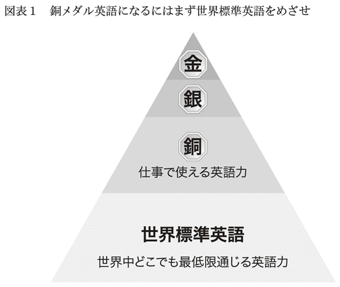
ネイティブと言われる人口は数億人にすぎませんが、世界中では数十億人が英語を話します。この中の大多数は途上国・新興国に住む人たちです。彼らは特に正式な英語教育を受けていませんが、生活の必要に迫られてカタコト英語を話します。本書ではこの人たちが話す、国際的に最低限通じる英語を世界標準英語と呼ぶことにします。数十億人ができることが私たち日本人にできないわけはありません。ここが第一目標です。この水準ならば誰でもほぼ練習なしで到達できます。
70歳を過ぎたぼくの母は、シンガポールの土産物店で青い人形を買いました。会計を済ませたあとで、やっぱり赤い人形が可愛いから取り替えたいと思い、とっさに「チェンジ！」と言いました。それが生まれて初めて実践で口にした英語でした。店員は即座にＯＫと言いました。
このレベルの英語が普段から出てくるようになれば、世界標準英語は合格です。
あと一歩で世界標準英語がしゃべれる
「『チェンジ！』だなんて、こんなにやさしい英語なら今すぐにできる。これが中間目標だなんてあまりに低すぎやしないか」と思った人はいないでしょうか。しかし、多くの日本人は確かに世界標準英語以上の語彙や文法を知っていますが、実際には練習不足のためそれが口から出てくるレベルに達していません。
コンビニに入って、商品を買って出てくるまでを想像してみましょう。店内ではほぼ言葉を発しません。口を開くとしたら、「○○○（の在庫）はありますか」とか「（お弁当の）お箸は要りません」といった程度です。にもかかわらず、日本では英語が聞こえてきただけで後ずさりしてしまう人がいるようです。
ぼくの住む香港も庶民の英語力は決して高くはありません。ただし、香港人は正式な中国名の他に英語名も持っており、「自分はウォルターだ」「シェリーだ」と名乗っているせいか、英語を話すことに抵抗感がありません。
ぼくはごく普通の日本人ですから、外見は香港人と変わりません。ぼくが買物に出かけると、店員は広東語で話しかけてきます。
「えっ、どうしよう」とぼくがほんの少しでも言い淀むのをみると、相手は「このお客さんは香港人じゃないぞ」と即座に英語に切り替えて話してきます。英語に切り替えるとはいっても、そこは世界標準英語ですからカタコト英語もいいところです。
知識レベルでの英語力は香港と日本でさほど変わらないのに、これだけの差が出てくるのはどうしてでしょうか。香港の人たちは周りが世界標準英語で仕事を切り抜けているので、自分も同じレベルの言葉を話せばいいと思っています。場数を踏んでいる、ということでしょう。
まずは、世界標準英語レベルのスピーキングから始めてみましょう。母のように、「チェンジ！」レベルが常にすらすら出てくることが目標です。
英語：日本語は一対一にしない
最初のレッスンです。あまりにやさしいので、「これではプライドが許さない」と思うかもしれません。しかし大事なことは、これがすぐに口をついて出てくるかどうかです。この英語がすぐに出てきますか？
問題：以下の日本語を見て、すぐに英語になるかどうか試してみてください。
「駅に行く道を教えてください」
もし、ここで「どう言うのだっけ？」と一瞬でも考えてしまった人にとって、ここでのレッスンは十分学ぶ価値があります。早速、やってみましょう。
駅 the station
行く道 the road to
教えて teach
ください please
のように考えて、
Please teach the road to the station.
としなくてもいいんです。
というよりも、この英語は通じますが、正しくはありません。
そもそも、なぜ正しくないセンテンスができてしまったかというと、日本語と英語の単語を一対一に置き換えているからです。これは最もやってはいけないアプローチです。
ぼくが思いつくままに書いてみます。
May I ask you the way to the station?
Can you tell me how I can get to the station?
Could you tell me the way to the station?
Excuse me, where is the station?
こうした英語がすらすら出てくるレベルになればいいのですが、それはすぐにはできないでしょう。「ほら、だったら、英語から日本語へ一語一語翻訳していくしかないじゃないか」と思うかもしれません。
それがそうでもありません。ここではそれよりずっと簡単で、もっと通じる英語を紹介します。
ポイントは「必須語で話せ」
英語を学び始めたばかりの人が注意すべき簡単なルールがあります。それは、「必須語を探せ」というものです。
日本文でも英文でも、文の中には必須の単語とそれ以外の、いわば、飾りの単語があります。ぼくが書いた先ほどの４つの英文をよく見てください。すべての文に共通の単語はひとつしかありません。それはstationです。それ以外は、「どこですか」に当たる部分が異なる表現で出てきます。
つまり、
必須語：駅、どこ
となります。それ以外は飾りです。だから、もし外国で道を聞くはめになったら、
"Station Where?"
でいいわけです。
これがぼくのすすめる英単語スピーキングです。
道に迷ったときに最初に頭に思い浮かぶ単語は行き先（この場合は駅）でしょう。思い浮かんだことをさっと言うのです。
デパートやお店の中だったら、「トイレはどこですか？」と聞く際に"Restroom?"だけ言えれば完璧です。もちろん相手への礼儀として、"Excuse me."くらいは添えたほうがいいですが、思いつかなかったら、なくてもかまいません。
ぼくがパリを旅したときはこれで乗り切りました。ぼくはフランス語は「こんにちは」と「ありがとう」しか知りません。数も１と２しか数えることができません。あるとき、道に迷い、シャンゼリゼ通りがどの方角にあるかまったくわからなくなってしまいました。四つ辻にお巡りさんが立っていたので、にこにこしながら近づきました。
「ボンジュール。シャンゼリゼ」
と言って、ぼくは四つ辻のそれぞれの方向を順番に指さしました。つまり、シャンゼリゼ通りの方向がどちらなのかを指さしてほしいと示したわけです。お巡りさんはにこにこしながら、左の方角を指差しました。ぼくは「メルシー」と言いました。お巡りさんも嬉しそうでした。
ぼくの意図したところは１００パーセント通じたし、お巡りさんも「今日は道に迷った外国人旅行者を助けた」と思ったことでしょう。これは完璧に意思疎通ができた例です。
ただし、自分の行き先だけは誰も察してくれません。たとえば、展望台に行きたい場合、展望台を英語でどう言うのかわからないと、場所を聞くことができません。必須語だけは英語で言えないと困ります。
「展望台っていう単語は知らない。どうしたらいいのだろう」と思う人もいるでしょう。その場合は必須語に近い単語を並べるのです。展望台が山の上にあるなら、そういえばいいですし、「美術館でなくて、プラネタリウムではなくて......」と言っているうちに相手が察してくれる場合もけっこうあります。
銅メダルをめざす段階では「下手な鉄砲も数撃ちゃ当たる」と思っていろいろ言ってみてください。実力が高くなるにつれて、ぴったりの単語や表現をだんだんと使えるようになってきます。
外見を気にしないで通じることに徹する
「これはブロークン英語だ。抵抗があるなあ」と思う人がいるかもしれません。
「ブロークン」という言い方をしてしまうと、響きが悪いのは確かです。ブロークンという言い方は「正統」な英語に比べて正しいか否かの基準で測った言い方です。そこには「ちゃんとした英語ができない」引け目が感じられます。
しかし、外見を気にしないで、まず通じることに専念すべきです。
読者のみなさんは、カタコト日本語の外国人に道を尋ねられた経験がおありでしょう。そんなとき、「あの外国人の日本語はブロークンだった」と思うでしょうか。それより、「なんとか無事に目的地に着いてほしい」と思うのではないでしょうか。
ブロークンな世界標準英語は、文字通り世界各地で広く使われています。
ぼくが住んでいたアラブ首長国連邦のアブダビ市にはバスや電車はありませんから、公共交通機関はタクシーだけです。タクシーのドライバーは皆パキスタン人で、客によってアラビア語と英語を使い分けてくれます。ただ、猛スピードで走る車を操るドライバーに対し、素早く正確に伝えなければ目的地にたどり着けません。
「次の信号を右に曲がってください」
は常套句でした。これはどう言うのでしょう？ 必須語を挙げてみれば簡単です。
「信号」と「右」が必須です。
したがって英語は、
"Signal Right."
となります。
なお、ここで丁寧に説明しようとして、「次の信号」の「次」を訳すつもりで、nextを付け加えてしまうと逆に大変なことになってしまいます。目の前にある信号のその次の信号のことと解釈されるからです。「次」はもともと必須語ではありません。
この英語は、間違いなくアラビアでは「正式」な英語でした。一緒に乗った友人のイギリス人も運転手にそう指示していました。ぼくはからかって、
「お前のその英語、どうなっているの？ 君はイギリス人だったっけ？」
と揶揄しました。
「これが、いちばん通じるんだよ」
と彼は言っていました。
正統な英語をしゃべっても、相手が理解できなければ意味がないのです。
Signal Rightなら口からすぐに出てくるでしょうから、「まず言っちゃえ」というのがぼくのアドバイスです。そのほうがずっと〝会話らしい〟会話になります。「正しい英語」を組み立てて言い淀んでいるうちに、タクシーはどんどん先に走っていってしまいます。まずはこのレベルができてから、また次の段階に進むことを考えればいいのではないでしょうか。
通訳、ビジネスも英単語スピーキングでＯＫ
「日常会話はその程度でもいいだろうが、正式な場面では役に立たないんじゃないか」と思う人もいるでしょう。たしかに晩さん会のような席では無理かもしれません。でも、一般のビジネスでもこの程度の言葉の使い方で問題はありません。
ぼくは株式投資を仕事とするファンドマネージャーですから、部下たちと日本の経済ニュースを日々共有し、それについて話し合ってきました。
「今日はいいニュースがあったよ。失業率が０・３％下がったんだ」
これは、よくある部内での会話です。これを英語で言うとどうなるでしょうか。ぼくが実際に使っている表現そのままをここで書きます。
"Good news. Unemployment rate Down 0.3%."
この中で必須単語は３語。「失業率」と「０・３％」と「下がった」だけです。
丁寧な人ならば、日本語と同じようにちゃんとした文で話すかもしれません。そういう人でも、もし「聞こえなかった。もう一度言ってよ」と言われたら、
"Unemployment Down 0.3."
といった大事な箇所だけを繰り返すでしょう。その際はrateも%もなくなっています。
通訳をする場合も、一言一句正確に訳す必要はありません。あるプレゼンテーションの通訳を頼まれたとします。話し手が「みなさん、これから３つの大事なことをお話しします」と言い、それを訳すことになったとします。
ぼくが訳せば、
"Three things."
だけです。
先の日本文で必須語は「３つ」だけです。語感を大切にして日本語に訳し戻すと、「ポイントは３つ」くらいになるでしょう。聞き手にはちゃんとそう聞こえています。
聞き手の外国人は「３つのポイントは具体的には何か」に興味があるのであって、早く次が聞きたいのです。そうでなくても、話し手が日本語をしゃべっているときは呪文を聞いているようで退屈な時間です。だからここはさっと訳すのが最高です。
英語は単語だけでも意味を成す
どうして単語を並べただけでもビジネス上問題がないのか？ 実は、それが英語の特性なのです。
たとえば、ビートルズの大ヒット曲は"Yesterday"。直訳すると「昨日」です。日本だったら「昨日」というタイトルでは売れないでしょう。あまりにそっけない感じです。ミュージカル「アニー」の代表曲"Tomorrow"にしても、邦訳すればただの「明日」で味気ない。「明日があるさ」なら、様になりそうです。
米国で、銀行やスーパーのレジの列に並んだことのある人は、大声で"Next!"と呼ばれた経験があるでしょう。これを「次！」と訳すと高飛車な姿勢に腹が立ちますが、米国人には「お次の方」くらいに聞こえているはずです。英語では、単語だけでもそれ以上の意味を語っているように聞こえるのです。
英単語スピーキングのいいところは、すぐに英語が出てくることです。会話の流れを大切にできるところです。これができるようになれば、次の段階（単語だけでなく文が口から出てくる段階）につながっていきます。つまり「点」の英語から「線」の英語へ成長していく準備段階でもあるのです。
英単語スピーキングが難しいと感じる人はいないでしょう。問題は、この英語をプライドが許すかどうかです。そこを超えれば、一歩踏み出したことになります。
１―３ 「ぎこちない間」が最大の障害
一瞬の遅れが〝意味シン〟をもたらす
ぼくが英単語スピーキングをおすすめする理由は「思いついたらすぐに口にすること」がとても大事だからです。一瞬でも「どう言ったらいいのか」と戸惑うだけで何とも心地の悪い間が生じてしまいます。これが会話の流れを悪くする最大の原因です。その場の雰囲気をだいなしにしてしまいます。日本人は何を考えているかわからないとネイティブから言われるのも、このあたりに原因があるのでしょう。
言葉がすぐに出てこないと、誤解が生じてしまうことがあります。恋人同士の会話の例を見てみましょう。
男：「次はいつ会える？」
女：「金曜日はどう？」
これはありふれた２人の会話です。ごく自然です。しかし、次のように変わるとニュアンスが違ってきます。
男：「次はいつ会える？」
女：「......」（と一瞬の間を置いてから）「金曜日はどう？」
この場合、敏感な男性だったら、「２人の関係に何かひびでも入ったのかも。ぼくが何か気に障ることでもしたのだろうか」と感じるかもしれません。
会話では相手が何か言ったら、自分が即、何か返すのが原則です。そこで一呼吸置いたら、そこには何らかの意味があるのではないかと解釈されてしまいます。
みなさんは英会話で同じことをやっていないでしょうか。
「自分はできるだけすぐに答えているよ。一呼吸なんて置いていない」という人も、もう一度自分の話し方を思い出してみてください。
間が長いと怖い人に思われるかも
ネイティブから何か言われた場合、それを理解してから英語が出てくるまで少し時間がかかります。
このプロセスにかかる時間はほんの少しかもしれません。でも、国際電話を思い出してみてください。自分が何か言ったあとに相手の反応が遅れた経験はないでしょうか。遅れたといっても１秒もない程度の間です。それでも市内通話と比べてなんだか話しにくく感じます。
気心の知れた仲のネイティブなら、会話中に多少間が空いても「英語が出てこないんだろう」と察してくれるでしょう。でも、これが初対面だとそうはいきません。
大学生の頃、友人３人とぼくの合計４人で初めての海外旅行に出かけ、サンフランシスコに行きました。「シスコの地図が買いたい」と友人が言うので、４人で近くの本屋に入りました。店員が「いらっしゃいませ」と言いました。20歳くらいの可愛い白人女性でした。
友人は「地図はないでしょうか」と尋ねるつもりだったのですが、英語が出てきません。頭の中で用意したはずの英語がすぐには出てこなかったのです。黙って立っているだけでした。ぼくを含めた残りの３人もただ黙っていました。
一瞬ですが、店員の顔が引きつっているようでした。彼女の立場に立ってこの状況を考えてみれば、その理由はわかります。日が暮れて狭い店内に、見知らぬ東洋人の男４人が黙ってこちらを見ているのです。店側の人間は自分ひとり。強盗かもしれないと思ったことでしょう。
ようやく友人の口から「地図が欲しいんです」と英語が出てきて、事態は収まりました。店員に笑顔が戻って地図売り場までぼくらを案内しました。ただ黙っているだけだと相手は恐怖心を持ってしまうのです。
正確に話そうとする真面目さがあだとなっている
ぎこちない間が生じてしまう最大の理由は語学力が不足しているからですが、それ以外に日本人特有の理由があるとぼくは考えています。
欧州の人はもともと言葉が英語に近いですから、自分の国の言葉の延長として英語を話してしまうので、文法がいい加減なことが少なくありません。
日本語は英語とまるで違った言語体系ですから、それだけに多くの日本人は「英語は文法から」と思ってしまっているのです。しかも、私たちは几帳面ですから、正確でないと気が済みません。精巧な工業製品をつくるにはこうした性分がメリットとして働くのでしょうが、コミュニケーションでは、潔癖なまでに自分が習った通りに話そうとしてしまいがちになり、マイナスになります。
たとえば、「三単現のＳ」という文法。
Heのあとはdo notではなくて、そうだ、does notだったなと思い出すわけです。場合によっては途中までHe do notと言ってしまってから思い出してHe does notと言い直します。思い出すのに時間がかかりますし、言い直せば会話は停滞してしまいます。
また、「日本人の英語はネイティブにはこう聞こえている」という類の本によくある例文として、たとえば、
1) Call me a taxi.
2) Call me taxi.
のようなものがあります。
違いはaがあるかないかだけですが、意味が大きく違ってくるというのです。は「タクシーを呼んでください」ですが、では、aがないので、taxiは人の名前になってしまい、「私をタクシーと呼んでください」という意味になる、と説かれています。
文法上はまさにこの通りなのですが、これは重箱の隅をつついたような議論です。ホテルの人が意味を取り違えて、宿泊客を「タクシーさん」と呼び始めることがあり得るでしょうか。こうした話を真に受けると、「aをつけるんだったかな？ それとも要らなかったかな？」と発言前にびくびくした気持ちになってしまいます。一般に、aとかtheとかに注意を払うのは金メダル英語になってからで十分です。いちいち正しい言い回しに直していたら、会話のリズムが崩れてしまいます。
英語が下手なのは日本人だけではありません。それでも、国際的なコミュニティの中で日本人だけが「何を考えているかわからない」と、得体のしれない生き物のように思われるにはそれなりの訳があるはずです。その一つが間の長さではないかとぼくは考えています。
簡単には直すことはできないでしょうが、「ぎこちない間が最大の敵」とわかれば、私たちも対処のしようがあるはずです。正しい英語を時間をかけてひねり出すよりは、英単語スピーキングで即座に英語を口にするほうがずっと好感が持てます。それすら出てこないときは"Well."とか"Let me see."などと口にして間を埋めるのがいいでしょう。
本書ですすめる方法を身につければ、ネイティブが「安心」して話せる相手になれます。結果、ネイティブから好かれ、会話が弾む日が来るのは遠くありません。
１―４ 銅メダルになればここまで通じる
銅メダルの存在が目立たないのは少数派だから
本書をここまで読まれたみなさんは、英単語スピーキングによる世界標準英語にはすぐに到達できると思ったはずです。ぎこちない間を減らすこともできると思ったことでしょう。それではその先にある、本来の目標、銅メダル英語は具体的にどのようなレベルなのかを見ておきましょう。
銅メダル英語の実力に達すれば、図表２にあるように、ネイティブと一緒に仕事ができ、海外出張や駐在、英語プレゼンテーションもできるようになります。
本書の中でぼくが最も言いたいことを凝縮するとすれば、それは「銅メダルになればかなりのことができる。しかも銅メダルは手に届くところにある」です。まえがきでも述べたように、ぼくは長い海外生活や国際業務の経験から、英語のレベルが高くないにもかかわらず、そのハンディを感じさせない立派な仕事をしている人を見てきました。その存在は目立ちませんが、国際派として活躍しています。その人たちの英語を銅メダル英語と名づけました。
一方、ＴＯＥＩＣ９００点でも銅メダルに達していない人もたくさんいます。そうした人たちは今ひとつ自信が持てないまま国際関係の仕事にあたっています。銅メダルに達していない人たちが世の中の多数派を占めるため、国際業務はプロ級の英語の腕前がないとできないと思われていますが、それは違います。
ぼくが「銅メダルは馬鹿にできない実力だ」と心から思えるようになったのは、ＭＢＡ時代の友人がきっかけでした。正確に言えば、友人の妻のアガサのおかげでした。
友人はマレーシアの金融機関勤めを辞めて、アガサとともにアメリカに来ていました。マレーシアの金融取引は、自国人同士でも英語で行います。そのせいか、友人は流暢な英語を話します。
これに比べて、アガサは海外留学の経験はないし、仕事でも英語を使っていなかったらしいのですが、打てば響くような受け答えができるのです。親しくなるにつれてわかってきたのは、彼女がとても簡単な単語だけで会話をしていることでした。
たとえば、摩天楼のビル群を指して、
"Looking is closer than going."
と言いました。彼女は「見た目では近いけど、行ってみると案外遠い」と言いたかったのです。正しくは、
The buildings look closer than they actually are.
と言うべきでしょうが、周りにいた人たちは、皆すぐに彼女の言いたいことがわかりました。ぼくにはアガサの英語の言い回しのほうがわかりやすいくらいでした。
大きな本も太っている人もbig、驚いたときだけでなく、怒ったときもショックを受けたときもsurprise、２階建ての家も２段重ねのケーキもtwo layer。医療の話をするときは心臓外科（cardiosurgery）、小児科（pediatrics）といった難しい単語を使いますが、アガサはheart doctor、child doctorで済ませていました。
アガサは、ぼくにとっては身近な「株主」「世論調査」といった新聞の単語は得意ではありませんでした。しかし、ぼくが苦手な日常表現、たとえば、「鼻をかむ」「時計回りに」などはすぐに口に出てくるのです。
彼女のやさしい言い回しを聞くとき、「なあんだ。これくらいだったら、ぼくでもできそうだ」と思いました。彼女が実践の中で銅メダル英語を磨いてきたのを感じました。
単語を並べただけの英語でも銅メダルになれる
銅メダルのレベルにも実力の幅があります。アガサはかなり熟達した銅メダルでしたが、英検２級に合格したばかりでも銅メダルの仲間入りをしている人もいます。
それは米国での英語学校の同級生、由美さんでした。彼女はクラスの人気者でした。世界中から集まっている学生たちに向かっておもしろい話をしてはクラスを沸かせていました。
「世界中の言葉を流暢にしゃべれる名人って誰だと思う？」
彼女の楽しいジョークが始まったと思い、皆聞き耳を立てています。
「刑事コロンボよ」
「日本のＴＶに出たら日本語をしゃべっていたわ。韓国で見たら韓国語をしゃべってた」
由美さんは決して英語が得意とは言えませんでした。彼女の英語に注意深く耳を傾けていると、刑事コロンボのジョークは単語を並べただけの英単語スピーキングで話を進めているのがわかりました。
「本当は３つ下のレベルのクラスに編入させられたの。でも先生のところに行って、『私はもっとできるはず』と言ったら、３階級特進になった」と言っていました。彼女は毎年何百人という学生をクラス分けしてきた先生の目を英単語スピーキングだけで「ごまかす」こともできたのです。
由美さんは１年後国際関係論の修士課程に入学し、その後米国に永住しました。短期間で英語がどんどん上手になっていました。
20点でも会話が通じてしまう理由
前に述べたように、１００点満点で20点が銅メダル英語の入り口です。英検だったら２級程度、ＴＯＥＩＣなら６００点くらいからでしょう。「自分は英検２級だけど、ネイティブが来たら逃げ出したくなっちゃうよ。自分が銅メダルだとはまるで思えない」と思う人がほとんどではないでしょうか。つまり、今の実力では由美さんのように会話を交わすことができるようにはなれない、と思っているということです。
そう思う人たちは英語に囚われすぎています。20点でも会話が成立するのには「お互いがわかりあうのに言葉はそれほど重要な要素ではない」ということが背景にあります。言葉がなくても、もともと通じる部分があるのです。
例を挙げましょう。ぼくは妻からノリと呼ばれています。夕方妻から「ノリ！」と言われたら、夕食の準備ができたという知らせです。夜ＴＶを観ているときに「ノリ！」と声がかかったら、「自分はお風呂を出たから、あなたもどうぞ」ということだし、ぼくがトイレに入っているときに「ノリ！」と言われたら、「早くして。私も使いたい」という意思表示でしょう。名前を呼ぶだけで言いたいことが通じています。
大事な電話を待っているときを思い浮かべてください。大きな商談の成立とか、試験の結果の通知といった電話は、相手の第一声が聞こえ始めただけで、うまくいったのか否かの察しがつきます。
洋画も通訳も言葉以外で伝えている
夫婦間や職場内でのような密接な関係以外においても、言葉でないものを頼りにしていることが多いです。洋画を観るときのことを例にしてみましょう。
今、映画館で上映されるほとんどの洋画は、吹き替えではなく、英語のまま（日本語字幕付きで）上映されます。耳は英語を聞き、目は字幕を見るのでせわしないです。セリフの意味を１００パーセントとらえるという点では、吹き替えのほうが圧倒的にいいはずです。
それでも吹き替えが流行しないのは、英語のセリフの中には翻訳できないものがあるからです。俳優が演じる情熱、愛、憤りなどは、原語のままでないとどうしても伝わりません。ぼくはＤＶＤを見るときに、たまに吹き替えの声を聞くことがあるのですが、主人公がまるで別の人格のように感じてしまいます。俳優たちの声のトーンは言葉の内容以上の情報を発信しているのです。
通訳の際にも、同じことが言えます。通訳を頼まれるとぼくはあるアドバイスを必ずします。それは「通訳であるぼくのほうを見ないで、ネイティブのほうを見て話すようにしてほしい。ぼくの日本語を聞く際も相手に向かって頷いてほしい」ということです。
すると考えられないことが起こります。ネイティブがぼくの通訳中に割り込んできて、「そこのところだけど、もう少し補足させてほしい」と言いだすのです。日本語をひと言も知らないのに、ぼくがどのあたりを訳しているのかがわかっているようなのです。相手の相槌の具合などから推し測っているのでしょう。
英日通訳の練習として、全然知らない言語（例：スペイン語）のテレビ番組を見て、通訳するというのがあります。これは途中で内容がわからなくなっても適当に判断して「わかった振りで通す」という練習です。また、言葉に集中しすぎずに雰囲気を大切にする訓練でもあるのです。
みなさんもネイティブの話がわかったという場合は、聞き取れた英単語をつなぎ合わせて類推しただけではなく、雰囲気でなんとなく察せられたということも多いでしょう。
１―５ 英会話も会話、コミュニケーション力を磨け
「英語がなかなかうまくならない」のは当然
ここまで読み進んできた読者のみなさんは、「英語ってそんなに簡単だったっけ？ 変だなあ。自分は苦労ばかりしている」と思ったのではないでしょうか。それが多くの人の実感でしょう。
世界標準英語までは明日にもたどり着くことができます。しかし、そこから先にある銅メダル英語に到達するのには、今までのやり方から脱却することが近道です。
「20点の英語力でも通じる」というのは裏を返せば、「高得点英語になるのは難しいから、20点英語で通してしまえ」という意味でもあります。もし英語がらくちんに上達できるならば、最初から「１００点を狙いましょう」でいいはずです。
英語をマスターするのはとても難しいです。その理由は、プロを相手にしなければいけないからです。
私たちが職業として仕事をする場合は、その道のプロとして「素人」を相手に仕事をします。ぼくの場合はファンドマネージャーとしてお客様の資産運用にあたります。お客様は資産運用の知識や経験がないですから、プロに仕事を依頼するわけです。医師、エンジニア、大工、美容師など、どのような仕事でも同じことがいえます。
仕事の場合は、素人より高い水準の知識や技術を持てばいいわけです。弁護士や公認会計士、医師などの高度な専門職でも大学（院）に行って試験に合格し、ある一定の研修を受ければプロになれるのは、それが理由です。
一方、英語は、米国や英国、カナダ、オーストラリアなどを中心に母国語として数億の人が話しています。この人たちは生まれたときから英語を使い続けているプロ中のプロです。英語で相手にするのは、素人さんではなく、一流のプロたちなのです。
語学は本質的に難しいのです。他のものに上達するのとはまったく違ったアプローチが必要になります。そこで重要になるのがコミュニケーション力です。
これまで見過ごされてきた「英語以外」の力
図表３の左側にあるように、従来の考え方はコミュニケーション力に重点を置かない英語力一点主義でした。つまり、
英語力が高い＝英語が通じる
英語力が低い＝英語が通じない
という発想でした。この発想のもとで英語教育を受けると、自分の成績ばかりが気になり、「自分は英語ができないから話が通じない」と思い込んでしまうのです。
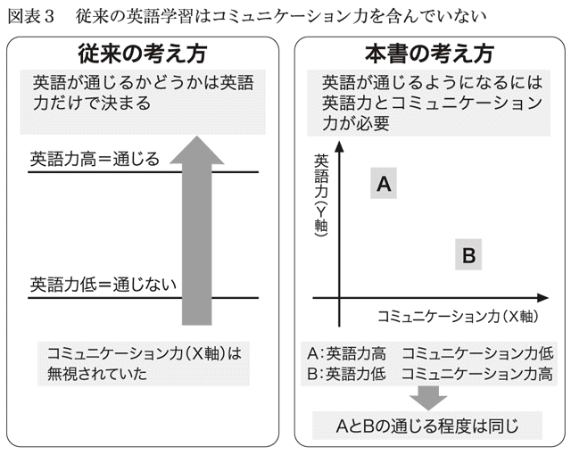
多くの英語学習書も英語力だけを対象にしています。英会話スクールも英語力中心です。せっかくネイティブの先生がいるのに、
What time did you wake up this morning?（今朝あなたは何時に起きましたか？）
に対して、
I woke up at seven.（私は７時に起きました。）
とやっているのです。これを、
Seven.（７時です。）
と答えると、「正確に言い直してください」と言われてしまいます。日本語でも馬鹿丁寧に「私は７時に起きました」などと答える人はいないように、英語でも「７時です」としか言いません。けれどもクラスでは、ネイティブでも使わないような英語を学ばされるのです。「正しい文法」などにこだわっていると、いつまで経っても話せないし、誤解も生じやすくなるだけです。
これに対して本書の考え方では、図表３の右側のように「通じる英語には英語力（Ｙ軸）以外にコミュニケーション力（Ｘ軸）が必要だ」としています。ＴＯＥＩＣが６００点なのにネイティブとの会話が案外通じるのは、単語力や文法力以外にコミュニケーション力をうまく利用しているからです。アガサや由美さんが英語力20点でも話が通じるのもそのためです。
コミュニケーション力とは、情報、自分の気持ち、決意などを伝える力です。英語だけでなく、どの言語の会話でも役立つ力です。ひとことで言えば、「英会話も会話。コミュニケーション力を磨け」ということになります。Ｙ軸ばかりを気にしている人の多くは、これまでネイティブと実際に接触した経験が少ないのではないでしょうか。戦いに勝つには敵を知らなくてはいけませんが、敵を知らずに恐れているような気がします。
英語力とコミュニケーション力を同時に発揮する
銅メダルに到達するには、まず自分の現在地（現在の自分の英語力）を知らなくてはなりません。今自分がどこにいるかがわからなくては目的地への行き方がわからないのと同じです。多くの人が、自分の現在地を誤解しています。
多くの人はすでに相当の実力を身につけています。今持っている英語力で本当はもっと通じるはずなのに、コミュニケーション力が意識されていないために、うまく英語力を発揮できていません。だから、「自分はまだまだ話せない」などと実力を誤解しているのです。
図表４では、みなさんが「自分の英語力はこの程度だろう」と思っているレベルを原点（Ｘ軸とＹ軸の交差した地点）としてあります。しかし実は、おそらく、本当の実力は図中の☆印の場所あたりにあるのです。原点（自己評価の実力）に比べて、銅メダル英語にかなり近い位置です。このことをぜひ頭に入れておいてください。
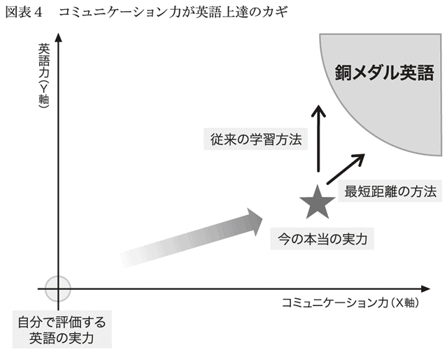
本書では、ここから最短で銅メダル英語に近づくことをめざします。Ｙ軸方向の力だけ伸ばすのはつらいし、遠回りです。コミュニケーション力と英語力を一緒に伸ばすことで、矢印は最短で、右上45度の方向へ伸びていき、楽に銅メダル英語に近づくことができます。
コミュニケーション力と英語力は、一緒に向上するものです。運動選手は気分が高揚しているときは普段以上の実力が出るように、英会話においても、コミュニケーション力さえ発揮されれば、英語力も十分に働くようになります。
みなさんはこれまでコミュニケーション力が英語に影響するなどと考えてこなかったでしょう。コミュニケーション力は意識するだけでもすぐ効果を発揮しますから、そのことを念頭におくだけで、かなり銅メダルに近づくことができます。さらに、人づきあいのうまい人（日本語のコミュニケーション力がもともと高い人）はそうでない人に比べてかなりリードできます。
銅メダル英語への道すじ
本書の構成を具体的に説明しておきます。図表５にあるように、まず大きな目標は、コミュニケーション力のある英語、つまり、通じる英語力を身につけることです。これは「スピーキングを重点的に攻略する」（第２章）、「大事なところに絞った学習を行う」（第３章）、「発音やリスニングは後回し」（第４章）という３つのやり方に分類し、順を追って説明します。
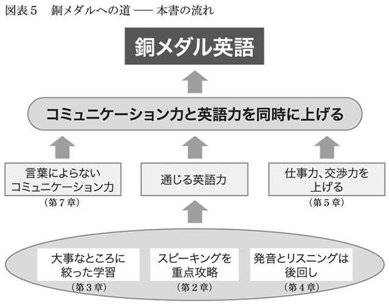
さらに、仕事で英語を使う場合には仕事力が重要です。特に交渉力です。これについては第５章で述べます。また、先にも書いたように、コミュニケーションは言葉によらない部分も少なくありません。その向上について詳しくは最後の第７章で扱います。
これらの道順をたどった先に、銅メダル英語が待っています。
なお、金・銀メダルをめざす人のための上達法を第６章に書いておきました。さらに上をめざしたい人はぜひ参考にしてください。
銅メダルだってメダルのひとつだということを忘れないでください。20点でメダルをもらおうというのですから、他の英語学習法の本に書いてあるようなやり方はしません。英語力だけでなく、自分の持つすべての力を活用していきます。特にＸ軸方向の力は、これまでの人生経験を生かすことで、比較的簡単に伸ばすことができますから、活用しない手はありません。
第２章 スイスイ上達できるのはこの勉強法だ
２―１ スピーキングに絞って攻略する
やさしいものから攻略するから伸びる
この章はぼくのすすめる英語上達法の中核です。
米国の大学院に留学した際、ぼくは一緒に入った日本人15人の中で最も英語が不得意でした。日本人の中で最低ということは、すなわち全学内で最低でした。しかし、卒業時点では日本人留学生の中で上位の英語力にまでなっていたと自負しています。日本人の仲間内での比較ですから、たいしたことはないのですが、伸び率でいえば、全外国人留学生の中で間違いなく最高だったでしょう。ぼくの追い上げの理由は、ここで紹介する勉強法です。
言語には４つの側面があります。話す、聞く、読む、書く、の４つです。ぼくの提案はこの４つが一度にうまくなることを考えないで、「まずひとつだけ挑戦する」というものです。その場合、４つ同時にやるのに比べて、そのひとつの上達は４倍の速さになります。
「４つをバラバラに切り離していいのだろうか」と不安に思う人がいることでしょう。でも、日本に住む外国人の中には会話は完璧なのに、文字が書けない人が結構いますし、私たちが中国人と話すときは筆談でかなり通じます。「とにかく通じる」ことをめざすならば、いちばんやさしいものから攻略していけばいいのです。みなさんだったら４つのうちのどれから始めますか？ ひとつずつ考えていきましょう。
書く
英文を書く機会って多いでしょうか。
それは日本語で考えてみればわかります。日本語で話す、聞く、読むは日々使っている能力でしょうが、毎日書く人は少ないのではないでしょうか。最近は友達に日々メールする人もいるでしょう。でも、そこで書くのは、いわば、話し言葉を文章化しているもので、どちらかというと「話す」に近い作業です。
書くとはやや正式な文章を書く作業です。日本語ですらあまり書かないのですから、英語だって書く機会は少ないはずです。だったら、書く力を養うのはうんと後でかまわないということです。
率直に言うと、ぼくの学習法では「書く」をバッサリ切り捨てます。英語をマスターするまでのいずれの段階でも、書く練習は行いません。ぼく自身も書く練習はこれまでまったくしたことがありません。メール程度の文章なら、話す力がつけば書けます。正式な文章も、話す力と読む力の両方がついてくれば、自然と書けるようになってきます。
読む
次に「読む」力について考えてみましょう。
「日本人は英語を話せないが英文を読むのは得意だ」と言う人がいます。これは本当ではありません。なぜかというと、欧州や中南米の人の英語の場合と比べると、単語力が圧倒的に劣っているからです。ヨーロッパやメキシコなどから来る留学生は自国の言語と英語に共通する語源のものが多いので、単語の意味を類推できるようです。
次の経済ニュースは日本語で書かれています。新聞記事を簡略にしたものですが、まず、読んでみてください。
（記事）
○○○○株式会社代表取締役○○氏は東日本大震災の被災地への義援金として私財１億円を送ると発表した。
傍線部にあたる英単語をご存じでしょうか。もし知らなければ、「○○氏が１億円を送ると発表した」という大意だけがわかることになります。大震災が大きな話題になっているところで聞けば、ああ、義援金の話だろうなと何となく想像がつく程度です。
「読む」とは新聞、雑誌などから情報を得る場合やネイティブからのビジネス文書を読む場合がほとんどです。新聞を読むのに必要になるようなキーワードのほとんどは、日常会話では使わないでしょう。話し言葉に比べて読み言葉は難しくなります。
聞く
次に「聞く」力を考えてみましょう。
ネイティブとつき合いのある人の多くは、早口でガンガンしゃべられて閉口しているはずです。誤解のないように言えば、ネイティブはわざとまくし立てているのではありません。相手が日本人だということで、本来のスピードよりかなりゆっくりしゃべっています。でも、私たちには機関銃のように聞こえてしまうのです。
「日本人の発音する英語はわかるが、ネイティブの発音はまったく聞きとれない」という人も多いでしょう。
ぼくも以前は「ネイティブはなぜもっとスピードを緩めて話してくれないのか」と不満に思っていました。でも、自分が逆の立場に立ったときこれが間違いだとわかりました。90歳を超えて耳の遠くなった伯父さんに話しかけたとき、ぼくはできるだけはっきりゆっくり話そうとしました。それでも聞きとれないようで、ぼくは同じ話をさらにゆっくり繰り返しました。自分でやってみてわかったのは、「ある程度以上にゆっくり話すのは無理だ」ということでした。
「きょ・う・は・て・ん・き・が・い・い・で・す・ね」（今日は天気がいいですね。）
を一語一語区切るように発音してみてください。日本語として意味をなさなくなってしまいそうです。ロボットが話しているようになってしまい、久しぶりに会った伯父さんと会話をしている高揚した気持ちが抜けてしまうのです。
相手のペースに合わせざるを得ない以上、いきなり「聞く」をめざすのには無理があります。本格的なリスニングは金メダルをめざす段階でやれば十分です。銅メダル時代のリスニング上達法については、後の章で触れることにします。
話す
最後に残ったのが「話す」力です。
実はこれが最も簡単です。先程の「日本人は読むのが得意だ」という神話は「話したり聞いたりする会話は苦手だ」という英会話に対する劣等感の裏返しの表現ですから、話すのが簡単と言われると驚いてしまう人がいることと思います。でも、会話が難しいのは聞き取りが難しいからで、話すのはそれほどでもありません。
話す、聞く、読む、書く、の４つの力は大きく分けると２つずつになります。アウトプット（自分から人へ）とインプット（人から自分へ）の２つで、前者が話す、書く、後者が聞く、読む、です。
すなわち、
アウトプット ＝ 話す、書く
インプット ＝ 聞く、読む
となります。
インプットは難しいです。相手に左右されるからです。相手が専門的な話をしたり書いたり、早口でまくし立てたりした場合でも、それを理解しなくてはなりません。「ぼくに話すときは普通の３倍ゆっくりとしたスピード、内容は基本語１５００語だけで話してくれよ」と相手に要求することはできません。
アウトプットのほうがインプットに比べて圧倒的にやさしいのです。
「話す」のいいところは自分のペース
たとえば、人と待ち合わせをする際に、
「この前会った渋谷のハチ公前で来週の金曜日の午後７時に会おうよ」
と一気に言ってもいいですが、これが英語だったら途中で区切ったほうが楽かもしれません。
たとえば、
「次回のこと。来週金曜日。時間は午後７時。場所は渋谷ハチ公前。この前会ったよね」
とやっても意味はまったく同じです。この一つひとつを英語で言うなら、なんとかできそうではないでしょうか。しかも、この区切り式日本語は決しておかしな日本語ではありません。文字にして読むと若干変ですが、このまま話すなら、聞いている人には違和感なく自然に流れます。
インプットは相手のペースですが、アウトプットはこちらのペースです。自分がよく知っている単語だけを使って、自分が話せるゆっくりとしたペースで話していいのです。アウトプットでは単語をひとつ覚えるたびに話せる範囲がどんどん広がります。自分の伸びを最も実感できるのが「話すことから始める」方法なのです。
「話す」ことができれば仕事になる
「話すことだけに集中して取り組むんだったら、聞き取りはどうするの？ 上達しても、相手の言っていることがまるでわからないってことになるのでは？」という疑問が湧き起こるのは当然です。
話す力が伸びてくれば、聞き取りの力は自然と伸びてきます。さらに、単語力もついてくるので、文章を読む力ももちろんついてきます。ただし、当たり前ですが、話す力だけが断トツに伸びますから、「話せるが聞けない」という状態になることは確かです。
「それは困るぞ」と思う人のために、ぼくが見たタイ人の銅メダル日本語の例を挙げます。
タイの名所旧跡を日本語で案内してくれる観光ツアーに参加したとき、案内するのはタイ人で、バス内の説明はすべて日本語でした。ランチタイムになって乗っていたバスを離れるとき、ぼくは３つの質問をしました。
質問１：「トイレはどこですか？」
ガイドは指をさして、「あそこです」と答えました。
質問２：「出発時間は１時半で間違いないですね」
これに対しては、「１時半です」と答えてくれました。
質問３：「このバスは何時ごろからここに戻っていますか？」
この日本語がまるで通じませんでした。何回か言い方を変えて言ったのですが、わかってもらえませんでした。
この質問の趣旨はこうです。観光地のバスは、運転手や添乗員が別の場所に食事に行くことがあります。バスの扉を開けたままにしておくと物騒なので、場合によっては集合時間の15～30分前までバスが集合場所にいないことがあります。ぼくはそれを尋ねたわけです。
質問１と２はよくある質問だし、その内容も簡単です。これに比べて、質問３はあまりない質問でしょうし、やや複雑な言い回しです。ガイドの日本語を観察してわかったのは、「話せるには話せるが、日本人の日本語は聞きとりにくい」ということでした。お客さんから質問が出るたびに何度も聞き返していました。
それでも、このガイドの日本語ツアーは十分に成り立っていました。お客さんの中にガイドの語学力を不満に思っていた人はいなかったようです。ぼくも含めて、乗客たちは皆ガイドの話す観光案内に楽しく聞き入っていました。
銅メダルは「相手に自分の意思を伝えることはできる。でも聞き取りが苦手だから相手の疑問・質問には答えられない場合がある」という問題が残っているレベルであることは認めなくてはなりません。しかし、タイ人のバスガイドに聞いたら、日本語を学び始めて３年とのことでした。それで銅メダル日本語となり、ガイドという職業にまで就くことができるのです。この効率の良さは捨てがたいでしょう。
ぼくは、努力には地味な努力と派手な努力の２種類があると思っています。地味な努力とは人知れずにコツコツと努力を積み重ねるやり方です。これに対して、派手な努力とは努力のぶんだけ人からすぐ評価されるようなやり方を指します。私たち日本人は地味な努力を美談として好みますが、英語に関しては派手な努力をすべきです。
他を捨ててスピーキングをうまくするのは派手な努力です。聞き取りや読みがうまくなっても、初めのうちは他人にはよく見えません。スピーキングは相手に語りかけるものだけに目立つのです。
「それでは困る。話せるようになりたいけど、聞き取りもできるようになりたいし、読み書きもできるようになりたいよ」と思う人がまだいるのではないでしょうか。
ここが肝心なところです。そうやってすべてを満遍なくやろうとしてきたから、今まで成功しなかったのではないでしょうか。強固な城を攻める際には、全体を攻撃するのではなく、いちばん弱そうな箇所を重点的に攻めることが大事だと言われています。まずスピーキングに集中する。そして、スピーキングがある程度うまくなった時点で、後の３つについては考えればいい、というのが英語という難攻不落の城を落とす最短のコースなのです。
２―２ 最速の上達を約束する「ひらめき」英語法
ネイティブと会話をしているだけでは力は伸びない
ネイティブと会話しながら英語を学ぶのが効率的なのは確かですが、ネイティブと話していれば、それだけで英語がどんどんうまくなっていくかというと、そうでもありません。
ネイティブとの語らいはカンフル剤の注射のようなものです。その時点で持っている力のすべてを出し切ることはできますし、「自分の英語は結構いける」と思えることが多いです。しかし、それだけでは底力を上げていくことはできません。留学や駐在経験者の中に英語があまりしゃべれない人が意外に多いのはこのためです。相手とうまく話している姿を心に思い描きながら、普段は練習を自分ひとりで繰り返すことが大事です。
英会話は社交ダンスに似ています。経験のない人は驚くかもしれませんが、社交ダンスを本気でうまくなろうと思う人は、普段は男性も女性も組んで踊ろうとはしません。大事なのは自分の踊りをしっかり覚えること。人にはそれぞれのクセがあるため、自分の踊りが固まらないうちに相手と組むと、ペースが乱され上達が遅れるのです。
もちろん、異性と踊る楽しみがなければ続きません。でも、それはたまにあれば十分です。英語も社交ダンスのように力を試せる相手がいれば勉強に意欲が出ます。いつ使うかわからない英語を学ぶのはつらいですから。
しかし、ネイティブと話すことは、英語の上達という目的の前では「脇役」であることをお伝えしておきます。脇役といっても、社交ダンスのパートナーのように欠かせない「脇役」です。主役は日々の練習です。
これから紹介する学習法には、ネイティブの友達は不要です。この方法をぼくは「ひらめき英語法」と名づけました。簡単に言うと、心の中のひらめきをそのまま英語にしていく方法です。
英単語スピーキングは、目の前にいるネイティブ・スピーカーを相手に、現状の英語力でなんとかその場をしのぐのがねらいでした。このひらめき法は語学力向上をめざしたものです。芝居にたとえるなら、英単語スピーキングが本番、ひらめき法は稽古です。稽古が多いほど本番がうまくできるようになり、本番でのスピーキングが単語の羅列から文になってきます。早速その方法をご説明しましょう。
何でもいい、頭に浮かんだことを英語にする
最も効果的な勉強の時間は、ぼーっとしているときです。電車の中とか家の中で、だらーっとしているときです。そんなとき、何か心に浮かんでくるはずです。ぼくの場合だったら、
「おなかがすいたなあ」
「今日は10時から会議だ。退屈だなあ」
「急用でも作ってさぼろうか」
といったことが思い浮かんできます。
この心のひらめきをその場で英語にしていきます。
「おなかがすいた」は、
I am hungry.
でもいいし、英単語スピーキングを生かして、ただの、
Hungry!
でもかまいません。hungryが思いつかなければ、
I want to eat.
でもいいです。
次の「今日は10時から会議だ」は、英単語スピーキングによる、
Meeting, 10 o'clock.
でもいいし、もう少し形を整えて、
I have got a meeting at 10.
The meeting starts at 10 today.
などでもいいでしょう。頭からぽっと出てくる英語でＯＫです。
「退屈だなあ」は、
Boring.
です。この単語がすぐに出てこなかった人がいると思いますが、ひらめき法でいちばん大事なことは自分の知っている単語だけを使って何とかそれと同じ気持ちを表現することです。
「退屈」＝「好きでない」＝「嫌い」
というわけですから、
I do not like it.
I hate it.
などで代用できます。要するに楽しくない気持ちが出ればそれで十分です。
大事なポイントは、思いついたことをすぐに英語にしてみることです。
「ひらめき」法は中学英語の復習
私たちは中学校で必要な英語の文型をほぼ学習しています。日常会話に必要な単語もだいたい習っているでしょう。英語を話すとは、その無限の組み合わせから一つを選ぶ作業です。
たとえば、ぼくが中学１年で最初に習ったセンテンスは、
This is a pen.
でした。
でも、現実には「これはペンです」というセンテンスをぼくは生涯で一度もしゃべったことはありません。ただし、この文型を利用して、penの代わりに別の単語を入れ替えれば、
This is my wife, Hanako.（妻の花子です。）
となります。この英文は何度も言ったことがあります。
すでに頭の中にある文型に、すでに頭の中にある単語を入れたら、それで自分の言いたいことが英語で言えるはずです。今それがすぐに口から出てこないのはまだ練習量が足りないからです。ひらめき法は、思ったことをすぐ口に出すためのいちばんいい練習方法なのです。
ぼーっとした時間が英語学習に最高
この練習はぼーっとした時間に行うのが最適です。それには２つの理由があります。
第１の理由は、こうした時間に心に浮かぶ思いは「短い」ということです。
先程の例の「心に浮かんだ風景」は３つのコメントから成っていました。
「おなかがすいたなあ」
「今日は10時から会議だ。退屈だなあ」
「急用でも作ってさぼろうか」
です。これを１つにまとめると、
「おなかがすいたし、10時からの会議は退屈そうだし、急用でも作ってさぼろうか」
という文になります。
文にすれば確かにこうなりますが、こうした複雑な思いはぼーっとした時間には浮かんできません。先のように、途切れ途切れの思いが次々に浮かんでくるはずです。これなら非常に短く単純なので、育ち始めたばかりの英語脳（英語で考える頭の働き）でも簡単に対処できます。長い考えを英語にしようとすると、どうしても日本語から翻訳してしまうのです。
自分の奥にある感情をそのまま英語にすることはとても重要です。「退屈だなあ」と思ったら、その素直な感情を表わそうとして、自分の気持ちにぴったりくる英語を選ぼうとします。その結果、日本語ほど上手でなくても、英語でも口に出したときに自然な感じが伝わります。
第２の理由は、ぼーっとしたときに思い浮かぶことは範囲が限られているということです。
話題で言えば、家族、友人、同僚のこと、身体の調子、一日の予定。形容詞で言えば、楽しい、つらい、嫌だ、といった感情の範囲に収まってしまいます。これに対して、哲学、科学技術、文学といったことに思いが及ぶことはごくまれでしょう。ぼくはこのことに気づいたとき、「自分の関心事ってなんて範囲が狭いんだろう」と苦笑しました。
英米のテレビ番組を見て、最も簡単に理解できるのは天気予報です。使われる単語が限られているし、文型のほとんどが一定のパターンに則っているからです。日本の天気予報では、経験を積んだアナウンサーではない気象予報士が数多く登場しています。原稿朗読のプロでない人が活躍できるのは、使用する用語や表現が非常に限られているからでしょう。
この観点から、天気予報から入るという勉強の仕方も考えられるでしょうが、それではおもしろみに欠けるでしょう。ぼーっとした時間に思いつくことで学習するという方法がやはりおすすめです。
目に映ったすべてのものを対象にする実践型ひらめき法
ここまでが、ひらめき法の基本形です。
ひらめき法の基本型ができるようになったら、実践型に移りましょう。実践型には２つのステップがあります。
第１ステップでは、家の中や街を歩きながら、また電車の車内で辺りを見回しながらあれこれ考えてみます。つまり、考える対象が心の中から外の景色に移るということです。
たとえば、電車の中には週刊誌の中吊り広告が下がっています。そこには、
特集「あの人は今」：往年のスター○○○が心情を激白
などといった文言があります。
このとき、往年のスターの写真を見て、「懐かしいなあ」と思ったとしましょう。この気持ちを英語にするのです。ぼーっとしているとき、自分の世界にこもっているときには、「懐かしい」という気持ちはあまり起きないでしょう。周りを見回したときのほうが話題や感情の幅が広がります。つまり、この実践型第１ステップは周囲に目を向け、視野を広げることで、単語や表現のバリエーションを広げるのがねらいです。
ただし、中吊り広告そのものを英訳するのではありません。それは日本語からの英訳であり、日本語脳（日本語で考える頭の働き）を使うことになってしまうからです。
「激白」はなかなか英訳ができないでしょう。また、「あの人は今」は「あんなに一世を風靡した人は今どうしているか」の意味ですが、それを逐語訳してしまっては味がありません。一般に広告は人目を引くためにつくられていますから、訳出は特に難しいと思ってください。
「懐かしい」という気持ちをどう英語で表わしたらいいでしょうか。いちばん先に頭に浮かぶのは「ノスタルジア」ですが、一般的に言ってカタカナ外来語をそのまま英語にすると失敗します。アルバイトやシュークリームが英語ではないように、使用前に注意が必要です（英語でシュークリームは靴墨です）。ノスタルジアは英語ですが、ちょっと重すぎます。
「懐かしい」という言葉にとらわれてはいけません。感情を英語にするのです。
懐かしいなぜ最近見かけていないから
ということですから、
I have not seen her for a long time.
が適当でしょう。
なお、英語でどう表現するかに迷ったら、この「なぜ」を使って考えてみてください。直訳ではない、味のある英語が出てきます。
和英辞典は最良のお助けツール
第１ステップがある程度できるようになったら、第２ステップに移ります。
第２ステップは和英辞典を積極的に活用する段階です。第１ステップを続けていると、どうしても英語が出てこない場面に出会います。「『懐かしい』って、どう言ったらいいんだろう。どうしても、わからない」と思ったら、かまわず辞書を見てください。
「和英を使うということは日本語を見ることだ。たった今、『中吊り広告そのものの英訳は日本語脳を使うからだめだ』って言ったばっかりじゃないか」と思うことでしょう。
その通りです。より大事なのは英語で考える第１ステップです。第１ステップでは自分の知っている単語の中で何とか英語にしています。しかし、それだけでは限界がきます。英語の語彙が少ないからです。
ぼくの経験では、「これは英語でどう言うんだろう？」と思ったときは疑問のままにしておかないほうがいいようです。和英辞典を引いてしまうと日本語脳を使うことになるのは確かですが、こういう疑問が起きた時点で日本語脳はもう動いてしまっています。だとしたら、「知りたい気持ち」があるときが学びどきです。
「懐かしい」を早速引いてみましょう。先の言い方以外にmiss（会えないで寂しい）を用いる言い方があるのがわかります。
たとえば、
「故郷の街が懐かしいなあ。帰りたいなあ」
といった場合です。この場合は、
I miss my hometown.
となります。
こうやって、和英辞典を引くことで表現を覚えることができます。
なお、電子辞書は、英和、和英、国語辞典を自由自在にジャンプして使えるので便利です。たとえば、「地団太」を和英で引き、そこにある英単語をクリックすると即座に英和辞典に飛ぶことができます。また地団太の日本語の意味がわからないときは国語辞典へジャンプすることもできます。
ネット辞書では、アルク社の英辞郎は市販の英和・和英辞典に比べて語数、用例とも多く、使いやすいです。
英単語教本はつまらないからやらない
ひらめき法に対して、記憶に残りにくいのは、単語帳や英単語教本で英単語を集中的に暗記することです。
たとえば、英単語教本では英単語が、
投資 investment
資産 assets
負債 liabilities
のように並んでいます。
それぞれを見るのに１秒もあれば十分で、１秒後には次の単語に目が移っています。速く進みすぎて頭に残らないのです。やってみればわかるのですが、どんどんページが進む割にむなしさがつのります。さらに甲斐のないことに、「この単語を今覚えなければならない理由がない」のです。
英単語教本が覚えにくい真の理由は「単語のスペルには意味がない」からです。
dog ＝ 犬
ですが、どうしてこのdとoとgの３つのアルファベットがつながると、ワンワンと吠えるしっぽのある動物を指すのか、これには特に意味があるわけではありません。
スペルを逆にすると、godとなり神の意味ですが、犬と神は近いから同じ３文字が用いられているということでもありません。ぼくには英語のスペルは記号のように見えます。電話番号を片っ端から暗記するのとそれほど違いがない気がします。
英単語教本をめくっていると、つまらないので英語が嫌いになってしまいます。嫌いにならずに語彙数を増やすには、「これは英語でどう言うんだろう」と思った時点でその都度、辞書を引くことです。これは確実に頭に残ります。
ぼくはスーパーでゴミ用のビニール袋を探した際、vinyl bagが、どう発音しても通じませんでした。あとで、plastic bagというのだとわかってからは、二度とこの表現を忘れることはありませんでした。
和英をどんどん引けば留学も乗り切れる力がつく
ここで紹介した実践型の第１および第２ステップの時間を長く取れば取るほど、英語の上達が速くなります。
ぼくは留学の最初の半年は、ひらめき法に専念し、日本語の本は読まない、メモは英語で取るなどと徹底するようにしました。大学の図書館に日本語新聞が置いてあるのを初めて発見したときには漢字、ひらがなが目に染み入るように入ってきたのを覚えています。枯れた土地に水をまくと、待ってましたとばかりに土が水を吸い込んでいく。そんな表現がぴったり当てはまるような感覚でした。英語だけで考え、それを口に出す生活をしていると、日本語脳は衰えていきます。英語脳は代わりにどんどん自由に働くようになります。そうなるまでに徹底したということです。
「留学したらそこまで徹底できるかもしれないけど、日本にいたらそれは無理だよ」と言われるかもしれません。ぼくが言いたいのは、留学時代に英語が上達したのは、大学や米国という環境のせいではなくて、この実践型ひらめき法が主な理由だったということです。ＭＢＡを取るために留学しても、一度もアメリカ人と話さないで卒業したという事例もあるくらいです。「留学＝英語ペラペラ」という図式は成り立ちません。
見たものや聞いたものをすべて英語にしていたら、忙しくてかないません。気が向いたときだけひらめき法を行い、疑問に思ったときだけ和英辞典を開けばいいのです。ぼくは今でもこれを続けています。日本語のテレビや新聞、雑誌を見るときは、頭のどこかでいつも「英語にしたときに知らない単語や表現はなかったかな？」というセンサーを働かせ、知らない単語に出くわすとすぐに和英辞典で引くことにしています。だから、辞書はテレビの横にいつも置いてあります。
自分が興味を持てる話題や内容を中心に、言いたいことを英語にしてみてください。この方法だけで銅メダルの中位にまでは難なく到達することができます。ぼくが今なおやっているくらいですから、上級者にも有効です。
ひらめいただけ英語がうまくなる
最後に、ひらめき法の長所についてまとめておきます。それは意外と長い時間、英語に浸ることができる点です。
英語がうまくなろうと思ったら、できるだけ長い時間、英語に浸ることです。もしこれから一生、まったく日本語は使わないで、英語だけで暮らそうと心に決めた人がいるなら、その人はかなり英語がうまくなるでしょう。
逆に効果が薄いのは、英語を学んでいるつもりでも、本当は日本語を見ているような場合です。英語の教材テキストは、例題の英文以外はだいたい日本語でできています。したがって、テキストを見ている間、日本語で考えている時間がけっこうあります。
これに対して、このひらめき英語をやっているときは、すべて英語の時間です。
「さあ、英語脳の時間だ。日本語脳は使わないぞ」と思って始めてみてください。最初のうちは、「日本語で考えてはいけない」と思うあまり、緊張して何も考えが浮かんでこないこともあります。それでは元も子もないので、適当に気持ちを緩めて行うのがいいでしょう。
「この方法をどの程度の期間続ければ、英語がすらすら出てくるようになりますか」という質問を受けます。これは、それを始める人の現在の英語力によって違いますが、英検２級だったぼくは、半年でだいたい思ったことがなんとか言葉になるようになりました。ぼくはその半年は通勤する間（電車往復で20分）だけ、このひらめき法の基本型をやっていました。
「１日20分だけ、半年でそんなにできるの？」と疑問に思うかもしれませんが、本当です。
ぼくはこの方法を誰に教わるというわけでもなく、ぼーっとしているくらいなら、英語を勉強したほうがいいという単純な動機で始めたのです。この方法だと自分のペースで少しずつ進むので、高いハードルを感じないで済みます。今まで言えなかったことが英語で言えるようになると、頭の中の真白な便箋に英語のメッセージを綴ったような感覚が生まれます。
ひらめき法を始めて半年後、自分も頑張れば英語ができるようになるぞという希望が出てきました。ここまできたら、銅メダルの入り口に立ったと言えます。みなさんも半年後には同じような気持ちになるはずです。
２―３ コミュニケーション語を覚えると、いきなり話せる
こんな英文は暗記しなくていい
英語は、使っているうちに覚えるのが最も効率がいいし、頭に残る方法です。しかし、ある程度は暗記をしなくてはなりません。みなさんもかつて、catとかbeautifulといった単語を暗記してきたのではないでしょうか。ここではコミュニケーションの向上につながる表現の覚え方を提案します。ひらめき法と同じく、素直な感情を日本語を介さずに表現するのに役立ちます。相手との距離が縮まります。
「暗記」という言葉を聞いただけで、ぞっとしてしまうのはぼくだけでしょうか。中学、高校と覚えたくもない単語や表現をずいぶん暗記させられました。社会人になっても、まだ暗記しなくてはならないのか、とうんざりしてきます。
ちまたでよく出回っている本をながめてみましょう。たとえば、
How many oranges do you eat everyday?（毎日オレンジをいくつ食べますか。）
といった例文を覚えるよう指導しています。How manyの構文が口をついて出てくるようにするねらいです。
ぼくは受験生の頃に、「基本英文を覚えれば英語に強くなる」という触れ込みを信じて、こうした英文を覚えようとしました。しかし、うまくいきませんでした。覚えることができないぼくは「努力が足りないからだ」と落ち込んでいました。今ならはっきりわかるのですが、必要性がないから覚えられなかったのです。
コミュニケーション語を覚えるのが英会話上達のコツ
「毎日いくつオレンジを食べますか」という英文は、果物店で働く人だけが覚えればいいでしょう。フルーツショップの店先ならば、日々この英語を使うからです。こう言うと、「厭味なユーモアだな」と思った人がいるかもしれません。でも、ここでぼくは、とても大事な提言をしているつもりです。「もし英文を覚えるならば、そのまま使える表現を覚えるべきだ」ということです。
ここでぼくが提唱するのは「コミュニケーション語を覚える」ことです。
コミュニケーション語とは会話を円滑に流す目的で発する言葉です。主に、挨拶、相槌、同意、反対、同情、鼓舞といったことを表わす言葉で、人とコミュニケーションを取るのに不可欠なものです。便利なことに、場面に応じて主語や動詞のところを書き換えることなく、そのまま口にできる決まり文句です。
たとえば、
「宝くじで１００万円当たったんだ」
と言われたら、
「すごいね」「本当？」「やった」
などと言うでしょう。
ぼくが思いつくままに同様の英語表現を挙げると、図表６のようなものがあります。
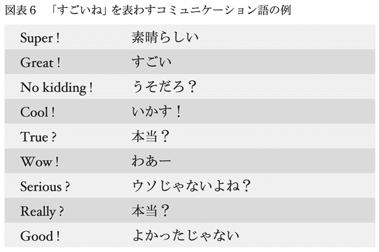
これは１００万円でなくても、いいニュースがあって相手が喜んでいるときならいつでも使えます。主語だとか三単現、過去形といったことを気にする必要はありません。
図表６の例は１語から成っている英文ですが、もう少し長めの英文も覚えることにしましょう。
相手に同意する場合は、図表７の表現が使えます。
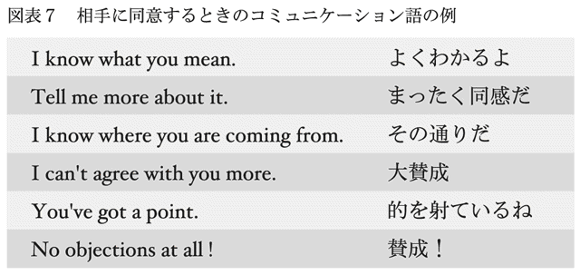
コミュニケーション語のメリットには、
最初に言う
短い
があります。
について、会話では「まず何か話す」ことが重要です。私たち日本人の最大の問題は、完璧な英語が頭の中で出来上がるまで口を開かず、ぎこちない間が生じてしまうことでした。コミュニケーション語がすぐに口から出てくれば、この間が短縮されます。つまり、相手との心地のよい会話が始められるのです。
コミュニケーション語を暗記しても、状況によっては使えない場合がある、と思う人もいるでしょう。たとえば、先ほどの例なら、Cool!（いかす）はビジネスでは使いません。そういうことを場面ごとに一つひとつ確認しなくてはいけない、という考え方です。ぼくは銅メダルの間は細かなことにこだわっては萎縮してしまうと思います。日本語を習い始めた外国人が会議で、「いかす！」と言ってもとがめられないように、私たちも大目に見てもらえばいいのです。
について、コミュニケーション語のいいところは短いということです。「お世話になっています」と言う代わりに「半年前に○○の件でお世話になり、３ヵ月前には××の件でお世話になりました」とは言わないものです。「お世話になっています」は口上で、早く本題に入りたいのが本音だからです。そのような理由でコミュニケーション語は短くできています。短いほど覚えやすいでしょう。
まばたきとまばたきの間にすらすら言う
ここで、コミュニケーション語の定義をもう少し広げておきましょう。会話の中で頻繁に使う言葉で、覚えればそのまま使える短い語句をコミュニケーション語と呼ぶことにします。言葉は数学のように白黒がはっきりしていませんから、どこまでがコミュニケーション語で、どこまでがそれ以外なのか区別がつきにくい場合があります。ここで最も大事なことは「短い」ということです。
たとえば、
Give me a hand.（手伝ってよ。）
といった場合は、相手の手伝いが欲しいという気持ちを語っていますので、単なる感情表現ではないですが、非常に短い表現ですから、コミュニケーション語の仲間として覚える対象にします。
「短い表現を覚える」と言いましたが、それはどのくらいの長さなのでしょうか。ここでは、まばたきをしてから次のまばたきをする間に言い終えることができるものを指します。まばたきの間隔は数秒くらいですから、非常に短いものだけを覚えることになります。
覚えたコミュニケーション語は、まばたきの間にすらすら言えるようにしてください。日本語でも「いーつーもーおーせーわーにーなーりーまーす」とスローテンポで言われたら、相手は調子が狂ってしまうでしょう。ここはじっくり語るところではなくて、打てば響くようなやりとりをする場面です。
Give me a hand.という英語を覚えたら、そのあとに「重い荷物を持ってもらおうか」とか「英語の添削を頼もうかな？」といったことを想像して、ひらめき法を駆使し、その後に続く英語を考えることができます。コミュニケーション語とひらめき法は基礎レベルでの学習の両輪です。
コミュニケーション語の学習に最適な教材は、巻末にまとめて紹介しました。うまく活用すれば、たくさんの表現を覚えることができます。
コミュニケーション語の勉強には細切れの時間が最適
電車の中でちょっと分厚い英語のテキストや、読みかけの小説などを開いている人をよく見かけます。こうした合間の時間は、コミュニケーション語の暗記にこそ最適です。しかも、この効果が予想以上に大きいことに多くの人は気づいていません。
文庫本の小説を読むのに、細切れの時間は効率がよくありません。まず、「これまでの筋はどんなだったかな？」と思い出してから読み始めるのでエンジンがかかるのにちょっと時間がかかります。しかも、小説は最低１段落読まないと読んだ気になりません。やってみればわかるのですが、細切れ時間が短いときは１行しか進まないこともあります。次に本を開くときは、同じ段落の初めからまたスタートすることも珍しくありません。ややこしい英語のテキストでも同じことです。
ぼくが細切れの時間の効果に驚いたのは、コミュニケーション語を覚えるために日常語表現辞典を読んだときでした。ぼくが取り組んだ辞書は約１０００ページ。１０００ページの辞書を解体してみたら、32ページごとの小冊子になりました。辞書はサイズが小さいし、これなら重くありません。この32ページをいつもポケットに入れて行動しました。
ぼくはこれを読むという作業を９ヵ月で終えることができました。９ヵ月で１０００ページということは１ヵ月では１００ページちょっと。１日当たりにすると３～４ページです。ぼくは最後のページまで目を通したらまた１ページ目に戻って最初から見るという方法を５回繰り返して、内容をほぼ覚えました。
１０００ページの辞書を自宅で毎日３～４ページ開こうと決めた場合、それが９ヵ月続くでしょうか。日々、何らかの言い訳が出てきて、やらない日が重なり、途中でくじけることでしょう。ぼくがそうでした。時間がたくさんあればできるわけではないのです。
日常語表現辞典は小説などと違い、前後の脈絡がありません。前の熟語と次の熟語はまったく別ものです。ですから開いた瞬間から内容が頭に入ります。しかも、ひとつの熟語の説明を読んでいる途中で電車が駅に着いた場合は、「中途半端は嫌だからこの表現の説明までは読んじゃおう」という気になります。
細切れの時間はまだまだ出てくる
「細切れの時間で生まれる効果は案外大きい。しかも効率がいい」ということに気づいてから、ぼくはたくさんの細切れ時間を発見しました。まとまればかなりの量になります。その一覧をお見せします。
・コンピュータの電源スイッチを入れてから起動するまでの時間。
・ホームで電車を待っている時間。
・家族と一緒に外出するときに、自分だけが先に準備ができたとき。
・電話をかけて、相手が出るまでの時間。
・エレベーターを待っている間。またエレベーターの中。
・友人との約束の場所に先に到着したとき。
・デートの際に恋人が化粧室に消えるとき。
・独りで食事をするときに、注文した料理が出てくるまでの間。
・街を歩いているときの信号待ち（ただし歩いているときは危険なので、ながら勉強はやめたほうが賢明です）。
ぼくは待たされるのが好きではありませんでしたが、この時間の活用法をマスターしてから、「よし、細切れ時間がやってきた」と思えるようになりました。友人から電話で「ごめん。到着が15分遅れる」と電話があったときなどは内心、「これで15分できるぞ」と嬉しい気持ちが湧き上がってきます。フリーダイヤルに電話をかけると、相手が出てくるまで待たされることがありますが、これにも腹が立たなくなりました。
ただし、リスクもありますので、ご注意ください。ぼくの失敗談ですが、恋人の前でこれをやりすぎると、「この人にはついていけない」と思われるかもしれません......。
いちばん大事なことは、細切れの時間を使うと充実感があることです。友達が来るまでただ時計をながめているとか、病院や床屋の待合室で読みたくもない週刊誌を開いていると、「時間の無駄だ」という気持ちが起きてくるものです。一方、その時間を自分がやるべきことに活用していると、前向きな気持ちになれます。
なお、本章のまとめとして、英会話の攻略法を図表８にまとめておきましたので参照ください。
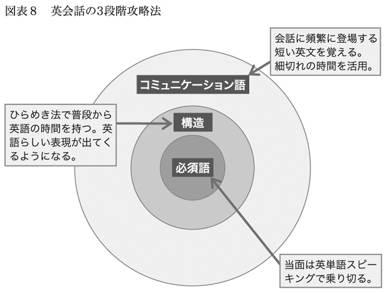
第３章 大事なところだけに集中する
３―１ 疑問文は使わなくていい
要点を絞った勉強をしよう
本書を書くにあたって、ぼくは英語の上級者に「上達のコツは何ですか」と尋ねて回りました。しかし、「特にない」とか「昔のことだから忘れた」という回答が圧倒的でした。
英語が好きで、勉強が苦痛でなかった人たちは、意識してコツなどをつかまなくてもうまくなったのだと思います。
具体的な勉強法を尋ねると、英語好きの先輩たちは、親切心から「あれもいい、これもいい」とたくさんの教材をすすめてくれるかもしれません。そういう人は、本質的に語学が好きなので、多少回り道になる勉強でも飽きがきませんし、苦しくありません。
彼らのアドバイスにまじめに耳を傾けていては、英語嫌いの人はたまったものではありません。なるべく時間をかけず、楽に上達するためには、絞りに絞ったところだけに力を入れるべきです。
本章では、「大事な点に絞る」ことを考えます。反対にいえば、要らない部分を捨てる方法です。
具体的にはまず疑問文を捨てます。難しい割に大事ではないからです。形容詞ではgood、動詞ではgetに習熟することにして他は後回しにします。また、IやYouなどの人を主語にすることにして他の単語は主語にしないようにします。それが英語で考えるようになるコツです。このように、範囲を限った中でひらめき法の練習を行うのが効率的で、上達の近道です。
疑問文が難しいのは語順が変わるから
人間は外見よりも中身が大事だ、と言われます。英語でのコミュニケーションでも同じで、外見（文法に則った英語）よりも中身（話の内容）が大事です。
当面、気にする必要がない外見の代表は疑問文です。疑問文は忘れていて結構です。「疑問文を話さなくていい」と言ったら、「それは乱暴だ」と思われるかもしれません。「疑問文がないと会話にならない」と反論されるでしょう。
しかし、疑問文は「難易度が高い」割に絶対に不可欠とは言えません。
「難易度が高いとは、どうしても思えない。疑問文は中学１年から習っているのに」と思う人もいるでしょう。それはネイティブとの会話の経験が少ないからではないかと推察します。疑問文ではない普通の文でも、すぐに口にするのは容易ではありません。疑問文はそれにも増して時間がかかってしまいます。
ぼくは、米国の大学院に留学した２年の間、疑問文なしで通しました。卒業するときでさえ、疑問文をさらりとしゃべるだけの語学力は身につきませんでした。その経験から「疑問文は当面忘れていい」と言っています。
実例を交えて解説しましょう。まず、日本語です。
平叙文：あれはタクシーです。
疑問文：あれはタクシーですか？
となります。日本語では１文字加えるだけで、普通の文が疑問文に早替わりします。
これが英語では、
平叙文：That is a taxi.
疑問文：Is that a taxi?
となります。
英語ではthatとisとの場所が入れ替わります。倒置です。
日本語では最後にただ「か」を付けるだけなのに、英語となると倒置しなくてはならないから、難易度が高いと述べているわけです。
疑問文をつくっている余裕は会話にはない
ここで疑問が出てくるかもしれません。「どうしてそんなのが難しいんだ。慣れっこになってるよ」というものです。学生時代の英語の授業中ならば、まず普通の文（平叙文）を頭の中でつくり、それを倒置して疑問文をつくっていても問題ないでしょう。そうやって順を追っていけば難しくはありません。ただし、実際の会話ではそういうステップを踏んでいる余裕はありません。最初から疑問文を口にしなくては間に合いません。
あるとき、ぼくはニューヨークでタクシーを拾おうと手を道のほうに出しました（米国では手は上ではなくて、横に出すものです）。すると、クリーム色の車が停まったのです。ニューヨークのタクシーは黄色と決まっていると思っていたので、クリーム色はもしかしたら怪しい白タクかもしれないと思い、周りにいる人に聞きました。その車に乗るべきなのかどうか即座に判断しなくてはなりません。
That is a taxi?
がぼくの口をついて出た英語でした。とっさのときに倒置なんて考えていられません。
「そういう緊急のときは仕方がないが、普段は正しい英語を使うべきだ」と言う人がいるかもしれませんが、会話はいつも「とっさ」に応対しなければならないものです。ぎこちない間を空けないためには、余分なことを考えていてはいけません。このときは、通りがかった人が"Yep!"（Yesのくだけた言い回し、もちろん！）と言ってぼくににこっとしてくれました。
ちなみに、中国語の疑問文は、日本語と同じように「か」に当たる語を文尾に付けるだけ。日本語と同じやり方です。中国語の疑問文は習ったその日からすらすらと口にすることができました。この際に「倒置するのはきついんだ」と英語の難しさに改めて気づきました。
Rightを使えば平叙文はそのまま疑問文になる
Isで始まる疑問文は普通の文から語順が変わりましたが、Doを文頭に付ける疑問文では倒置は起こりません。それでも難易度が下がるわけではありません。
Doで始まる疑問文を見ていきましょう。
He has a good memory.（記憶力がいいんだ。）
これを疑問文にすると、
Does he have a good memory?
となります。
面倒な点はhasがhaveに変わっているところです。しかも主語がYouとかIの場合はDoであり、He/ Sheの場合はDoesになるという厄介なものです。このDoは日本語では「か」の働きをすることになるわけですが、私たちは文の最後に「か」をつけるのに慣れていますから、文頭にDoを付けるのに慣れるまでは苦痛です。こんなところに気を取られていたら、肝心の中身が話せません。
この場合も、
He has a good memory?
とすればいいわけです。文尾のイントネーションを高く上げればそれで十分です。
「文末のイントネーションを上げるだけなんて嫌だ」と思う人には文末にRight?を付けるのをおすすめします。
He has a good memory, right?
といった具合です。これは完璧に正しい英語です。ただし、「そうだよね。ぼくの言ってることが正しいよね」という念押しの意味合いが強くなります。
他にも要らない表現がある 仮定法と感嘆文
疑問文以外でも優先順位の低い言い回しは忘れてもらってけっこうです。
仮定法とは、あり得ないことを表わす文です。「自分が鳥だったら」とか「もし20年前に戻ることができたなら」というのが仮定法です。これは普通のIf文を代用してかまいません。
この原稿を書きながら、「自分は金メダルになるまでにIfが出てくる仮定法を使って話したことがあったっけ？」と振り返ってみましたが、どうも思い当たりません。おそらくそういう難しい表現は使ったことがないと思います。
ぼくがたまに使う仮定法は、「ぼくだったら、○○○○○するなあ」とか、「君がぼくの立場だったらどうする？」といった場合だけです。この英語は銅メダルでもかなり上級レベルになった時点で覚えれば十分です。
感嘆文（なんと～なのだろう）もいりません。そんな文体があったなあと思い出すでしょう。これはまったく話す必要はありません。
What a beautiful flower!
は、
The flower is beautiful!
で代用できるからです。ビューティフルのビューを長めに言えば、感嘆している雰囲気が出ます。
疑問文も仮定法も感嘆文も捨てていい、と言っているのは、さぼることをすすめているのではありません。
留学先での友人の中には、手を動かしながら英語を話している人が何人もいました。指揮者は音楽の流れとともに手を動かしますが、その人たちは、自分が話す単語ごとに、手を動かしてその意味を確認しながら話していました。会話のリズムを途切れさせないために、体を使って必死で頭の中から言葉を引っ張り出していたのです。文末でイントネーションが上がると、手がさっと上がったりもしていました。
英語初心者ではなく、留学２年目というレベルの人たちでさえ、こうです。銅メダル英語をめざしている私たちはもっと話すのに慣れていないし、時間がかかりがちなのですから、疑問文のために頭を使うのはやめましょう。私たちの現状の英語脳は、必須語とそれを結びつける語句を組み合わせるだけで精一杯です。
３―２ 日本人より本音を言わない英米人
――ネイティブと上手につき合うための「good」
英米人は建前の世界
英米人は褒め言葉の中に微妙に本音をにじませて伝えます。この方法を体得することは彼らと対等にやり合うのに不可欠です。しかし、最初はなかなかできません。第１ステップとして、英米人流の褒め方を学びましょう。これはgoodさえ使えれば、誰でもすぐにできるようになります。腹の中の本音を伝えないのなら、他の形容詞を使わなくても十分です。
世間では「日本人は本音を言わない、英米人は単刀直入に話す」と言われていますが、ぼくの経験では真実はこの逆です。日本人は本音をよく言います。
たとえば、顔馴染みの寿司屋に入って、「久しぶり。元気でした？」と聞くと、店主は「元気。元気。元気でしたよ」と必ず言います。寿司屋は威勢がよくないと務まりません。本音ではなかったとしても、営業文句を返すのが普通です。
ところが、カウンターに座って少し話すと、店主は「実は、先月入院するはめになってさ」と本音を話し始めます。店には常連とはいえない他の客もいるので、この本音は公開情報になってしまうわけです。
これに対して、英米人はかなり親しい間でも、自分の胸の内を打ち明けることがないようです。
ぼくがかつて勤めていた会社のアメリカ人同僚から、「転職したいのだけど、ヘッドハンターを紹介してくれないか」と尋ねられたことがありました。米国で働いていたときのことです。ぼくは自分の知っているヘッドハンターを紹介する前に、
「このヘッドハンターは日本人や日本企業向けが強いんだ。アメリカ人の君に役に立つかなあ？」
と言いました。すると、同僚は、「ノリは信頼できるからこういう話をするけど、誰にでもできる話じゃないから」と言ったのです。
つまり、他のアメリカ人同僚には話しにくいということでした。転職話を打ち明けてきたアメリカ人同僚とぼくはそれほど親しい間柄ではありませんでした。彼は日本人同士が親密につき合っているようすを感じとっていて、日本人のぼくになら秘密を打ち明け、相談できるのではと考えたのだと思います。
海外に住む日本人は「お互いに助け合おう」という気持ちが底流にあって、誰とでもすぐに打ち解けて、本音を話し合う傾向があります。また、海外旅行をする日本人は詐欺のカモになりやすいと言われるのも、相手を信頼しやすいからです。
腹の探り合いをするのは日本人よりも欧米人のほうです。「日本人は何を考えているかわからない」という外国人からの指摘は、日本人が本心を明かさないからというより、英語がうまく伝わらないということに起因しているのではないかと思います。
褒めまくりが横行する欧米の職場
会社で働いている人ならば、上司が部下を呼んで仕事の評価をする機会が年に１～２回あるでしょう。そんなとき英米人の上司はいいことしか言いません。「がんばってるね。私だけでなく周りの皆が評価しているよ」といった具合です。
ただ、途中でちょっとだけ本音を出します。営業成績が低迷している人には、「今年の営業成績だけど、もう少しいけたはずだよね」と軽く言います。そして、その後にすぐ、「これがあなたの本来の力でないことは知っている。景気が悪かったのが最大の要因だよ」とフォローを忘れません。
このように言われたら、アメリカ人の部下は「上司からまずまずの評価を受けた」とは受け止めません。本音を見せない風土に慣れている人たちは「相当厳しいことを言われた」と思うはずです。
同じように、職場に問題児がいた場合、日本ならば「あいつには困っちゃうよ」とあからさまに言うことがあるでしょう。欧米ではあり得ません。その人への不満は微妙な言い回しで伝えるのです。顧客とのトラブルが絶えない社員については、そのことに触れないで、「彼に資料づくりを任せたら天下一品なんだ。顧客係じゃもったいないよ」と言うといった具合です。つまり、顧客係としてはだめだ、という意味を含ませているのです。
遅刻常習犯の部下には、「朝寝坊は君の欠点だね」と言う代わりに、「早起きは君の最高の強みではないよね」と言います。
言葉の観点からこれらの話を考えると、出てくる単語はすべて褒め言葉です。「素晴らしい」「うまい」「秀逸だ」「努力家」「まずまずの出来」「健闘している」といった具合です。この中から微妙な差を感じとって相手の本音を測るのが英米文化です。
この差はかなり敏感なセンサーを持ち合わせていないとわからないでしょう。読者のみなさんにも最終的にはこのテクニックを身につけていただきたいと思います。ただし、そのためには基礎からスタートしましょう。まずは、世界標準英語の世界を覗いてみましょう。
世界標準英語はgoodとbadだけ
世界標準の英語は微妙さのない白と黒の世界。中間的なくすんだ色合いのない世界です。
テレビドラマの世界に必ず善玉と悪玉がいるように、何かを形容する場合、大きく分けると、世界はgoodとbadという言葉で２つに分けられます。綺麗だ、速い、安い、誠実だ、おいしい、などはどれもgoodの仲間であり、その反対がbadの仲間になります。
世界標準の英語は、ほとんどこのgoodとbadで済ませています。
ぼくはアラビアに住んでいたとき、よくアラビア料理を食べに出かけました。あるとき、自分がいつも食べている料理の味が少し違いました。そこで、給仕をしている馴染みのレバノン人に、
「いつもと味が違いますね」
と英語で言いました。すると、
「違うとはどう違うんだ？」
と聞くのです。今日はシェフが休暇中で、代わりの人がつくっているとのことです。
彼は加えて、
"Good or bad?"
と言いました。つまり、いつもよりうまいのか、いつもよりまずいのかをどうしても聞きたいのです。
読者のみなさんなら、ぼくの言いたいことはもうわかっているでしょう。いつもより良いなら、「今日はいつもより良いよ」と言い切っているはずです。つまり、ぼくはいつもより劣ると言いたかったわけです。
「違う」と言っただけでは、そのニュアンスは伝わらなかったようです。しかし、いくらなんでもレストランに来て、「まずい（bad）」と言うのはためらわれました。あまりに失礼な発言だからです。それでも相手は答えを待っているので、「仕方がないや。正直に言っちゃえ」と思って、
"Bad."
と言いました。すると、彼は「わかった」と安心したように、ぼくのテーブルを離れたのです。「まずいとは何だ」といった気色ばんだ様子は微塵もありませんでした。goodとbadしかない世界標準英語では、ぼくの発言は「まずい！」には聞こえなかったのかもしれません。
not very goodの本当の意味は「かなり悪い」
世界標準の英語は確かに、goodとbadの二元論になっています。しかし、みなさんにはbadはすすめません。あまりにあからさまになってしまうことが多いからです。もう少し上品な英語を話しましょう。みなさんにおすすめする英語表現は、
very good
good
not very good
の３種類です。面と向かってbadを使う機会はあまりないと言っていいでしょう。
ここでnot very goodについて解説しておきます。これは学校では「very goodではない」ということであり、「すごくいいというほどではない」「まずまず」くらいに教わります。原義はその通りですが、実際に使われる場合は「かなり悪い」です。
"How are you?"（元気にやってる？）
に対してほとんどの場合は、
Very good.
Good.
Fine.
などと答えます。松葉づえをついて、見るからにつらそうに歩いてきた友人でも、"Fine（またはGood）."と言うでしょう。そう答えるのは決まり文句、あるいは相手に気を遣わせないための礼儀のようなものです。ここにも、英米文化の建前が表われています。
not very goodとはなかなか言いません。もし、誰かがnot very goodと言った場合は、その後に「会社はクビになるし、彼女には振られるし、財布は落とすしさ」といった理由がつきます。この３つのうち、１つくらいしか当てはまらないなら、not very goodとは言わないでしょう。
ちなみに、この発言には英米人の自虐的なユーモアが含まれています。こんなにひどい状況なんだけど、not very good（すごくいいとは言えない）と言っている自分がおかしいのです。これを聞いている相手の人も発言者のユーモアを感じますが、同時に「相当ひどい状態だ」とも感じるわけです。
goodだけで幅広い表現ができる
こう見てくると、私たちが会話で使う形容詞は、
very good
good
くらいに絞られます。not very goodは「かなり悪い」ですから、その代わりに「まずまず」（英語ではＯＫ）くらいは使うかもしれませんが、goodをうまく使うだけで、それを含めた幅広い意味を表わすことができます。
例を挙げます。図表９の例文でgoodに力を入れて言えば、本気で「良い」という気持ちを言っていることになり、淡々と言えばＯＫと同じ「まずまず」の意味になります。goodだけでも相当なことが言えるのです。
goodを使いこなせば英米人のように褒め上手になれる
「very good」や「good」などを使い分けながら、英米人の微妙な本音の伝え方に慣れていってください。だんだんと感じとれるようになります。外国人の中に混じって働こうと思っている人には必須のテクニックです。
ここまでの話からすると、英米人は本音を隠すので、腹からわかり合うのは難しいと思うかもしれません。けれど、正反対の長所があることも事実です。ある人の性格を「騒がしい」と評価するとマイナスのイメージですが、「ほがらか」と評価すればプラスのイメージになるようなものです。
英米人は褒め上手です。ちょっとしたことを言っただけでも、"That's a good idea."（それは名案だ）と言ってくれます。
また、英米では「この案件、営業部にも話しておいた？ そうでないとうまくいかないよ」と言う代わりに、「営業部に話しておくと喜ぶと思うよ。協力してもらえたら、成功の確率はうんと高くなるよ」と言うことが多いです。プラス思考の話し方をすることで、角が立たないばかりでなくその人の力を引き出すことができるのです。
そのためには、まずgoodがうまく使えるようになってください。同じgoodという表現を使っても、場面に応じて少しずつニュアンスを変えることができます。ここをスタートにすれば、自分の微妙な本音をだんだんと伝えられるようになっていきます。
３―３ 魔法のように会話を楽にする「get」
２つの意味を覚えるだけでgetはゲットできる
アジア圏での庶民の味方、タイガーバームが筋肉痛や切り傷、腹痛、風邪などに広く効く万能薬であるように、英語の「get」はいろいろな局面で使える万能語です。さまざまな動詞が思い出せない場合、get一語で代用できることが多いのです。
形容詞はgoodさえ知っていれば、当面は十分なように、getは動詞の中核を成す単語です。ある調査によれば、英文において最も頻出度が高い動詞はbe動詞。第２位がdo、第３位がget、第４がhaveとなっています。そのあとにgo、like、thinkと続きます。
第２位のdoは否定文や疑問文で登場しますし、第４位のhaveは現在完了や仮定法に出てきます。doとhaveが文法上たくさん出てくるのは当たり前です。getにはこうした用法がないにもかかわらず、押しも押されもしない堂々３位なのです。
「頻度が高いということはいろいろな局面で使うということだ。だから意味がたくさんあって難しいのではないか」と考える人がいるでしょう。ぼくは、真実はこの逆だと思います。頻度が高いほど、その単語の持つ意味は薄くなるのです。
ぼくは米（ご飯）は毎食でも口にすることができますが、好物のうなぎはいくら好きでも毎日は食べることができません。米は味がほとんどないから毎日食べても平気なのです。同じように、ある単語が何回も出てくるということは、その言葉に味ならぬ「意味」が薄いからです。
その典型がbe動詞です。beにはさしたる意味はありません。
I am a cat.（吾輩は猫である。）
このamは、
吾輩 ＝ 猫
と、２語を結びつけるだけの、数学の等号（＝）のようなものです。
getも、これと似た意味の薄い単語です。おおまかに言えば、getはあるときはhave動詞とほぼ同じ意味になり、あるときはbe動詞と似た意味になります。haveとbeは東西横綱とも言える代表的な動詞ですから、それら２つと同様の働きをするとなれば、getは横綱を超えた存在だと言えます。
「getは万能だ」と言うと、「それは無茶だ。動詞はいっぱいある。getひとつで済むわけがない」と反論が出るでしょう。もちろんその通りですが、getを使うと、多くの場合、後の英語がスムーズに出てくるようになるところがミソです。
getの本質は「くっつく」
「getを覚えるだけでそのあとの英語がスムーズに出てくるってどういうこと？」と思うでしょう。それを理解するために、getの第１の意味をつかんでください。これは、haveと同じ意味になる場合です。getをhaveに置き換えてもほとんど意味は変わらないということです。２つの意味のうち、こちらがより本質的で重要です。
getの基本的な第１の意味は「くっつく」です。
図表10にそのイメージを記しました。
主語 ＋ get ＋ 目的語（名詞）
という文があると、getがあることによって目的語が主語にくっつく感じになります。
実例を図表11で見てみましょう。
「本を買う（もらう）」と「犬を飼う」では日本語ではまったく違う動詞を使いますが、主語に対して目的語（この場合は本や犬）がくっつくイメージは同じです。離婚は相手が離れていくことですが、離婚という事実が自分にくっつく（バツイチの勲章がくっつく）のです。病気も自分にくっつきます。
getには魔法のような力があると思いませんか。他の動詞を使わないで済むのです。それを理解するために、getを使わないで、図表11のいくつかの表現を言ってみましょう。
buy a book（本を買う）
suffer from cancer（癌を患う）
catch a taxi（タクシーを捕まえる）
となります。このように、通常は特定の動詞と特定の名詞が結びついた表現になります。鍵と鍵穴を合わせるように、動詞と名詞を一つひとつ合わせていたら面倒です。これに対して、getはマスターキーのようなものです。getひとつでかなり間に合います。
I've got～の形で使えるようにする
getは現在完了形で使われることが多いので、それも併せて覚えておきましょう。getの本質にかかわることなので、現在完了についてここで説明します。
学校では、現在完了は「過去より新しいが、現在よりは少し古い」と習いました。ぼくはこの説明がまったくわかりませんでした。現在から１秒前でも、もうそれが過去になっているのなら、過去形にするべきだと思えたからです。
英語がしゃべれるようになってわかったのは、現在完了の本質が継続性にあることでした。
「ぼくは彼に賛成した／する」
という文を英語にする場合、
「あのときは賛成だった。でも、今はもう反対だ。気が変わった」と言うならば、今は賛成していないので継続性がないため過去形になります。
「今もなお賛成だ」と言うなら、今も気持ちは継続していますから、現在完了になります。
あのときも賛成だったけど、そのこととは別に、今の自分の賛成の気持ちを強く表わしたいなら、現在形になります。
会話中にこんなことを考えて、過去形、現在完了形、現在形を選ぶのは容易ではありません。だとしたら、現在完了は忘れたほうがいいとぼくは思います。疑問文については、優先順位が低いので、疑問文は使わなくていいと先に述べました。現在完了形も同様です。現在形と過去形だけで済ませましょう。
ただし、例外がひとつだけあるのです。それがhave gotです。
ぼくがこれまで聞いてきた英語は、圧倒的にhave gotの形が多かったです。現在形のgetにはあまりお目にかかりません。getを使う場面はほとんど継続性があるからです。
極端に言えば、第１の意味で使うgetはいつもhaveを伴うと考えていただいてかまいません。つまり、図表11のgetの例はすべてhave gotの形に書き換えられると考えられます。
I've got a book.（本は買ったよ［手元にあるよ］。）
といった調子です。
getの第２の意味は「～するようになる」
getが持つ２つ目の意味は、さらっと見ておきます。意味は「～するようになる」というものです。be動詞と似た意味になります。
図表12で実例を見てみましょう。
get＋形容詞
となっています。形容詞と書きましたが、lostなど、状態を表わす過去分詞も入ります。
このgetはisと交換してもあまり意味が変わりません。たとえば、
He got married.（結婚した）
He is married.（結婚している）
isが「～である」という意味であるのに対して、getは「～するようになる」ですから、当然、厳密には意味が違います。しかし、だいたい同じような意味に取れます。図表12に挙げた表現はすべて、getの代わりにisを使うことができます。
また、getには、その後にいろいろな前置詞がつく決まり文句があります。
get up（起きる）
get on（［電車に］乗る）
といった具合です。
これらも、
I get up at 7.（７時に起床する）
I am up at 7.（７時には起きている）
I get on a train.（電車に乗る）
I am on a train.（電車の中にいる）
という具合にbe動詞に入れ替えることが可能です。
英字新聞や英会話テキストを読んだり、英語ニュースを聞いたりすると、すぐにgetに遭遇します。そのとき、getに注目してみてください。そのgetが１番目の意味「目的語が主語にくっつく」なのか、２番目の意味「～するようになる」なのか考えてみてください。実例を目にすると理解度が高まります。早く自分のものにすることができます。
３―４ I（私）で話し始めると、英語で考えられるようになる
主語は７～８割の確率で人になる
「英語で考えろ」といっても普通は簡単ではありません。ここではそれを一気に達成してしまう方法を紹介します。英語で考える癖をつける簡単なノウハウです。
ぼくの経験では、これからお話しする方法を使えばすらすらと英文が口から出るようになり、その英語がとても自然なものになります。その方法とはI（私）で文を始めることです。
もちろん、相手のことを話すときはYou（あなた）が主語だし、第三者についての話題ならHe（彼）またはShe（彼女）が主語になります。We（私たち）とかThey（彼ら）が主語になることもあります。ぼくが言いたいのは、ネイティブは「人を主語にして話し始める」ことが多いということです。ただ、それらの総称となる「人主語」という言い方はとっつきにくいので、本稿ではI（私）を代表としてお話ししています。
別の言い方をすれば、人以外はあまり主語にしないということです。気持ち、運、物体、景気、自然などは、あまり主語にならないのです。ちなみに、得体の知れないことを指すItという主語もよく使われますが、人主語ではありません。
ぼくの経験では、英語のセンテンスは７～８割の確率で、人主語で構成されています。『50イングリッシュ この「50の基本文」を死ぬ気で暗記せよ！』（サム・パク著、青柳優子訳、ダイヤモンド社）は、覚えるべき50の例文から成っています。この中でも、人主語でない例文は３割弱しかありません。
日本語英語は語順が違うから難しい
I（私）で文を始めるだけで自然な英文がスラスラと口から出るようになるなんて、どうしてだろうと思うでしょう。日本語が「私」「あなた」といった主語を文の中に含めないのに対して、英語では必ず含める、というのが理由ではありません。語順そのものが違うからです。
図表13にあるように、日本語は頭でっかち、英語は尻でっかちな構造です。これだけ語順が違うから英語を口にするのが大変なのです。スペインからの留学生だった友人はぼくが英語で苦労しているのを見て、「大変そうだね。ぼくは単語をスペイン語から英語に一つひとつ置き換えるだけだから簡単だよ」と言っていました。
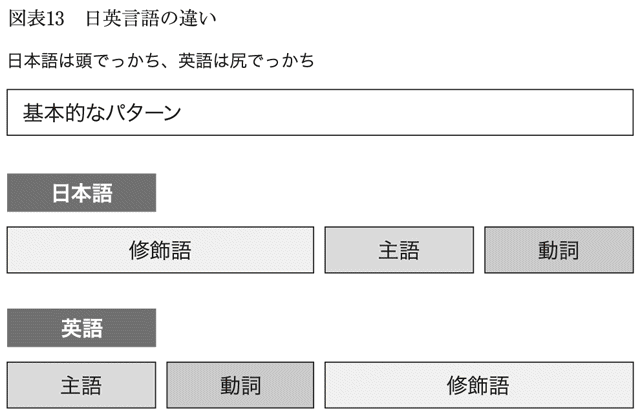
「日英の語順ってそんなに違うの？ そんな気もするけど、まだ納得できないなあ」と思う人のために、日本語がいかに頭でっかちか、よく耳にする文言で確かめてみることにしましょう。
ご家庭やオフィスでご不要になりましたテレビ、エアコン、冷蔵庫、洗濯機、パソコン、電子レンジなどはございませんか？
電車とホームの間が広くあいているところに十分ご注意ください。
保存上の注意として、直射日光、高温、多湿の場所をお避けください。
例文中で傍線を付けた部分は、英語にした場合に文末にくるところです。つまり、英語では傍線を付けていない部分がセンテンスの前のほうにきます。たとえば、では英語は"Do you have......?"から始まります。この後にテレビやエアコンなどが続きます。
ぼくは初めて習った英語の文"This is a pen."のそれぞれの単語の意味を聞いたときの衝撃をいまだに忘れられません。この英文は「これは・です・ひとつの・ペン」の順番でした。日本語と違う語順が許されるんだと初めて知り驚きました。
語順が違うだけで、どうして日本語を英語にするのが大変なのかを、例を挙げて説明します。頭でっかちな日本語では翻訳が面倒になりますから、ごく簡単な「鍵を探しているんだ」を英語にしてみましょう。出かける前にはよくあることです。
頭の中は「鍵」のことでいっぱいですから、日本語の語順に引っ張られてしまい、
The Key, I am looking for.
とならないでしょうか。英単語スピーキングならばこれで十分なのですが、I（私）を文頭に持ってきて、I am looking for the key.とすれば完璧になります。
図表14に示したように、会話をする上で私たちがまず思い浮かべるべきなのは必須語です。これが話題の中心になります。次に主語（人主語）は何になるかを思い浮かべてください。そして、その人主語から英語を話し始めようとしてみてください。ここまでくれば、これから口にする文の骨格がほぼできたことになります。
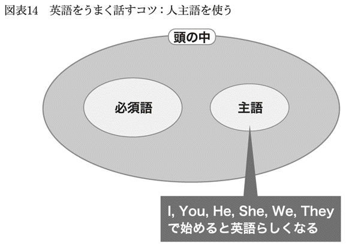
一見してI（私）とは関係なさそうでもIを主語にできる
「（私は）会社に行く」とか「（私は）週末は本を読む」といったことなら、主語は明らかですから、迷わずIで話し始めることができます。ここまでは何の問題もありません。厄介なのは一見してI（私）が主語ではなさそうな場合です。例を挙げてみましょう。
「今日はなんだか頭が痛いなあ」
という思いが頭に浮かんだとしましょう。
日本語的な発想では、主語は「頭」です。日本語からの翻訳ではこうなるでしょう。
Today, somehow, my head hurts.
これでもちろん意味は通じます。
これに対して、日本語を介さないで直接英語に進む方法を取ってみましょう。「頭が痛い」という日本語を忘れて、自分がそうなったときの様子を思い浮かべてください。
Headache
A pain in my head
などが思い浮かんでくるはずです。これが必須語です。この必須語さえ思い浮かべば意思疎通は可能になります。しかし、ここでは英語らしく考える練習が主題ですから、この先に進みましょう。必須語を入れたセンテンスにしてみます。
そこで、主語の出番です。ネイティブらしい発想の英語センテンスはI（私）で始まります。「『頭が痛い』んだから、Iではなくて、my headが主語じゃないの？」と思った人はまだ日本語に引っ張られているのです。
Iが文頭に入り、後半には必須語のheadacheが入ることになります。Iとheadacheをつなぐ動詞としては先程のgetが使えます。すると、自分の思いは、
I have got a slight headache today.
となって口から出てくるでしょう。
日本語では「頭が痛い」と言えば十分ですが、英語では「私は頭が痛い」へと変換されているのです。
読者のみなさんの中には、「Iが文頭に、後半にはheadacheが入るのはわかった。でも、それ以上英文になっては出てこない」という人もいるでしょう。最初のうち大事なことは、Iとheadacheとが口から出てくることです。これでジグソーパズルの最も大事なピースが見つかったことになります。あとのピース（単語）は慣れとともに的確なものが見つかるようになります。
物主語でも同じ原理を使うのがコツ
今度の実例は一見すると、物主語にするのが自然に思えるかもしれません。それでも、英語らしい表現にしたいなら、人主語に変換してしまうのが賢いやり方です。
「水曜日は残業のない日だ」
ここで必須語は、
水曜日／残業なし
です。
だから、英単語スピーキングのレベルでは、
Wednesday
No-overtime work
となります。
日本語直訳は、
Wednesday is no-overtime work.
です。これで通じます。
今度は日本語にとらわれないで、「今日は残業しなくていいんだ。５時に会社を出るぞ」というウキウキした気持ちを思い浮かべてみてください。日本語の「水曜日は残業のない日だ」は、英語では「私は水曜日は残業をしない」に変換されるわけです。
その気持ちをIから始めたセンテンスにします。
I do not have to work overtime on Wednesdays.
I can leave office at 5 p.m. on Wednesdays.
I can go home early on Wednesdays.
などが出てくるでしょう。
実は、人主語が使えない場合もたくさんあります。その場合でもこれまでの原理を応用すれば、英語らしい表現にできます。
たとえば、
「ボートの長さは２メートルある」
「富士山の形は綺麗だ」
の場合は日本語では「長さ」「形」が主語ですが、英語では「ボート」「富士山」を主語にします。これらがI（私）の代わりになったと考えるのです。
日本語からの翻訳英語はこうなります。
"The boat's length"is 2 meters.
"Mt. Fuji's shape"is beautiful.
一方、英語的な発想では、
"The boat"is 2 meters long.
"Mt. Fuji"has a beautiful shape.
となります。主語に当たる箇所を " "で囲みました。英語らしい英語ではその部分が短くなっているのがわかるでしょう。
Youが使えるようになると実力が格段アップ
Youも、Iと同じように主語にすることで英語らしい言い方ができるようになります。ただし、ここで紹介するYouは「あなた」ではなくて、「みんな」や「人々」など一般に人を指す場合に使います。たとえば日本語で「みんなそうするよ」「常識だよ」などと言いたいとき、Youを主語にします。
日本人の家に招待された外国人に向かってぼくがよく言うセリフです。
「日本では菊の花は持っていかないのが常識だよ」
実はぼく自身が菊をもらったことがあります。まさかもらった当人が文句をつけるわけにもいかず、ぼくはそのことをアメリカ人の友人には言えませんでした。「菊は長持ちするからいいよ」と彼は言っていました。おそらく友人はその後も日本人の家に菊を持っていったことでしょう。誰かが言ってあげなくてはいけないのです。そこで、ぼくは今では機会があれば、外国人の友人には先に書いたように諭しています。
ここでの必須語は、
菊／持っていかない
ですから、
Chrysanthemum, No.
で通じます（菊は難しい単語ですから、その場に菊があれば、This flowerで十分です）。
これだけでは聞き返されるかもしれませんが、最終的には相手はこちらの意図を汲み取ってくれます。
ここで翻訳英語を見てみましょう。
日本語の文の主語は「持っていかないこと」ですから、このような長い主語はまずItで置き換えて文をつくります。
It is common sense not to take chrysanthemum in Japan.
となります。
これでも伝わりますが、Itを用いずにYouで始めれば、以下のように、
You should not take chrysanthemum with you in Japan.
となります。
Youで始まる英語文には「常識」に当たる言葉がありませんが、その意味合いは一般人を指すYouの中に含まれています。
なお、Youが一般人を指すのか、相手だけを指すのかわからなくなることがあるのではないか、と疑問に思う人がいるでしょう。先のような英語を言ったときに、「それって、特にぼくが菊を持っていかないほうがいいと言ったの？ それとも一般的な話？」と聞き直されることはないかという疑問です。ぼくの経験では、相手にYouの意図が明確に伝わらなかったことは一度しかありません。だから、ほとんど気にしなくていいでしょう。
Theyで言えたらベテランになった証拠
もうひとつ覚えておきましょう。主語Theyは政府、会社、団体、一般的な人を指します。Youとの違いはTheyには自分が含まれていないことです。
「米国では車は右側通行だ」は、
In the US cars run on the right.
が翻訳調の英語です。ここで、主語をcarsにしないで、Theyを主語にします。
They drive on the right in the US.
とすると綺麗な英語になります。ここまできたらベテランです。
この「人主語」を用いる作戦は英語の上級者でも気づいていない人が多いようです。英語で考える癖をつけるには比較的簡単な方法なので、できるだけ早くから取り組んだほうがいいでしょう。
世界標準英語から銅メダル英語へと上達する過程は、スピーキングが単語だけから文へと形をなしていく過程です。単語をたくさん思い浮かべることができれば、文になるかというとそうではありません。それらをどうつないだらよいかを考えているうちに、ぎこちない間が生じてくるという問題があります。
こうしたときに、まず核となる単語を思い浮かべれば、英語らしい英語を口にすることができます。つまり、必須語とI（私）は世界標準英語から銅メダル英語への橋渡し役になるのです。
第４章 発音とリスニングは勉強するな
４―１ 発音は場数を踏め
発音練習はおもしろくないから身につかない
銅メダル英語に到達するための最も基礎的なステップはひらめいたことをその場で口にする練習でした。この過程では疑問文や仮定法は使わないで、単語もgoodやgetなどのシンプルなものを選ぶのが上達のコツでした。こうして、英語がある程度口から出てくるようになれば、実際にネイティブを相手に話すことができるようになります。
その際に注意するのがここで取り上げる発音、アクセント、リスニングです。
最初が発音です。ここまで「話す」ことを中心に話を進めてきましたが、発音についてはあえて触れてきませんでした。
発音はとても重要です。なのに、ぼくは「当面は何も対策を講じなくていい」と言っています。「大事なのに、対策が要らないなんて矛盾しているじゃないか」と思われるでしょう。
ここでもう一度、優先順位をはっきりさせておきましょう。まずは、英語が口から出てくることが大事だ、ということです。綺麗な発音ができる人でも口から言葉が出てこなければ、どうにもなりません。英単語を並べただけのスピーキングでもいいですから、英語がすらすら出てくる練習をまずしてください。
「だとしたら、これから先、こちらの言っていることがネイティブにわかってもらえない経験を何度もすることになるのではないか」と思われるでしょう。その通りです。ぼくもそうした体験をたくさんしてきました。しかし、そうした体験を通じて、「発音は後回しでもいい」と確信できるようになったのです。
最悪だったのはボストンで働き始めたときです。ぼくの発音は、社長秘書の女性にまったく通じませんでした。社長は海外ビジネス経験が長く、日本人の発音にも慣れていたのでしょう。ぼくの英語を聞きとってくれました。しかし、その秘書にはまったくと言っていいほど通じなかったのです。玉砕に近い状態でした。
ボストンは、ニューヨークの北に位置する都市。ビッグアップルと呼ばれるニューヨークと対照的に、人口全米第21位の、こぢんまりとした都市です。
秘書は隣町であるニューヨークに行ったことがないと言っていました。日本で言えば、静岡の人が東京に出たことがない、というようなものです。このため、秘書は外国人の発音に慣れていなかったのでしょう。彼女は申し訳なさそうでしたし、ぼくも苦しかったです。
こうした話を紹介すると、「発音はやっぱり勉強したほうがいい」と思うかもしれません。しかし、もしぼくが発音に力を入れて、代わりに言葉を口からすぐに発する練習を怠っていたら、もっと気まずい関係になっていたでしょう。つまり、発音のまずさは〝まだまし〟な悩みだということです。
もしぼくが発音を練習していたとして、この秘書にどの程度英語が通じたでしょうか？ うまくなったとしても、ネイティブ並みになることはあり得ません。米国に生まれ育った日系２世の人たちでさえ、日本語なまりが抜けません。
ネイティブと話して通じない経験を持つたびに、「発音に気をつけよう」と思うことになれば、それを実践した結果、実際に綺麗な発音が出てくるようになります。それでいいのではないでしょうか。ぼくは下手な発音を「恥ずかしい」と思うより、何とか通じさせることに必死でした。
大人になって、英語を習い始めてすでに相当な年月が経っているならば、発音の特訓なんて「今さら嫌だよ」と思うでしょう。銅メダル時代から発音に力を入れているとそれだけで疲れてしまいます。ならやめましょう。英語をものにした友人たちに聞いても、発音の訓練をわざわざ行った人はいませんでした。ここでは、実地で発音するときのごく基本的なコツのみを述べておきます。
もどかしい経験がやる気にさせる
英語は母音と子音から成っています。学校の先生によって、その重要度に対する評価は異なります。母音のほうが大切だとか、子音のほうが大切だとかいろいろ言っているようです。ぼくの経験では、両方ちゃんとできないと通じません。ぼくの失敗談を記しましょう。
母音が通じなかった
叔母が米国留学中に訪ねてきた際、香水をぜひ買いたいというのでデパートに連れて行きました。関税が高かった当時、香水は海外旅行みやげとして人気でした。
１階の案内係に、「香水売り場はどこですか？」と聞きました。ぼくの英語は単語だけ。"Perfume?"（パーヒューム？）です。
ところが、これが通じません。そんなものはない、と言われてしまいました。
結局、自力で売り場を見つけましたが、悔しかったので、帰りがけに案内係に「これが香水っていうやつだ」と言い、叔母が買った品物を目の前に置きました。すると、「なあんだ」という顔をして、「プーヒューム」と言いました。
ぼくの発音はパーヒューム、正しい発音はプーヒュームです。「パー」と口を大きく開けたのがいけませんでした。
子音が通じなかった
ＭＢＡでも発音で苦労した経験があります。「これから先、石油、株、金などのうちどの市場が有望だろうか」と友人から聞かれて、ぼくは「銀に注目している」と答えました。
銀はsilver（シルバー）です。しかし、これが通じません。わかってもらおうとして、「金じゃなくて、シルバーなんだよ」と言ってみたり、「オリンピックで金メダルの次は銀メダルじゃないか」と言ってみたりしましたが、単語を並べるのが精一杯のぼくには荷が重すぎました。最後まで「わからない」と言われ、情けない気持ちになりました。
英語にはSに関する発音はseat（スィート、席）とsheet（シート、紙１枚）の２つがあり、日本語のシは後者に近い発音です。silverは、「スィルバー」のように発音するのが正しいのです。ぼくの発音ではshilverに聞こえていたのでしょう。そんな単語はないのです。
バニラ（vanilla）ジュースを注文したのに、バナナ（banana）ジュースが出てきたこともあります。VとBの発音が区別できていないからでした。
これらのもどかしい経験を通じてこそ、ぼくは「香水」も「銀」も、通じる発音ができるようになりました。特に、SとShの違いは日本人には区別が難しいので、実践で鍛えられなかったならばできなかったと思います。
「発音は大事だ」と心に念じるだけでいい
筋トレをやってわかったのですが、腕や腿に筋肉がついてくるまでには相当な時間がかかります。発音も喉の筋トレのようなもので、綺麗に音が出てくるまでには時間がかかるのです。だから、わざわざ発音練習をするのではなく、実践の中で覚えていくのがいい方法です。
ぼくはRの発音を米国の文房具屋の店先で学びました。小学生くらいのアメリカ人の子供がお店の人に、「売れ」と言っていたのです。「お店だから、当然売るさ」とぼくは思いました。一瞬のことでしたから、アメリカ人が日本語を話すわけがないなどと考える余裕はありませんでした。次の瞬間に、お店の人が赤いノートを出してきたのを見て、「そうか。赤いのが欲しいと言ってたんだ」とわかりました。
「売れ」とは「red（赤）」のことだったのです。
日本人はRとLの音がうまく発音できません。日本語の「らりるれろ」はLに近い音です（ただし、helpとか callのように、Lを子音だけで発音する場合は「らりるれろ」ではなくて、小さく「う」の発音をすることになります）。
これに対して、Rの発音はまず唇で「う」の形をつくります。そのあとRを発音するわけです。Rが喉の奥から音が出るのに対して、Lは口先で発音します。
red（赤）は「ゥレッド」となります。ただし、Dはほとんど聞き取れない音ですから、ぼくらの耳には「ゥレッ」と聞こえます。つまり、「売れ」です。この経験がきっかけとなって、日本人には難関と言われるRの音が発音できるようになっていきました。
ＭＢＡでは１年生から２年生に進級する間に３ヵ月の夏休みがありました。学生たちはこの間、企業で短期間の仕事（サマージョブ）をします。ぼくはボストンの会社で働きました。サマージョブを終えて３ヵ月後に学校に戻ってみると、友人から「発音が綺麗になったね」と驚かれました。
田舎町のボストンで「通じない経験」をたくさんし、その都度、発音が磨かれたのだと思います。ここで言いたいのは、３ヵ月間でも違いが出てくるということです。発音は自然とよくなっていきます。
発音をよくする実践的な方法は、会話の中で自分の間違いを正すことだけではありません。テレビの英語番組を見るとき、話の筋だけでなく、登場人物のセリフにちょっと気をつけてみるだけでも、自分の発音を磨くことができます。コミュニケーション語の習得のためにＣＤを聞くだけでも発音がよくなります。
「発音は大事だ」「発音に注意しよう」と常に意識することで、無意識にセンサーが働く状態になります。
４―２ アクセントのルールはたったひとつ
英語は本質的に「音に強弱がある」
発音については「何もしなくていい。自然とできるようになる」と述べました。英語の発音は『英語耳』（松澤喜好著、アスキー・メディアワークス）によれば、43種類あります。それぞれに精通するには時間がかかります。
これに対して、アクセントに関する法則はたったの１つ。「英単語には強く発声する箇所と弱く発声する箇所がある」というルールだけです。これを実践するだけで、英語らしい音が発声できるようになります。これを実行しない手はありません。
たとえば、president（大統領）はどちらかというと、「プレーズドゥン」が近い発音です。economicalはエコノミカルよりも、「エクノームク」のほうが本当の音に近いです。読者のみなさんは現時点では「プレーズドゥン」も「エクノームク」も奇妙に感じるかもしれません。
「その音が正しいとして、どうしてそういう発音になるのかわからない。単語ごとに、本物らしい音を一つひとつ記憶していかなくてはならないとしたら、それは大変だ」と思うでしょう。そんな心配は無用です。ルールをちゃんと押さえれば、日本式発音を簡単に英語らしくすることができます。
こうすれば英語っぽい発音ができる
英語らしい発音に近づけるためのアクセントのコツをお教えしましょう。「強いところを強く、弱いところを弱く発声する」という基本的なルールを実践的に改めたのが以下です。わかりやすくするために１つのルールを３つの側面から表わします。
・アクセントのある箇所は強く発音します。また、やや長めに発音します。
・アクセントがある箇所以外の音は弱く発音します。母音の音をぼかし気味に発音します。その分、子音の音が強調されます。
・特に注意したいのが、子音で終わる単語です。最後の子音はほとんど聞き取れない程度に発音するだけでかまいません。
これを先ほどの２つの例で見ていきましょう。
president、この単語を４つの部分に分解して考えます。
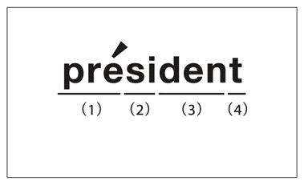
pre（プレー）......ここはアクセントがくる箇所です。強くやや長めに発音します。
si（ジ）......ここはアクセントがないのでぼかし気味に発音します。Iの音を弱く発声するので、子音のZだけが強調され「ジ」が「ズ」と聞こえます。
den（デン）......ここもアクセントがないので母音をぼかし気味に発音します。デンのEの音が弱く発音されるので、ドゥンという音に変わります。
t（ト）......この音には母音がなく子音だけです。したがって、発音が聞きとれない程度に弱くなります。
これらをつなげると、以下のようになります。
「プレーズドゥン」
これがネイティブに近い音です。日本語式に「プ・レ・ジ・デ・ン・ト」と明瞭に発音してはわかってもらえません。
もう１つの例を見てみましょう。ここでも４つに分解して考えます。
eco（エコ）......この部分にはアクセントがないので弱く、母音を不明瞭に発音する箇所です。最初のEは母音だけの発音ですから、「エ」のままの音で、弱めに発音します。次のcoにおいてはOの発音が弱まります。子音だけを強調する形になります。したがって、「コ」「ク」と発音します。
no（ノー）......この部分はアクセントがあり強く明瞭に、長めに発音する箇所です。
mi（ミ）......この部分はアクセントがなく弱く不明瞭に発音する箇所です。母音が弱くなり、子音が主に音として残る形です。したがって、「ミ」「ム」となります。
cal（カル）......母音のAは弱く発音します。また最後のLは子音だけですから、聞きとれない程度に発音します。したがって、「カル」「ク」となります。
これをまとめると、「エコノミカル」という単語は、
「エクノームク」
となります。
何回かご自分で発音してみてください。economicalという単語を頭に思い浮かべながら、「エクノームク」と発音すると、ネイティブ並みの綺麗な音になるでしょう。日本語の表記では伸ばす音を「ー」と記しましたが、やや長くする程度の、という意味です。
ある先生は「いかなまこ」と発音するように指導していました。これも完璧に通じます。「エクノームク」と「いかなまこ」の両方を英語のつもりで何回か発音してみてください。同じように聞こえてきます。
「プレーズドゥン」とか「エクノームク」と発音する際には「自分はこのスペルを発音しているんだ」ということを忘れず発音してください。そうするだけで、日本語の表記をそのまま発音しているのと違いが出てきます。細かな子音まで発音できるようになります。
なお、本書では発音記号を用いずにカタカナで英語を表記しています。発音記号に詳しくなる必要はありません。私たちは英語を聞いた際に日本語の音のどれかに近い音として聞いていますから、発音記号を持ちだしたところで、そこに新しい情報が加わるわけではないからです。
文も強い箇所と弱い箇所から成る
ひとつの単語には１ヵ所強く発音する箇所がありました。同じように、ひとつの文でも１ヵ所強く発音する箇所があります。その１ヵ所とは文の中で最も伝えたいところになります。このことを短い文で学んでみましょう。
私たちが銅メダル時代にやらなくてはならないのは、コミュニケーション語をひとつの単語のようにさっと言えるようになることです。
たとえば、第２章で紹介した、コミュニケーション語のひとつ、
Give me a hand.（手伝ってよ。）
については、
「ギブ ミー ア ハンド」
ではなくて、
「ギミーアヘン」
と発音します。
この文ではお金や時間ではなくて、手を貸してほしいと言っているのですから、最も強く発音するのはhandのところであり、そのアクセントのある音になります。
おもしろいのは冠詞のところです。aはhandにかかるのですが、ギミーアとmeaと一語のように発音されてしまうことです。弱い箇所がひとつの単語のようにまとまって発音されるからです。
この原理がわかるまでは、ぼくは「meaと聞こえるけどどういう意味の単語だろう」と思っていました。わかってくると、聞き取りも楽になってきます。
綺麗に発音するだけで、できる気になる
ここまで述べた方法で発音すると、急にネイティブに近づいた音になります。「自分もけっこうできるなあ」と自己礼賛したくなります。一部だけでもできてくると、長年の夢だったマイホームの土台が出来上がったような気分になってきます。これで英語が嫌いな気持ちが減るなら、大いにけっこうなことです。
しかし、それと同時に、米国式発音に一歩近づいた自分に対して、「なんだかアメリカかぶれしてやしないか」という気持ちが起きてくるかもしれません。まるで大げさな演技をしているような嫌悪感を持つかもしれません。ぼくがそうでした。「英語がほとんどしゃべれないのに、アクセントだけいっぱしの真似をしても恥ずかしいだけだ」と思っていたのです。
今なら断言できます。そんなことはありません。何かにつけて、「アメリカでは」と言う人はアメリカかぶれですが、アクセントをできるだけネイティブに近いものにするのはアメリカかぶれではありません。そうしないと本当に通じないからです。
「あまり綺麗に発音しちゃうと英語がうまいと勘違いされてすごい勢いで話されてしまうのではないか」と心配する人がいます。これもまったくの杞憂にすぎません。いくらうまく発音しても日本人の癖が抜けることは一生ないでしょう。どんなに上手に発音しても、ネイティブの耳をごまかすことはできません。
安心してうまくなってください。一つひとつの発音はまだまだだとしても、綺麗なアクセントができるようになってきたら、どんどん自己賞賛をして、やる気を搔き立ててください。
４―３ リスニング――聞き取れたフリが上達の道
「英語放送のつけっ放しでリスニングが伸びる」は真っ赤な噓
「シャワーのように英語を浴びるのがよい」「わからなくても聞き続ければ、ある日突然理解できるようになる」ということはありません。どんな宣伝も誇大広告の感がありますが、リスニングはその最たるものでしょう。集中して聞いてもわからないことを、漫然と聞いているだけでは嫌気が増すばかりです。
リスニングは、「聞き取れたフリ」をしているうちに自然とうまくなります。これがいちばん楽な上達方法です。
ぼくも初心者の頃は騙されて「英語一日つけっ放し」をやってみました。何日もやりました。でも、何の変化も起きませんでした。ただ雑音が鳴っているだけです。車の騒音がうるさい部屋に住んでいる人が、いつの間にかその音を聞き分けて車種の違いがわかるようになることはないでしょう。漫然と聞いていて力がついた人をぼくは知りません。
リスニングは一生懸命やってもなかなか聞きとれないものです。試しに、日本語のテレビを見る際に画面を見ないで後ろを向いて聞いてみてください。すべてが聞き取れるのはアナウンサーの読むニュースくらいです。対談番組になると、すぐに聞き取れない箇所が出てきます。芸能人によるバラエティ番組となるとぐっと難易度が増します。母国語であっても簡単でないのですから、英語ならなおさらです。
集中して聞かないと伸びることはあり得ませんが、この集中して聞く練習はおもしろくありません。何度聞いてもわからないところだらけだからです。
だから、ぼくのおすすめは「リスニングの勉強をしない」ことです。英語が嫌いになってしまいそうな練習は一切する必要はありません。
「だったら気が楽だけど、それだとリスニングの力が伸びないままではないだろうか」と思うでしょう。それがそうでもありません。
背伸びをしているうちに本当に背が伸びる
ポイントは「聞き取れたフリをする」ことです。ネイティブと話す際に、こちらがわかっていないことを隠しながら、わかったような顔で会話を続けるのです。もちろん会話中は、相手の言うことを理解しようと必死で努めます。これを続けているうちに、聞き取りの力はだんだんとついてきます。
会社が仕事を受注する場合に、それまでの自社のレベルを超えた仕事を積極的に取ってくる場合があります。たとえば、一般住宅を手がける工務店が今までやったことのないエコ住宅の仕事を取るような場合です。最初は見よう見まねで新しい仕事をこなすのですが、こなしているうちに、だんだんと高いノウハウがついてくるのです。
英語でも、本当は「もう一度言ってください」と言えればいいのですが、何回もそれを繰り返すことはできないでしょう。経験した人はおわかりでしょうが、ネイティブの話はわからないところだらけなのです。わかったフリはやむを得ない作戦でもあります。ぼくがすすめるのは、背伸びをしているうちに本当に背が伸びるのを待つことです。
当然ですが、聞き取れたフリをする際は、相手にばれないようにしなくてはなりません。「ネイティブと二人きりになったら話がもたないよ」と思うかもしれません。
しかし、うまく逃げ切るテクニックを駆使すればなんとかなります。それがここで紹介するピンチ会話術です。
その公式は次のようなものです。自分がまだうまく話せないレベルなのですから、
基本は相手に話してもらう
ピンチのときは自分が話す
というものです。
ネイティブとの会話はこう乗り切る
ピンチ会話術は以下のような流れで行います。
自分からあれこれしゃべるにはまだ実力が足りません。だから、相手の話を聞くことに徹します。話題は相手の国の文化などがいいでしょう。「もうすぐイースターだけど、家で何か特別な食べ物でも食べるの？」といった具合です。英語は"Easter, special food, at home?"くらいで通じます。
自分の国のことに興味を持ってもらったのですから、相手は喜んで話してくれます。しかし、あまりにもどんどんまくし立てられると、だんだん話がわからなくなってきます。相手も「自分の話がわかっているのだろうか」と不安げな気持ちになります。
こういう感覚はお互いに伝わるものです。こんなときによく言われるセリフがあります。
Are you listening?（ちゃんと聞いていますか？）
Am I boring you?（私の話は退屈ですか？）
ここでは「どうぞ話を続けてください」（Yes, I am listening.）と言えばいいのですが、それだけでは何か収まりがつかない感じになるときがあります。本来ならば、聞き取った相手の話の中で興味を持ったところについてさらに質問すれば話が発展していくわけですが、それができるほど話が理解できていない場合もあります。
そんなときは自分から少しだけ話題を変えてしまいます。たとえば、「日本ではその頃は桜の季節だよ。桜は日本人が大好きな花だよ。桜は好き？」といった具合です。ちょっと変ですが、日本人同士でも突然違う話題を始めてしまう人もいるので、許容範囲です。
ここで、発言の最後を質問で締めくくっていることに気づいたでしょうか。これで自分が話す役割は終わりです。難局を切り抜け、また相手が話す番になりました。
２つの表現を使うだけで会話がスムーズになる
さて、ピンチ会話術に不可欠な２つの英語表現をご紹介します。
1) I cannot answer your question directly, but（その質問には直接答えられないですが）
2) What do you mean?（どういう意味ですか？）
これらの表現は以下のように活用してください。
会話ですから、相手から何か聞かれることがあります。たとえば「日本ではイースターをどう祝うのか」といった質問です。質問はちゃんと聞き取らないと答えられません。
よく聞こえなかったときは、だいたいの回答をするしかありません。ここでの登場です。
もし自分の回答がイースターには関係がなくて、先程の花見の話だったとしても、ネイティブは「確かに、質問とは違う答えだなあ。でもイースターはあまり重要ではなくて、この時期は皆花見を楽しみにしているっていうことだ」と理解するでしょう。この前置きなしだと、「なんだ。こちらの言っている質問が理解できないのか」と思われてしまいますが、前置きがあればそうした問題が生じないで済みます。
この表現はビジネスでも効果的です。プレゼンテーションはあらかじめ準備ができますが、その後の質疑応答では、質問を正確に聞き取るのが厄介です。こんなときに力を発揮します。
実はネイティブもこの表現を使っています。ぼくが米国の企業経営者に対してＩＲの質問をしたことがありました。「御社の目標と戦略の間に矛盾があります。ご説明ください」と詰め寄ったところ、先方はこの表現（「少し遠回しな言い方になりますが」）を前置きに使って回答を始めました。この表現は、どうしても曖昧な回答をしなければならないときにも効果的だということです。
「それはどういう意味ですか」は丁寧に言うのがコツ
相手の英語は聞き取れるのですが、意味がわからないこともあります。
"It's been around."
とアメリカ人の同僚から言われたことがありました。ぼくらが勤務する会社が欧州のどこかの会社を買収するらしいという話を彼が始めたときのことでした。
この英語そのものはちゃんと聞き取れたのですが、ぼくのその頃be aroundという表現は知りませんでした。ぼくが知っていたのは「（学校の）周囲に」という場合のaround（the school）だけでした。だから、相手に聞き返したとして、同じことを繰り返されてもわかるはずがありません。
もちろんここで正直に「そのbe aroundっていう表現の意味がわからないんだ」と白状することはできます。でもそれだと、「こんな簡単な単語を知らないなんて、こいつは案外英語力が低いぞ」と思われてしまう危険性があります。
そこで、役立つのがの表現です。
What do you mean?
と言います。
これは言外に、「本当のところ、どういうことですか」という意味を含みます。発言が聞き取れなかったから繰り返してほしいのではなく、「真意は何だったか」と聞かれたと相手は思い、再度発言をし直します。
この場合だったら、「どういうこと？ もう少し説明してほしい」とぼくが意図した、と相手が解釈することになります。つまり、be aroundという表現の意味を知らないという事実を隠して話を進めることができるだけでなく、「もっと深く聞きたい」という意思を表示したことになります。相手の話がわからないどころか、そのことに興味があると伝えたことになるのです。
実際、相手は「ノリは知らなかったの？ エドワードも先週言っていたし、ベティも知っていたよ。もう皆が知っている噂だよ」と言い出しました。その回答を聞いて初めて、be aroundが「（噂や評判が）広まっている」という意味だとわかりました。噂がそこいらにある（around）ということです。
銅メダル英語のレベルでは、試験に出るような単語は覚えていても、会話で使うやさしい表現には慣れていないことが多いので、What do you mean?は力を発揮します。
コツはやさしく丁寧に言うことです。ぶっきらぼうに言うと、詰問しているように聞こえます。たとえば、女性の容姿ばかりを褒めると、
What do you mean?
とやられます。すなわち、「それってどういう意味？ 見た目はいいけど、頭は悪いって言いたいの？」と言われるわけです。この場合は強く言ってきます。
銅メダル時代を生き延びる術は「とにかくごまかすこと」に尽きます。ネイティブが買い被ってくれている間に本当の実力を築けばいいわけです。ぼくの経験では、リスニングの力はなかなかつかないので、「ごまかし」を続ける期間はけっこう長くなります。しかし、ピンチ会話術を駆使することで、ネイティブに本当の実力がばれることはありませんでした。
リスニングを劇的に改善する方法はありません。「聞き取れたフリ」とは長いつき合いになると思ってください。「なかなか聞き取れるようにならない」と悲観的に考えるのがいちばんよくありません。
４―４ YESとNOはリスニング力をカバーするキーワード
相手の賛否が会話の流れを変える
英語でも日本語でも、会話で最も注意すべきところは、相手が賛成したか、反対したかです。つまり、YesとNoです。聞くときも話すときも、ここを意識するだけでスムーズに会話が流れるようになります。
賛成・反対という言い方をすると、議論をしている場面を思い浮かべてしまいますが、もう少しおおまかにとらえてください。
たとえば、「昨日のＴＶ番組の最終回はよかったね」という発言に対して「そうそう。すごくよかった」と言えば、それは賛成です。これに「そうかなあ。そんなでもなかったよ」と言えば、反対になります。
相手が賛成ならば話を先に進めます。さらに深掘りした自分の意見を言ったり、関連する話をしたりします。相手が反対ならば、相手を説得するか、自分が折れるかします。その話題はそこで終わりにしてしまうこともあるでしょう。相手の出方（賛否）によって会話の方向性が大きく変わってきます。これは日本語でも英語でも事情はまったく同じで、ビジネスでも友達同士の日常会話でも同じです。
このように考えれば、会話の要点は賛成か反対か、YesかNoかということになります。ここを押さえておけば、相手の話を聞くときはもちろん、自分が話す際も楽になります。この観点から、基礎、初級、中級のレベル別に３つのポイントをお話しいたします。
１．基礎編：相手から聞き取るのはYes/Noだけにする
聞き取りが苦手なうちは、相手の話が込み入ってくると何の話かわからなくなってきます。「聞き取りが苦手なうちは」と書きましたが、苦手意識は簡単には克服できません。
そこで、ここでは最も基礎的なレベルの人向けの乗り切り方を披露します。相手からYesとNoだけを聞き取るのです。
一般に、リスニングに比べてスピーキングのほうが早くできるようになります。だとしたら、聞き取りの力不足をスピーキングで補うことができます。「あなたの言いたいことはこうですか？」と聞いて、相手には「はい」「いいえ」だけを答えさせれば、リスニングの力はゼロでもいい、ということです。
ぼくはこれを実行して立派な成果を上げている人に会ったことがあります。日本人ではなくて、アメリカ人でした。その人は証券アナリストで、日本の企業を回って情報を収集していました。カタコトの日本語で仕事をこなしていたのです。ぼくは彼が企業の担当者から情報を聞き出す場面に同席しました。
アナリスト：「今年の出店数は去年と同じくらいですか？」
ＩＲ担当者：「はい、そうです」
アナリスト：「今年はメニューの値下げはしていませんね」
ＩＲ担当者：「はい、していません」
といった調子です。つまり、自分が調べてきた内容を担当者から確認しているだけでした。
聞き取りの力があれば、本当に欲しい情報を得るために「なぜ出店数をもっと増やさないのですか？」とか「他社が値下げしているのに、どうして価格を据え置きにするのですか？」といった「なぜ」型質問をすることができるのですが、聞き取り力がない間は仕方がありません。
理由はともかく結論がわかればいい
複雑な回答が返ってきても聞き取れないわけですから、無駄になってしまいます。相手の話を理解できずに誤解するくらいなら、聞き取れた範囲だけで自分の仕事を完結したほうが、結果が伴うのではないでしょうか。突き詰めた物の言い方をするなら、結論さえわかれば、理由はどちらでもいいのです。結論とはYes/Noのことです。
後日、彼が書いた英文レポートを見ましたが、「日本語を駆使してこれだけ調査したぞ」といった堂々たる内容で、聞き取り能力の欠如は微塵も感じさせませんでした。
このアメリカ人アナリストは極端な例ですが、相手に長い回答をさせないで、できるだけYesとNoで答えてもらう方法はかなり有効です。言葉でどう表現していいかわからない場合は図や絵を描いて、YesとNoで答えてもらうこともできます。
ぼくは途中で話がわからなくなってくると、今でも相手にYesとNoで答えてもらっています。はじめの頃は、そんな経験をするたびに「自分はまだリスニングが弱い」と自分を責めていました。
しかし、考えてみれば、日本語でも同じことをやっていることに思い当たりました。相手の話が複雑になってくると、「ちょっと待って。今までの話はこういうことだったよね？」と確認を入れているのです。「その通りだよ」ということならば、相手はそのまま先に話を続けますが、「少し違うよ」という場合は理解が違った箇所だけもう一度説明をしてくれます。
リスニング力の弱い人は、相手がYesかNoかで答えられる質問をしましょう。かなりの熟達者の場合は、相手の話を確認するときにだけ、Yes/Noで答えられる質問をすれば安心です。中間のレベルの人は、自分の実力に応じて、Yes/No質問を適宜にはさんだらいいのではないでしょうか。
２．初級編：軽々しくYesとは言ってはいけない
英語で「Yesですか、Noですか」と聞かれた場合、私たちはどうしてもYesと答える傾向があります。Yesならばそれ以上追加であれこれ言う必要がないからです。早く相手から逃れたいと思ってYesと言いたくなるのですが、簡単にYesとは言ってはいけません。これは大事なルールです。
米国を旅行中に食事をしたときのことです。会計をする段になり、ぼくはクレジットカードを出しました。するとウエイターが何か言いました。相手はにこにこしながら早口で言ってくるし、目くじらを立てて聞き返すほどのこともないだろうと思い、思わず"Yes."と言ってしまったのです。
後でわかったのですが、「サービスチャージを私のほうでつけておきましょうか」ということだったようです。この結果、25％以上の高額のサービス料を取られました。この人はぼくが日本人だとわかった上で、この手口を使ったのかもしれません。
この程度の失敗ならば、授業料だと思えばあきらめがつくかもしれません。けれども、いつもこのような軽い失敗で済むとは限りません。
米国で働いていたとき、ネイティブから電話がかかってきました。ぼくにかかってくる外部からの電話は、ほとんどが証券会社の営業担当者からでした。キャリアウーマンの女性は低めの声で話すと聞いていましたが、まさにそうだなあと思いました。
あまりに早口だったせいか、余計なことを考えてしまったせいか、何を言っているかわかりませんでした。そして「どう、いいですよね？」と相手は最後にぼくに同意を求めたのです。
相手の顔が見えない電話は恐怖でした。ぼくはとっさに"Yes."と言ってしまいました。相手は電話を切りました。
後になって冷静に考えてみました。どうやらその電話は、「当社のニューヨークのオフィスに来ないか」という誘いだったようなのです。新米だったぼくを自分の会社に呼んで、ランチでも食べながら関係を密にして仕事につなげようということだったのかもしれません。先方は電話の中で日程や場所も話したのでしょうが、それはまったく聞き取れませんでした。
ぼくは要するに、誰かもわからない相手に「行く」と言ってしまい、行けるはずがない空約束をしてしまったようでした。
「困ったことになった」と思ったものの、どうすることもできません。１週間後に先方から電話がありました。声と口調でわかりました。前回同様に何を言っているかはわかりませんでしたが、用件はおそらく出席の確認だったのでしょう。相手はべらべら話し始めましたが、それを遮って「申し訳ない。行けなくなった」とだけ言いました。相手が気を悪くしたのかどうかはわかりませんが、すぐに電話を切ってくれました。
その人からは二度と電話はありませんでした。いったい誰だったのか、どういうオフィスだったのかはついぞわかりません。一歩間違えば自分の信用、会社の信用に関わるところでした。
電話のポイントは「いったん切る」こと
この失敗に懲りて、ぼくは対策を考えました。電話の最大の問題は「心構えもできていないのに突然かかってくる」ことです。だとすれば、心構えのある電話に変えてしまえばいいわけです。
「今は忙しいからすぐにかけ直します。電話は何番でしたっけ？」と言っていったん切ります。その上で、何をどういう順番に話したらいいかをゆっくり考えます。深呼吸してから、相手の番号を押すのです。突然英語で攻められると押され気味になってしまいますが、この方法ではこちらがかけるわけで、主導権を握っているため、比較的楽に応対ができます。守りから攻めに転じるようなものです。
それに、相手の話をすでに多少でも聞いているので、２回目は何の話かだいたいの想像ができます。何回も話している相手なら、用件は簡単に推察できます。
しかも、電話では奥の手、メールが併用できます。途中でわからなくなったら、「忙しいから、あとはメールで尋ねてください」と言うのです。面談は途中で打ち切ることはできませんが、電話ならそれが可能です。
また、どうしても切れない電話もあるでしょう。そんなときのためにいい表現があります。
I'll give you a tentative yes.（一応、ＯＫだよ。）
これは「完全にはYesではない」という含みがあるので、後から「やっぱりだめだ」と言い逃れることができます。
Maybe yes.と言うと、あまりにも腰が引けている感じになります。
英米人とつき合っていると、日本人同士ならば遠慮するようなことでも、「相手がＯＫならば問題ないだろう」と考えて了解を求められることがあります。ぼくはアメリカ人の同僚から、「日本に出張に行ったら、小銭が余っちゃった。両替をしてほしい。銀行では小銭はだめだと言われたから」と言われ、当時の為替レートではあり得ないレートでどうかと頼まれたことがありました。彼に悪意があったかどうかはわかりませんが、Yesは簡単に言ってはいけないのです。
３．中級編：聞き取りのポイント：肯定文か否定文か
「会話の要点は賛成か反対か、YesかNoかだ」ということはリスニングでも有効です。「肯定か否定かを聞き分ける」ことが大切だということです。細かいところがわからなくても、ここがわかれば大意はわかります。
日本語では、肯定、否定は、
「です」／「ではありません」
または、
「である」／「でない」
とかなりくっきりとした音の違いがあります。英語の問題は、肯定・否定が音声上かなり似通っていることです。
ここがリスニングの最大の難所です。
例文を見てください。
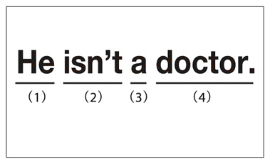
「あの人は医者ではない」という英語です。もし会話の相手がこのような発言をした場合、最も注意して聞く必要があるのは、「肯定文だったか、否定文だったか」であり、２番の部分です。逆に、最も聞き取りやすいのは４番です。医者という単語を、学生とか看護師という単語に聞き違えることはまずありません。また、３番の冠詞「a」は聞き取れなくても何ら問題はありません。
かなり英語に熟達した人でも、１番と２番が聞き取れないことがあります。「he」は「she」と聞こえる場合があります。また、「is」は「was」と聞こえるときもあります。早口で話されてしまうと、ほんの少しの音の違いしかないので、どちらにも聞こえてしまうのです。
しかし、今現在話題にしている人が「he」か「she」かを間違うことはまずありません。過去形と現在形を間違えて聞いても、たいした問題は起きません。ところが、否定か肯定かでは１８０度方向が違ってしまいます。
例文の中で違いが出てくるのは、「is」と「isn't」とのところです。この２つの間には音声上の違いがほとんどありません。否定語の「t」はほぼ発音されません。「isn」の後、あたかも「t」を発音したようにその分のポーズを取るのが原則です。ただし、速い会話ではこのポーズも非常にわかりにくいです。そうなると、否定文と肯定文の違いは「n」があったかどうかだけになってしまいます。
否定文のときは「それは違うよ」という意味で発言者は顔を振るので、これを見分ける基準に使ってください。ただし、顔を左右に振るといっても心の中でだけ振る人もいるので、見たところ区別がつかないこともあります。
同じように難しいのは「can」と「can't」の聞き分けです。「can't」は、否定語の「t」をあたかも発音したようにその分のポーズを取ります。加えて、「can」と発音する声がやや大きくなります。
英米人が銅メダルの人に向かって早口でまくし立てることはまずないでしょう。それでも、ネイティブが大勢いる席に同席してしまった場合や、英語のテレビ番組を見るような場合には、肯定・否定の聞き取りが必要になります。
また、スピーキングにおいても、ここは要注意です。みなさんが話すときはよほど慣れるまでは「isn't」「can't」と発音しないで「is not」とか「can not」のように明瞭に発音してください。ぼくは今でもちょっと気を抜くと、ネイティブから「今の発言は肯定だったの？ 否定だったの？」と確認されることがあります。
ここで紹介した３つのポイントはビジネスでは特に有効です。仕事のやりとりは友達と親交を深める場合と違い、白と黒をはっきりさせることが大事です。白黒とはYesとNoのことにほかなりません。これらのポイントに注意するだけで仕事がはかどるようになります。
第５章 ビジネス英語は交渉術だ
５―１ 英語力より仕事力
専門用語の英単語スピーキングで切り抜ける
この本を手に取った人の中には、英語を仕事に生かそうとしている人も多いのではないでしょうか。ほとんどの人はビジネス英語は日常会話より格段に難しいと思っていますが、ぼくはこの逆だと思います。ビジネス会話は日常会話より簡単です。
野球やサッカー、フィギュアスケートといったスポーツの世界では、監督やコーチが外国人の場合がかなりあります。会社員にたとえれば、いきなり課長の席に外国人が座ったようなものです。それでも、スポーツ選手から「言葉に苦労している」という話は聞こえてきません。「あの選手は英語がそれほど得手ではないのに、どうして、うまくコミュニケーションが取れるのだろう」と不思議に思いませんか。
ある日本人女性の投資家が、来日する著名な外国人投資家と話をしたいと言ってきたことがありました。この人とは仕事上のつきあいが長かったので、ぼくが通訳してあげるよ、と言いました。ただし、こう付け加えました。
「通訳を介するよりは自分の言葉で話すほうがいいに決まっているから、困ったときだけ助け船を出すよ。隣にいるから安心していていいよ」
彼女の英語はＴＯＥＩＣ６００点くらいで、たどたどしかったのですが、なんとぼくは一言も通訳することはありませんでした。何の助けも必要とすることなく、途中で相手の話に感心したり、笑ったりしていました。
30分間の会談は、ここまでうまくいくとは思わなかったほど順調でした。彼女は「先生の著作を読み、最近の講演録を読んでおきました。聞きたいこともまとめていました」と言っていました。
ビジネス英語は日常会話よりやさしいのです。仕事力のある人がきちんと準備をすれば、英語力の不足はカバーできます。
その理由は「仕事におけるコミュニケーションの基本は数字と専門用語」だからです。会社は利益追求の集団ですから、特に数字が大事です。専門用語はほぼ名詞ですから、ポイントは数字と名詞になります。
たとえば、小売業の経営会議ならば、次のようなやりとりがあるはずです。
・売り上げ（既存店の売り上げ、客単価、客数など）がどれだけ上がったか
・新規の営業（新規店舗の開店数、新商品の売り上げ）がどれだけ伸びたか
・経費の削減が何％進んだか
・納品までの日数がどれだけ短くなったか
・その結果、利益がどれだけ伸びたか
ここでの専門用語は既存店とか客単価程度ですが、仕事の中身によっては、一般の人にはさっぱり意味不明な専門用語も出てくるでしょう。しかし、その道のプロなら専門用語を英語でどう言うかはたいてい知っているはずです。
また、こうした会議に用いるプレゼンテーションの資料はふつう、各ページにだらだらとした文章が書いてあるのではなく、単語（名詞）がぽつん、ぽつんと並んでいるだけです。日本語の資料でも、プレゼンテーションはただの単語の羅列です。
要するに、会議やプレゼンテーションの場で必要なのは、専門用語と数字による英単語スピーキングです。日常会話より、よっぽど簡単だと思いませんか。
社内英語化にはどう対応したらよいか
社内で英語を公用語にしようという動きが出ています。英語が苦手な人の中には「自分の会社がそうなったらどうしよう」と戦々恐々としている人もいるでしょう。
でも心配ご無用です。社内英語化はまったく怖くありません。
全員が日本人なのに、あえて英語で話すのはおかしなものです。英会話のレッスンのときでさえ、日本人同士だと気恥ずかしい思いが先に立ち、あまりしゃべれないのではないでしょうか。
笑止とも思えることにわざわざ真面目に取り組むのですから、相当な覚悟や意図があるはずです。その意図とは「このまま国内だけでビジネスをやっていたら、生き残れない」という悲壮な決意です。つまり、海外に活路を見いださなくてはやっていけないと思っているわけです。社内英語化は、日本企業がここまで追い込まれていることを意味しています。
こうした環境において、どのような人材が求められているのでしょうか。
仕事と英語の両方について「自信がある」「自信がない」の２つの切り口で考えてみましょう。４種類の人材に分かれることになります。
すなわち、
仕事も英語も自信がある人材
仕事の自信はあるが、英語には自信がない人材
仕事の自信はないが、英語には自信がある人材
仕事も英語も自信がない人材
です。
この中で、が望ましいのは明らかですが、両方に自信がある人はごく一部でしょう。は今の時代だけでなく、あらゆる時代において生き残れません。残るはとです。どちらがより重宝がられるでしょうか。
答えは簡単で、が必要な人材です。海外に出て仕事をしてほしい人材とは、国内のビジネスで十分なノウハウを身につけたプロの人です。企業は、英語力だけが高い人を求めてはいません。仕事ができるが、現時点では英語ができない人の英語力を高めるために、社内英語化を推進するのです。
好況時には英語研修と称して、企業が有望な人材に投資して英語学校や海外研修に行かせた時期もありました。しかし、多くの企業にはそうした余裕はもうないのです。社内英語化は、入学試験や資格試験と違い、社員を英語力によって選抜するものではありません。仕事力に英語力をプラスして、国際的に生かしてもらうための環境づくりなのです。
つまり、社内英語化とは英語屋を育成するのが目的ではありません。もちろん、のような人材も自分を生かす場面は増えてくるのでしょうが。
外資系ですら英語力は重視されていない
「『英語化は怖くない』と言われても、そんなに安穏としていられないよ」と思っている人はいないでしょうか。
そんな人には社内の英語化が国内で最も進んでいる職場の様子をご案内します。そうすれば、ぼくの言っていることが本当だということがわかるでしょう。
現在、社内の英語化が最も進んでいるのは、楽天とかユニクロではありません。外資系会社（特に金融機関）です。そこでは社内の文書は英語、重要な会議はすべて英語です。
しかし、そうした組織においてさえ、皆が英語が得意なわけではありません。できない人のほうが多いといっても過言ではないでしょう。売り上げを伸ばすことのできる営業担当者、顧客の信頼の厚いアナリスト、市場のニーズに合った新商品を提供できる開発メンバーが優遇されています。英語力のある人よりも仕事力のある人材が重要視されているのです。
たとえば、薬品アナリストは薬学部・医学部の出身者や、薬品開発に長年携わってきた人です。こうした人たちは日本国内だけでなく海外のお客様にもプレゼンテーションを行いますが、必ずしも英語が堪能なわけではありません。
みなさんの中で、「仕事の実力をつけなくてはいけない。英語も勉強しなくてはならない。時間がないから両方同時にはできない」と思っている人がいるでしょう。優先順位ははっきりしています。英語よりもまず仕事で抜きん出ることです。
今までとまったく違った部門に配属されるときは自分だけが〝新人〟なので、ひとりで新しいことを吸収し周りに追いつかなくてはなりません。これに対して、全員が一斉に社内英語化に取り組むなら、「皆ができるレベル」からスタートするに決まっています。
５―２ 英語ができなくてもネイティブに勝てる
絶体絶命の中で気づいた勝ち抜く方法
「仕事に自信があれば英語公用語化は切り抜けられる」と述べました。公用語化が怖くないのは、それが英語力を高める演習にすぎないからです。これに対して、ネイティブの中で勝ち抜いていくというのは実戦です。これは簡単ではありません。
それでもぼくはネイティブの通う大学院に行き、日本人はぼくひとりというネイティブの会社でサバイバルすることができました。それは英語がうまかったからではありません。英語力の弱さを、それ以外の強みでカバーしてきたからです。
英語嫌いのぼくが、学校開設以来、最優秀の英語の成績を修めたと言っても誰も信じないでしょう。それも、日本の中学や高校でではなく、ニューヨークにあるコロンビア大学の英語学校においてです。銅メダルだったぼくにそんなことができたのは「英語以外で勝負をした」からです。
前にもお話ししたように、ぼくは学内最低の成績でコロンビア大学ビジネススクールに合格しました。実はこの合格は条件つきでした。あまりに英語の出来が悪いので「当大学の英語学校でレベル10の成績に達した場合にのみ入学を認める」というものでした。
日本の大学を楽勝で卒業したぼくは気楽に考えていました。「学校は、出席さえしていれば卒業させてくれる所だ」と思っていたのです。「大学院の合格通知を持っているのだから、３ヵ月も英語学校に通えば入学を許してもらえるだろう」とタカをくくっていました。
ところが、組分けテストで配属となったクラス（レベル７）で他の学生たちの英語を聞き愕然としました。皆がネイティブの英語に聞こえるほど流暢でした。ぼくは文法の点数がよかったので、本来の実力よりも高く評価されたのでしょう。実際には、自分の英語力は明らかにクラス最低でした。
文法ができなかったある日本人は組分け試験の合計点が振るわず、レベル３に配属されてしまいました。そこではライオンが吠えている絵を見ながら、「Lion」と発音する練習をするのです。いくら何でも子供じゃあるまいし、そんなのは嫌だと思っても、それ以上のクラスではまったく聞き取れないので絵本で勉強を続けるしかない、と苦笑していました。ぼくには笑えませんでした。聞き取りの力はぼくも同じようなものだったからです。
レベル10に達しなければ、合格は取り消しです。先生のところに相談に行き、事情を話しました。すると、「私はこの学校で教え始めて20年になるが、レベル７だった学生が３ヵ月でレベル10にまで昇級したケースはない。おそらくこの学校の開設以来皆無だろう。だからといって、君にできないわけではない」と言って、ぼくを励ましたのです。
先生は最後に「君が歴史を創るんだ」と言いました。ぼくは楽観的なほうですが、この先生の言葉を真に受けるほどおめでたくはありません。どん底の気持ちでした。
ところが、先生の話の中に「もしかしたら、まだチャンスはあるかもしれない」と思える希望の光があることに気づいたのです。
英語以外の力をフル活用する
それは、レベル７以上の昇級テストは英作文だけ、というものでした。「レベル７にもなれば、普通の会話には何ら問題がないので、それ以降は授業でもリスニングやスピーキングの練習は行わず、大学で必要な論文作成のための作文に重点を置く」とのことでした。
どんなに優れた英語の先生でも、作文を読むときは中身を読んでしまいます。ぼくが奇想天外な楽しいことを書いても、ただ「今日は７時に起きた。８時に会社に行った」とだらだら書き連ねても、書き手であるぼくの語学力は同じはずです。でも、前者には高い点がつけられるでしょう。おもしろいことを書けば昇級できるかもしれないとぼくは考えました。
ニューヨークに着いて最も驚いたことは犬でした。日本では見知らぬ犬同士がすれ違おうものなら、互いに飛びかからんばかりに吠えたてます。ニューヨークでは犬の躾がいき届いていて、お互いに知らん顔をして通り過ぎるのです。この行儀のよさ。ニューヨークの街並みはテレビで何度も見ていたので、初めて訪れた気がしませんでしたが、思いもしなかった犬の違いを目の当たりにして異国にいる実感が湧いてきました。第１回の作文はジョークを駆使してこのことについて書きました。
その作文はクラストップの評価を受けました。先生が「こんなにおもしろいのがある」と言ってぼくの作文を読み上げました。クラスメートたちはそれを聞いて笑っていました。その様子を目にしながら、「この作文は本当にぼくが書いたものだろうか」と不思議な気持ちになりました。自分で書いた英語すら、ネイティブが朗読すると聞き取れなかったのです。最後に皆がぼくのほうを向いて「すごい！ うまい！」と拍手をくれたとき、「やっぱりぼくの作文だった」と安心したのでした。こうした作文を書き続け、ぼくは３ヵ月でレベル10に昇級しました。
この経験でぼくがつかんだことは「英語で勝負できないなら、英語以外で勝負する」ということです。ぼくは作文が下手なほうではないでしょうが、特にうまいわけでもありません。まして、英語学校開校以来の作文能力があったはずがありません。ただ、英作文は中身が勝負、ということを意識した人は過去にいなかったということです。
英語がだめでもひっぱりだこ
ＭＢＡを切り抜けたのも英語力以外の力でした。
コロンビア大学ではチームワークを養うためか、グループ単位で議論し、レポートを作成します。学生はいい成績を取り、できるだけ多くのことを吸収して、就職戦線に臨もうとしています。したがって、誰と組むかは重要です。
ぼくの英語は下手なままだったので、まともに話が通じないぼくと組んでくれるネイティブがいるわけはありません。ある日、たまたま隣の席だったネイティブに「一緒に組まないか」と声をかけると、「もう他の人と組むことにしたから」と断られました。取りつく島もない、といった感じでした。
英語以外で勝負しなくてはいけない、と思いました。ぼくは彼に自分の経歴を簡単に話して、「株式の実践的な知識なら、クラスの誰にも負けない」と言いました。コロンビアではほとんどの学生がウォール街に就職を希望するので、証券の実践的な知識という言葉は魅力的に響きます。
彼は手のひらを返すように、「わかった。ぼくたちと組んでくれ。もうひとりはぼくが必ず説得するから、他の人とは組まないとこの場で約束してくれ」と言いました。完全な「売り手市場」でした。
チーム内でのぼくの役割は投資に関するアイデアを出すことだけでした。ぼくがカタコト英語で説明すると、別のひとりが、「君の言いたいことはこういうことか？」と言いながら、猛スピードでタイプします。ぼくは画面を見てうなずくか、身ぶり手ぶりでニュアンスの修正を求めるだけでした。出来上がった論文を見たら、ぼくが何時間かけて書いても出てこないような洗練された英文でした。
この作戦のおかげでぼくはどの授業でもひっぱりだこで、優秀な相棒に恵まれました。卒業までの２年間、一度も英文を書いたりタイプをしたりしないで済みました。
論理力も教養も自分の強みになる
米国で就職した会社では、ぼくのほうがネイティブの英語を直していました。
秘書職のナンシーは「秘書以外の仕事に転職したいから、推薦状を書いてほしい」とぼくに言いました。ぼくの英語力は銅メダルの上位か銀メダルに達していたかという程度ですから、人が感心するような英文が書けるわけありません。「何でも好きなように書いてきたら、サインするよ」と言いました。
彼女が書いた推薦状を見ると、いまひとつ出来がよくありません。どうしてぼくが彼女の仕事ぶりを高く評価しているのか、それがいまひとつ伝わってこないのです。そこで、文章の順番を入れ替えたら、論理的で洗練されたものになりました。
赤字の入った推薦状が説得力のある内容になったのを見て、ナンシーは「外国人に英語を直された」と恥じ入っていました。ぼくが直したのは英語ではなくて、ロジックでしたが、彼女には言語そのものを直されたように見えたのでしょう。
日本人の一般教養も、私たちの強みとして働きます。
イギリス人の家に招かれた際、紅茶のカップにバラの模様がついていました。それを見て、「英国にはバラ戦争があったね」と言ったら驚かれました。中世にそういう名前の戦争があったと高校で習った記憶があっただけです。
中学・高校で習う歴史や地理の知識は役に立ちます。一般的に外国人は日本のことはよく知りません。場合によっては、大学を卒業している人でも、日本が地図上のどこにあるかもわかっていないことがあります。ですから、ぼく程度のうろ覚えでも、外国の歴史を知っているということで、教養人に見えるのです。
料理の得意な妻は、自宅にネイティブを招いては料理を教えて友達を作っていました。空手黒帯の友人や自動車運転のスピード狂の友人は、それぞれの趣味を生かして友達を作っていました。
強みは「普通の人よりできる程度」でいい
いくら英語が上手くなってもネイティブと同等になるだけです。同等ならば、尊敬を受けることはできません。でも自分に強みがあれば、ぼくらはそれだけでネイティブから尊敬を受けることができます。強みのない人はいません。外国人と私たちはいろいろな点で違う人生を歩んできています。その違いが「強み」になるはずです。
強みについて誤解のないように書き添えておきます。大事なことは、それは世の中に大きくぬきんでるようなレベルでなくても、普通の人よりできる程度で構わない、ということです。
ネイティブは英語を除けばごく普通の人なのです。ぼくは最初のうち、この事実が頭ではわかっていても、ネイティブはなんだか自分より優秀のような気がしていました。英語ができないと、ネイティブの前ではどうしても萎縮してしまいます。その必要はありません。
この原稿を書きながら多くの友人のことを思い出しました。皆それぞれにいいところがいっぱいあります。同じように、みなさんもぼくも長年生きてきて、いいところをいっぱい持っています。英語はまだまだだとしても、そのいいところをフルに活用するのです。一つの科目ができなくても、他の科目ができれば大学に合格できるように、英語のコミュニケーションも、英語以外の力を合わせれば「合格」できます。
５―３ ビジネス論理戦のキーワード Whyの三連発
Whyで攻め立てるのが英米人の強み
ビジネス会話を大きく２つに分けるとすると、情報交換（収集と伝達）と交渉とになります。情報交換では、自分の強みに基づいた英単語スピーキングで乗り切ることができます。
これに対して、交渉はやや難易度が高くなります。日本人はネイティブとの交渉が苦手ですが、相手方がどのように出てくるかがわかれば、銅メダルでもこなすことができます。
その出方を一言で言うならば、欧米人はビジネス交渉において、常に、Whyと斬り込んでくるということです。国際ビジネスの交渉では３回続けてWhyと聞かれても大丈夫なだけの準備をすることをすすめます。Why-Becauseを使って深く考えていくのです。これができれば、あなたは優秀なビジネスパーソンです。
英米人がWhy攻勢に長けているのは日常生活でも乱用するほどにそれを実践しているからです。
ある映画で見たシーン。カリフォルニアの大学生の男女が痴話げんかしているところです。
女：「あなたなんか嫌になった。時間にルーズだし、傲慢だし。別れるわ」
男：「Why?」
というものでした。
ぼくはこの男子学生の発言にあきれてしまいました。女子学生のほうはすでに別れたい理由をはっきり明示しているのです。今さらなぜWhyとその理由を尋ねるのでしょうか。
ぼくがこの映画のシーンを紹介した理由は、これが典型的なアメリカ人の交渉の様子を示しているからです。すなわち、「ここではWhyと聞いてくる場面ではないだろう」と思う局面でもWhyが出てきます。
このWhyの回答として、女子学生は、
「あなたとはうまくやっていけないわ」
と言っていました。これは「別れる」と同じ意味であって、Whyの回答にはなっていません。
アメリカ人たちは必要もないときにWhyを使うのですから、回答する相手もBecauseで答え始めたとしても、理由にもならないことを話しているケースが多々あります。
こうしたことは男女の間柄だけでなく、職場でも頻繁に見られます。
「このコンピュータは調子が悪い。隣のを使ってよ」
「Why?」
といった調子です。
私たち日本人は律義ですから、Whyと聞かれれば、「どうしてもその理由を言ってやらないといけない」という思いに駆られます。しかし、理由なんかわからないことだってたくさんあります。これ以上、何を理由として答えたらいいのでしょうか。それほどWhyが乱用されているのです。
このことはBecauseという単語が頻繁に使われている事実にも現われています。
日常会話ではBecauseときちんと発音しないで'causeとか'cosとか発音することがあります。このように短縮するのは、
I'd（hadまたはwould）
He's（isまたはwas, has）
といったように、使用する頻度の高い単語だけです。同じ接続詞でもThereforeとかHoweverには省略形はありません。いかにBecauseがよく使われているかがわかります。
Whyに対して、どこまで答えを用意するべきか
Whyの乱用は決して褒められたことではありませんが、この習慣はビジネスの交渉の席では威力を発揮します。
相手側はなりふりかまわずWhyで聞いてくると思ってください。隣のコンピュータに席を移ってもらう場合のように、くだらないWhyの質問もありますが、「御社の製品はどうして優れているのか」といったように重要なWhyもあります。その中間的なWhyもあります。
こちらとしては、想定されるすべてのWhyに回答を用意しておけばいいのですが、それにはあまりに時間がかかります。
ここで重要になってくるのが論理戦を乗り切るルールです。つまり、大事な問題に対して、Whyを３回繰り返されて突っ込まれても十分な答えを用意しておくことです。すなわち、Why三連発の攻略作戦です。
具体的に解説します。今、自社のソフト開発技術を欧米企業に売り込もうとしているとしましょう。
自分：「当社の技術を使えば、ソフトの開発コストをライバル企業に比べて格安にできます」
相手：「どうしてですか（Whyその１）」
自分：「たとえば会計のソフトなら、他社で同様の開発を経験しています。それを生かすことで工期を大幅に短縮できるからです」
相手：「過去の蓄積があるとどうして工期が短縮できるのですか（Whyその２）」
自分：「会社の基本的な経理の仕組みはどこでも同じです。基本設計がまるまる再利用できるからです」
相手：「基本設計が同じだと、どうして工期が大幅に短縮できるのですか？ 基本以外の部分（詳細設計）は違うから、全体ではあまり工期短縮にはならないのではないですか（Whyその３）」
といった具合です。
このWhyの３番目にちゃんと回答ができれば、たいていの場合は相手からの攻撃をかわすことができます。英米人はそれでもまだWhy攻撃をしかけてくるかもしれません。その際は、「そこは当社のノウハウなんですよ」で済みます。
往々にして、日本人はWhy攻撃に早々と答えられないのです。途中で言葉につまると、自信がないような印象を与えてしまいます。Whyその１あたりの質問（どうして格安にできるのか）の回答に、「そこは当社のノウハウなんですよ」と言ってしまったら、「こいつと話しても仕方がない」と見下されるでしょう。それに対してアメリカ人はWhy乱用の文化ですから、どこまでもBecauseの回答を用意しています。
しかし、３回かわせば、相手から「合格」だと思ってもらえます。負けないためには、最低３回Whyが繰り返されても大丈夫な対策を立ててください。
三重のWhyに答えられる人は「仕事ができる人」
ぼく自身はファンドマネージャーですから、証券会社のアナリストたちから有望な株式銘柄の推薦を受けます。この際、三重のWhyに答えることができた人を優秀なアナリストとして信頼していました。
ユニクロ（ファーストリテイリング）が伸び始めたときのことです。この会社の株を買わないかとすすめてきたアナリストが２人いました。最初のアナリストはこう話を展開しました。
ぼく：「この会社のどこがいいのですか」
アナリスト：「これから年率30％以上の利益成長が見込めるところです」
ぼく：「どうしてそう思いますか（Whyその１）」
アナリスト：「商品がとにかく安いんです。だからよく売れるんです」
ぼく：「どうして安いんですか（Whyその２）」
アナリスト：「中国で作っているからです」
ぼく：「中国で作るとどうして安いんですか（Whyその３）」
アナリスト：「人件費が日本とはまったく違いますよ」
ぼくは「それはおかしい」と言いました。中国の人件費が安いことがユニクロの成長の秘密ならば、中国企業そのものが日本にやってきたら、ユニクロはひとたまりもないということになります。ライバルの日本企業だって中国で生産できるから、同社の強みはすぐに消えていきます。
しかし、現実的には中国企業が日本進出を果たしたとか、ライバル企業がユニクロの売り上げに肉薄したというニュースは聞きません。中国の人件費だけではユニクロの強みを語り尽くしていないのです。アナリストはぼくのこうした反論に答えを用意していませんでした。
２人目はまったく違った論理でした。
ユニクロにはヒット商品を生み出す力があるというのです。ユニクロの服は普段着ですから、もともと大量生産ですが、ヒット商品となればその生産数量は半端ではありません。売れれば店舗の数を増やせますから、ますます売り上げは増えます。中国で作ればなお安い。「売れるから安い、安いから売れる」が好循環しているという論理でした。
この女性アナリストは自分が推薦する会社の服は何着も自分で買って試していました。その結果、売れるものを作り出すのが至難の業だということを熟知していました。ぼくはこのアナリストからユニクロの株を買うことにしました。
この例からわかっていただきたいことは、三重のWhyに答えるには深く考え抜かなくてはいけないということです。つまり、三重のWhyに答えることができる人は「仕事ができる人」ということになります。
英語でどう表現するかは後回し。まずは的確な中身を
Whyに答えていくのは簡単ではありません。試しに次の問題のWhyに答えてみてください。
問：「日本は景気がよくないね。どうして？（Whyその１）」
答：「大勢の人が財布のひもを固く締めているからだよ」
問：「どうして締めているの？（Whyその２）」
答：「賃金は下がるし、いつクビになるかもわからないから不安なんだ」
問：「どうして雇用状況がよくないの？（Whyその３）」
ここで、「雇用状況がよくないのは景気が悪いからだ」と言ってしまったら、話は堂々巡りになります。どう答えたらいいでしょう？ ぼくは仕事柄、経済に詳しいはずなのですが、的確な答えが思い浮かびません。
そもそも「人が財布のひもを固く締めているからだよ」という最初の回答自体がいかさまです。これは景気が悪いという実態を語っているだけで、不景気の理由を述べているわけではないからです。
こうして見てくると、Whyの三連発に答えることがいかに大変か、おわかりになったのではないでしょうか。これに答えることができれば、読者のみなさんは相当優秀なビジネスパーソンです。ここが国際化の波の中で勝ち残る重要なポイントです。
普段からWhyの三連発への答えを考えておくことが大事です。それが用意できれば、山を９合目まで登ったのと同じです。それを英語化することは最後の１合ぶんを登る程度の努力で済みます。別の言い方をすれば、いくら英語ができても、答えるべき中身がなかったならば、話にならないということです。
５―４ 欧米ビジネスの攻めのテクニック「ふっかけ」を身につける
ＭＢＡが本気で教える攻めのテクニック
英語がたどたどしい人でも、海外に物を高く売ることができるのであれば、その人は英語が流暢な人より「適任者」だということになります。そのためにはビジネスにおける攻めのテクニックを身につけることが必要です。「５―３ ビジネス論理戦のキーワード Whyの三連発」でお話ししたのは、守りのテクニックでした。この２つを合わせれば鬼に金棒となります。
攻めの交渉術を、ぼくはＭＢＡで学びました。ぼくがＭＢＡコースで得たものの中で最も大きいノウハウでした。その授業風景をみなさんにご紹介します。
学生50人が、２人ずつ25組に分かれます。教室の中で行うのですから、本物の中古車が目の前にあるわけではありませんが、ひとりが中古車の買い手、もうひとりが売り手になり、５年落ちのカローラを売買すると仮定します。２人で交渉をして中古車の売買価格を決めます。
25組いるのですから、売買価格は25通りできます。
買い手としてはできるだけ安く買った人が勝ちです。売り手はできるだけ高く売った人が勝ちになります。当たり前の話ですが、買い手として一番だった人の相手は売り手の中ではビリの成績になるわけです。
学生たちは大学院に来てどうしてこんなに単純なゲームをさせられるのか疑問でした。でも教授の指示だから交渉に入ります。ゲームは次第に熱を帯びました。
30分後、全員が売買交渉を成立させました。教授が黒板にその価格を書いていきました。すると学生たちは騒然とし始めたのです。なぜなら、黒板に現われた最も高い価格が１００万円だったのに対し、最も安いのは１万円だったからです。車の仕様や条件は同じであるはずなのに、なぜ、交渉の仕方によってここまで大きな差が出てしまうのか、学生たちは興味津々でした。
その理由について、教授は学生たちに徹底的に議論させました。１時間後全員はひとつの結論にたどり着きます。それは、
「最初の提示価格が高かったほうが最終価格が高くなる」
というシンプルなものでした。交渉の要点は「中を２つで割る」ことです。「俺も泣く、お前も泣け。だからここで折り合おう」という考え方です。だとしたら、最初の価格が高いほどその中値が高くなるのは自明です。
教授は授業の最後を、「交渉はふっかけだよ」で締めくくりました。それを聞いていた学生たちの間にはどよめきが起こりました。ＭＢＡではもっと高度な理屈を駆使した手法が紹介されるんだろうと思っていましたが、交渉の本質はこんな「簡単な原理」だというのです。目からウロコが落ちた状態で、皆一瞬席を立ち上がれませんでした。それほどまでに衝撃的だったのでしょう。
ふっかけ交渉に英語力は重要ではない
市場価格が１００円くらいに見える商品を90円前後で売るなら、価格が魅力になりますから、販売交渉は簡単です。でも、それを１００円前後で売るのだったら、価格は他社製品と同じですから、自社製品の強みをある程度語る必要があります。それでもまだ、厳しい質問にさらされることはないでしょう。
しかし、１００円のものを３００円で売ろうとして交渉に臨むには、それなりの理論武装が必要になってきます。その製品のどこがどのように良いのか事細かに述べて、買い手の心をとらえなければなりません。３倍の価値があるように思わせる物語をつくる必要があります。三重どころか、五重、六重のWhyの質問に答えられるようにしておかなくてはなりません。
ふっかけは、医者が不治の病におかされた患者に、「たいしたことないよ。風邪がこじれたようなもんだよ」と言うときのように、堂々とやらなくてはいけません。
みなさんは驚かれるかもしれませんが、こうした交渉に英語力は関係ありません。
相手はこちらと交渉しなくてはならない状況です。お互いの主張がわからなかったら交渉になりません。向こうは勝つためにこちらの論理をむしろ徹底的に聞いてくれます。隙があったら攻めようとしてきます。英語の心配をするより、勝てる理屈を展開することです。
交渉術のクラスでも、たしかに英語力は関係なく、ぼくはクラスでトップレベルの成績となりました。
そのクラスで交渉中に、ぼくは「お前には腹が立つ」と何度も言われました。決して譲らないからです。でも一度も、「お前の英語はわからないよ」とは言われませんでした。銅メダル英語でも何の問題もなかったのです。
「ふっかけ」の本質は収奪
日本人は正直で裏表のない人たちが多いですから、ふっかけによる交渉は苦手でしょう。
ぼくが今でも思い出す「ふっかけ」の代表的な事例は、日本のある企業の資金調達です。その企業は景気の悪化を受けて経営が厳しくなり、資金繰りが悪化しました。株価も１００円を割りました。
企業は資金が欲しいので、新株を発行して投資家から資金を集めようとしました。しかし、投資家としては危ない会社には投資したくはありません。そこで、米国系の証券会社が資金調達を任されました。
結果、５００億円を機関投資家から調達しました。手数料としてその３割１５０億円を証券会社が手にしたという新聞報道がなされていました。つまり、企業側の手取りは３５０億円です。この証券会社は通常の10倍の手数料を手にしたわけです。
「当社に任せれば必要額を調達してあげる。投資家を説得する。その代わり、３割の手数料を寄こせ」とふっかけたのでしょう。資金調達の仕組みはこうでした。株価が半分にならなければ投資家に損が出ないような仕組みをつくり、投資家に説明して回ったのです。
一般に株式は株価が日々上下し、買った日から損得が明確になります。これに対して、株価が半分にならない限り損が出ないなんて、そんな虫のいい投資案件を見たことはありません。ぼくはファンドマネージャーとして即購入を決めました。５００億円は機関投資家からすぐに集まりました。
経済はゼロサムゲームですから、新規の投資家が得をするということは既存の投資家が損をするということです。米国系証券会社は既存投資家や企業経営者の足元を見て、大金を手にしました。倒産の可能性も示唆される会社から１５０億円も取るのは普通の人の感覚からすればやりすぎです。ふっかけとはどこまでも奪い取ってやるという哲学から生まれた手法です。
「目には目を、歯には歯を」が交渉の基本
日本は経済は一流、外交は二流と言われてきました。
日本は輸出大国を築いたわけですから、その間当然、外国人とビジネスの交渉を行ってきたはずです。日本人は交渉下手だと言われながらもよく健闘してきたと言えるでしょう。
ではなぜ、外交については輸出と同様の及第点をつけることができないのでしょうか。その理由は簡単です。輸出にはその製品が目の前にあります。売り手も買い手もプロ同士ですから、製品の質は言葉を交わさなくてもわかります。英米人が言葉巧みに日本製品をこきおろしたとしても、製品そのものに優位性があればこちらの勝ち目は高いのです。
これに対して、外交では優位性を示す製品がありません。Whyと聞かれてBecauseと答えれば、負けない答弁はできますが、勝てるとは限りません。外交ではふっかけの精神がより重要になるということが言えるでしょう。
ふっかけの本質は収奪ですが、相手側がこのようなやり方でくる以上、こちらも同じ方法を取らざるを得ません。国際社会では相手が英語でくるため、こちらも話さざるを得ないのと同じです。日本人全員がふっかけを身につけると、社会がぎすぎすしてしまうでしょうが、英語で交渉に当たる人たちには不可欠です。
交渉を担当するのは英米でもエリートだけです。交渉の極意を身につけた人が冷徹な作戦に出てきます。そして、その最初の提示が「ふっかけ」となります。それを正当化するまことしやかな理屈と押しの強さでせまってくるのです。
値段だけがふっかけの対象ではありません。日本人は細かい点を突かれると、「そこまでは調べていない」と正直に言ってしまいますが、それでは十分な仕事をしてないような印象を相手に与えてしまいます。こうした際に欧米人は、
We are working on it.（そこは調査中だ。）
と言います。これなら細かい点について明確に回答する必要がないからです。
ぼくが長い間の交渉の経験でわかったのは、下手な売り手ほど早く値段を下げてしまうということです。また、自分の弱みを平気でさらけ出してしまいます。それを見た相手は、「まだ下がるぞ。押せ、押せ」と力を入れます。これに対して、プロはなかなか手を緩めません。
こちらが粘り強くやれば相手側も、「こいつは交渉術を知っているんだな」とわかります。すると、無茶は時間の無駄だとわかり、態度が軟化してきます。それでも簡単に妥協してはいけません。
このコツがつかめれば、外国人との交渉をゲームのように楽しむことができるようになります。
日本企業の本当の強みを知らなさすぎる
ここまでの話をまとめると、海外で仕事をする場合は自社（または自分）の強みを前面に押し出して、それをできるだけ大きく見せる（つまり、ふっかけのテクニックを利用する）とともに、自分を守る論理を築く（つまり、Whyの三連発に耐える）ことが重要だということです。
それでは、日本の企業がグローバルに展開する場合は何を強みにし、何を「売り」にするのでしょうか。「日本の企業って、他国の企業と比べてそんなに優れたところがあるのだろうか」と思うかもしれません。みなさんの中には、自分たちの強みを認識していない人が多いのではないでしょうか。
日本企業の良さはいくつも挙げることができます。時間の正確さ、チームワークの良さ、従業員の質の高さなどです。「うちの会社はどれもひどいよ」と感じている人は一度海外で働いた人の話を聞いてみてください。
ぼくが感じる日本人の最大の強みとは「職場の各人が持つ、お客様に尽くそうとするサービス精神」ではないかと思います。別の言い方をすると、末端の平社員で構成された現場が強いということです。
英米にだって、末端の社員はいますが、日本でいう現場の仕事を果たしていないということです。上から言われたことをするだけの下っ端しかいないし、モラルが高くないため、生産性が上がりません。
よく現場主義という言い方をします。お客様のニーズや苦情を肌で感じるのは現場だから、ここを強化しないと企業はやっていけない、という発想です。日本では当たり前の考え方ですが、この「現場」に相当する英語はありません。海運会社はかなりグローバル化の進んだ産業で、自社の宣伝を英語でするのが得意です。その中の１社は自社の強みが「現場主義である」と英文パンフレットに記載していました。英語はそのまま「GENBA」でした。もちろん、説明的に訳すことはできますが、それを聞いた英米人には日本語のこのニュアンスはつかめないでしょう。
「現場」を強くする仕組みが日本にはある
日本の現場の強さは他国では見られないレベルのものです。
ぼくが最近見かけた好例は郵便配達の人同士の会話です。あるマンションの前で、「この人、手紙にはＡ号室って書いてあるけど、最近Ｂ号室に引っ越したんだ」と先輩が後輩に伝えているところでした。
この２人の配達員は「宛先に書かれた住所に配達しさえすれば自分の仕事を果たした」とは思っていません。相手にちゃんと届けるのが仕事だと考えています。Ｂ号室の人に届いたからといって、会社から褒められるわけではないし、Ｂ号室の人がわざわざ出てきて「ありがとう」と言ってくれるわけでもありません。それでも、そうすることに誇りを感じているのです。
香港の消費者はオレンジを１つ買うにも、眺めたり触ったり、重さを測ってみたりして吟味に吟味を重ねてから買います。タイではマンションを購入する際に、すべての壁や床をポンポン叩いて確かめます。不良品を手にしたら、自己責任になるからです。
日本の消費者がそこまでしないのは、販売側が十分な管理をしていると信じているからであり、その信頼が崩れたら、企業はやっていけなくなるからです。ぼくはメーカーに「スーパーで買った天然水がカビ臭い匂いがした」と電話をしたことがありますが、２時間後には自宅まで水質の検査に来ました。この対応の速さは日本でしかあり得ません。
日本の消費者はちょっとしたことでもクレームを言います。単なる「わがまま」かもしれないことでも一応言ってみるのです。企業側は「お客さまのために」できるだけの対処をします。期待の高い消費者とそれに応えようとする職人気質が相まって、日本の製品やサービスの質が世界に誇れる高さになったのでしょう。
東日本大震災の際の被災地支援においても、放射能漏れ事故においても、現場の人たちの懸命な努力が世界的に脚光を浴びました。
こうした強みを生かして海外展開していくのが、日本のグローバル化です。日本では管理職も平社員もパートタイムのスタッフも一丸となって目標達成に向かうのは珍しいことではありません。これは海外では奇異にさえ映るでしょう。プロフェッショナルと呼ばれる人たちは徹夜もいとわずに働きますが、アシスタントや工員、店員たちはどんなに多忙でも５時に帰宅するからです。
日本の現場のレベルが高いのはそれを構成するメンバーのレベルが高いからです。被災地でも、略奪がなく、避難所で列を作って支援物資を受け取る日本人の姿は海外では驚異の目で見られていました。
日本企業には人材を育てる仕組みや上下間のコミュニケーションなどさまざまなノウハウがあります。それなしでは日本の製品やサービスは生まれません。英語屋は表面的な英訳はできますが、それでは肝心なことは何も伝わりません。大事なことは、こうしたノウハウを芯から身につけている人材が、海外でそれを伝授することです。その人が国内でやっていることを海外の現地社員に教えるわけです。英語の力も重要ですが、伝える中身を持っていることがさらに重要だということは言うまでもありません。
英語の社内公用語化で浮足立っている人は、まず自分の仕事力を客観的に評価する必要があるのではないでしょうか。
第６章 銀メダル、金メダルをめざす人のために
６―１ 多読で英語のプロになる
銀メダルは英語のプロ入り
本書の読者の中には、銅メダル英語をこえて、国際ビジネスパーソンとしてプロの英語力を身につけたいという人もいることでしょう。そういう人のために、この章では、銀メダル・金メダルをめざすための方法を記しておきます。
英語のプロ、銀メダルの段階では、何といってもリーディングが重要です。読むことで語彙を増やし、英語で考える力を深めていくのが銀メダルの道です。リーディングに力を入れれば、聞く力、話す力も同時についてきます。
国際社会で活躍をめざす人、社内１番の英語上手になりたい人、会議通訳者を志す人にはリーディングの力をつけることをおすすめします。
「留学すれば英語が上手になる」は甘い期待にすぎない
ぼくには「留学すればきっと英語がうまくなる」という勝算のようなものがありました。知らない人ともすぐに仲良くなることに自信があったからです。「人と仲良くする技術は日本人でも英米人でも共通だろうから、ネイティブの友達もすぐにできるだろう。だとしたら、英語もうまくなるに違いない」と軽く考えていたのです。
実際、留学中に多くの友人ができました。卒業するときには、銀メダルの入り口くらいか、少なくとも銅メダルの上位に位置することができたと思います。
でも、「ぺらぺら」からはほど遠い状態でした。ぼくは、留学が終わったとき、その後どうやって英語力を高めたらいいか見当がつかなくなっていました。
初級者と上級者では、上達のための方法論がまったく違います。社交ダンスも、素人レベルの人たちは簡単なステップを覚えれば女性と楽しく踊れますが、本格的にうまくなろうとしたら、足腰を鍛えることから始めなくてはなりません。銅メダルまでの方法では銀メダルでは上達しない、ということになります。ではどうすればいいのか。
ぼくはその頃には本業でプロとしての自信を持つことができました。その最大の理由は世界でも有数の投資家に出会い、そのノウハウを得ることができたことに尽きます。達人の方法を盗み、自分のものにできた、ということです。
達人は試行錯誤の経験から、余分な箇所を排除して本質的なところだけに集中する方法論を確立しています。結果、後進の者は試行錯誤を繰り返す必要はありません。
英語でプロレベルへの道を歩むには誰をお手本にしたらいいのか。ぼくに迷いはありませんでした。松本道弘先生です。海外に行くことなく英語をものにし、ＮＨＫのＴＶ英語講師、米国大使館の同時通訳をなさいました。英語にドンピシャリの日本語を当てはめる力。英語を学ぶ際の気迫。名人の域に達しています。
ご著書を読んで以来、ぼくにとってあこがれの存在でした。この方を訪ねて弟子入りしたら道が拓けるかもしれないと思いました。仮に「お前のような怠け者は弟子にはできない」と断られたところで、ぼくに失うものはありません。
タイムを読め
先生は温かい方で、その教えはごくシンプルでした。「タイムを読め」です。タイム、ニューズ・ウイークといった週刊誌を毎週読破せよ、というものです。
松本先生の教えにはハッとさせられました。ぼくはごまかし技術に長けていたので、ＭＢＡの留学生同士で話しているとき、英語がそれほど下手には見えなかった（聞こえなかった）はずです。しかし、文章を読むとなると、格段に遅かったのです。ヨーロッパからの留学生が１ページを読み終えている頃に、ぼくは３行も読めていない状態でした。先生の教えを聞いて、「ここが自分の弱点だ」と気づいたのです。
ぼくは英語雑誌の読破にこれまで２回挑戦して失敗しています。１回目は大学生になったばかりの頃でした。「大学に入ったのだから、タイムくらい読めるようになりたい」と思ったのですが、当時は銅メダルの実力にも達していなかったので、今思えばまったく無謀でした。初回が送られてきたときに２ページほど読んだだけで、購読期間が終わるまで１年間、未読の雑誌が山積みになっていくばかりでした。
２回目は米国留学中でした。「前回はタイムだったから興味が湧かなかったんだ。ぼくはビジネス・スクールに行っているのだから、ビジネス・ウイーク誌なら役立つだろう」と思ってスタートしましたが、１回目と同様に早々と挫折しました。「勉強以外に別のことをする余裕がないんだ」と自分に言い聞かせましたが、本当はまだ読む実力がなかったのです。
後日気づいたのですが、もともと文字を通して理解するのは何語であっても難しいものです。たとえば、東日本大震災に関連した放射能漏れ問題で、ニューズ・ウイーク誌は避難地域まで潜入し、レポートしています。そこには街並みの様子が描かれていました。このニュースをぼくはＴＶで見ていたので、だいたいどういう状況かが想像できましたが、読んだだけではしっかりつかめなかったでしょう。まして、あまり知識のない世界の出来事について語彙力の低い英語で読むとなると、よくわからなくて当然です。
ぼくの英語力は先生のご指導によって、停滞から抜け出しました。
５年で辞書がほぼ要らなくなる
ぼくはタイムの全体の８割、毎週40ページを読むノルマを自分に課しました。
タイムは１ページ当たり平均８００語から成っていました。ぼくがタイムを読み始めた頃、意味のわからない単語は２パーセントくらいでした。８００語の２パーセントですから16語です。みなさんは、１００語のうち98語がわかっていれば、記事のほぼ全部を理解できるだろうと思うでしょう。まったく違いました。肝心な単語ばかりがわからないからです。
たとえば、疫病に関する記事では、隔離、伝染、風土病、致死率、まん延といった英単語がわかりませんでした。特に最初の段落がいちばん難しいのです。こうした単語が最初の段落に集中して出てくるので、いきなり出鼻をくじかれてしまうのです。
そんなわけで、辞書は手放せません。ぼくは英和辞典を引きまくりました。英英辞典では説明を読んでいるだけで時間がかかるし、説明文にもわからない単語が出てきますから、そうでなくても遅々とした読みがますます進まなくなってしまいます。
これを１年間続けました。１年読むと40ページを約50週ですから、２０００ページを読むことになります。そのくらい読めば、少しずつわからない単語が減ってきます。１年後には未知の語彙が16語から13～14語に減りました。
５年を過ぎれば格好がついてきます。読んだページ数は延べ１万ページになります。５年の間にはありとあらゆる種類の事件が起きるので、雑誌上で単語が一通り出そろいます。この頃には未知の単語数は１ページ当たり５語以下になりました。99・４パーセントの単語がわかるレベルです。ここまで来ると、辞書を引いている時間は減って、読んでいる感じが出てきます。読むのが苦痛ではなくなってきます。
当初は１時間に３ページ読むのが精一杯でした。40ページならば１週間に13時間以上かかります。これが５年後には半分以下の時間になりました。
リーディングを続けている人は「なかなか読めた気がしない。自分は読めるようにはならないのかも」と思うかもしれません。しかし、あきらめないでください。山道を登っていると、頂上が見えずに「まだ先がどのくらいあるかわからない」と思って暗い気持ちになることがあります。ですが、８合目くらいになると急に視界が開けて、頂上も見え始めます。同じように、５年くらい読み続けると、急に読むことに自信が出てきます。「そういえば、最近は辞書を引かなくなったなあ」とあるとき気づきます。
読書量をぼくの２倍にすれば、半分の年数でこのレベルに到達できます。ただし、１週間で40ページは決して楽ではありません。よほどの根性がないと、２倍の読書は続けられないでしょう。
単語数が増えれば、「英語で考える」幅が広がる
多読の最大のメリットは、たくさんの単語を覚えることができる点です。語彙力と英語で考えることの間には密接な関係があります。図表15で示したように、多くの単語を知っていると、英語で考える幅が広くなるからです。
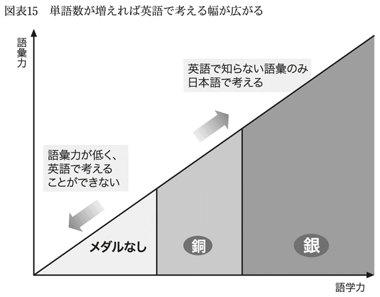
リーディングを５年間続ければ、新たに１万語以上の単語と主な慣用表現が使えるようになります。英単語帳を暗記するような無味乾燥なやり方に比べて、言葉の深い意味がつかめるようになります。特にやさしい言い回しほど英語らしい表現であり、日本人には難しいものですが、リーディングで鍛えられ、それらにも慣れてきます。
また、多読そのものが英語脳を育てる効果もあります。英語と日本語では語順が違いますから、意味がわからない場合、文をさかのぼらなくてはならないことがあります。最初のうちは仕方がありません。
それでも、読みを続けるうちに文の最初から語順通りに読んでも意味がわかるようになってきます。わからないときは、同じ英文を頭から最後までもう一度読みます。日本語の文でも、わかりにくいときにもう一度頭から読むことがあるのと同じです。そのほうがさかのぼるよりも内容が理解できるようになってきます。速く読めるようになると、日本語に訳さないで読んでいることに気づきます。英語脳が鍛えられています。
おすすめの教材にはタイムやニューズ・ウイーク、英国の週刊誌エコノミスト、写真満載の月刊科学雑誌ナショナル・ジオグラフィックなどがありますが、多読をするにあたり最も大事なことは「長期間続くように、嫌にならない教材を選ぶこと」につきます。教材の内容に興味がなかったら、それだけ苦痛が大きくなってしまいます。
多読の入門者には新聞、ネットがいい
リーディングの初心者はまず英字新聞かネット記事から入るのがおすすめです。その理由はタイムやニューズ・ウイークといった週刊誌に比べて、簡単な英語表現が使われているからです。
これは、取材してから記事を掲載するまでの時間と関係があります。新聞は翌朝の発行に間に合うように文章をまとめなくてはならず、ネットでは、出来上がった記事をすぐに公表します。そのため、どちらも凝った文章を書いている暇がありません。たとえば、株式などの金融市況欄は、締め切りギリギリまで情報を載せようとするので、文体にまで気にかける余裕がありません。毎日ほとんど同じような構文で記事ができています。
一方、リーディング力をつけるために書かれた英語教材を読んでも力はつきません。語学教材は、使用する語彙や構文には配慮しているのでしょうが、中身がいまひとつです。筆者に「この話をどうしても訴えたい」という気迫がないものが多く、読みたくなる気にさせる工夫がないようです。日本語で読んでも頭に入ってこないような内容は、英語ならなおさら頭に入ってきません。
リーディングについて、いろいろな疑問があるかもしれません。精読がいいか、速読がいいか？ 単語は引きっぱなしでいいのか、書き出して覚えるのか？ 引く単語は、わからないとどうしても困るものだけに絞ってはいけないか？ ぼくの答えは、「自分がいちばん楽なやり方でいい」です。大事なことは「嫌にならないこと」ですから。
辞書なしで読めるようになるのに５年かかったと述べました。精読でも速読でも、辞書を引く頻度を変えても、だいたい同じような年数が必要でしょう。これだけの期間続けられるかどうかがカギです。
銅メダルの中位から上位の人が「速く上達したいから、挑戦してみよう」と思うなら、ネット上の記事や新聞に挑戦してみるのもいいでしょう。ただし、リーディングの練習を本格的に行うのは、銀メダルの入り口に到達してからでかまいません。
英語に上達する上で、読みの練習は避けて通れません。時期がきたら、誰でも必ずやるようになります。銀メダルの入り口にたどり着けば「ここまできたのだから、逆戻りは許されない」といった意識が働きます。その日がくるのを待っていればいいのです。
読めるようになると、「聞く」「話す」「書く」も上達する
読みが楽になってくると、他の力も向上します。「聞く」「話す」「書く」が楽になってきます。銅メダル時代でも「話す」力が伸びることで、他の力が伸びますが、こうした波及効果は銀メダル時代のほうがはるかに大きいです。
・聞く
読みの力がつくと、ニュースが聞き取れるようになってきます。それまで聞き取れなかったのは、音がわかっても、肝心の単語の意味がわからないからです。留学中の授業でも、教授の話が理解できたのは指定された本を読んで予習をして行ったときでした。読みが楽になった段階では、ニュースなら７割くらいは聞き取れるようになります。
・話す
スピーキングも上達します。言いたいことが英語で伝わらないということはなくなります。自分で「いいところまできた」と実感が持てるようになります。
・書く
ビジネス文書では、帰国子女を上回る力を発揮します。企画書、報告書を英文で書く場合は内容の優劣がものをいうので、英語ができるだけでは役に立たないからです。
図表16に銀メダル英語の概要を記しました。５年間のリーディングを終える頃には、英米人が向こうからジョークを仕掛けてくるようになります。会議通訳を職業にすることもできます。プロになれたという自信が湧いてきます。
このレベルになると、英検の級やＴＯＥＩＣの点数はまったく意味を持たなくなります。仕事が英語で十分できるので、そうした「勲章」を披露する必要がないからです。ちなみに、英検やＴＯＥＩＣといった試験に重きを置くのは日本の会社だけです。その理由は社内に金銀メダル級の人材がまずいないからです。モチベーションを高く持ってもらおうと、点数をつけて銅メダルの中で差をつけようとするわけです。
銅メダルの中位までは「英語ができる」ことが自分の強みになりますが、これが銅メダルの上位くらいから少しずつ変わり、銀メダルになると事情が逆転します。「日本語ができる」ことが強みになります。プロの英語力がある人は世界に数億人はいるでしょうが、その中で日本語ができる人は一握りだからです。
米国で働き始めた頃のことを今考えれば、あの英語レベルでよくクビにならなかったと思います。その理由は、日本語ができたのがぼくひとりだったからです。英語が断トツでだめでも、日本がらみのことになると、ぼく以外では誰も対処できなかったからでした。
６―２ 笑いながら耳を鍛える
「聞く」ことが最も英語脳を鍛える
リスニングは洋画や海外のテレビ番組の英語を熱心に聴くのがいちばんいい上達方法です。笑ったり楽しんだりしているうちに力がつきます。金メダルをめざす人はここに注力してください。
英語は使わなければ、力が落ちます。ぼくは以前に、１ヵ月間、英語をまったく読まなかったときと、これとは別に英語をまったく聞かなかったときがありました。どちらの場合により力が落ちたかというと、リスニングをしなかったときでした。１ヵ月間読まなかったときは、復帰した最初の２週間は速度が上がりませんでしたが、すぐに元に戻りました。しかし、１ヵ月間まったく聞かなかったときは、聞き取りの力だけでなく話す力も落ちていました。
その理由は、聞き取りのほうが読みに比べてより英語脳を使っているからです。文章を読むときは、わからない箇所に出くわすと、そこで立ち止まります。そのときに、どうしても日本語で考えてしまいます。
これに対して、英語を聞くときは相手が矢継ぎ早に話してくるので、英語脳の休む暇がありません。別の言い方をすれば、聞き取りをしないのは、運動で言えばいちばんきついトレーニングを避けるようなものです。
多くの専門家は「聞き取りが最も重要だ」と言っています。その通りなのですが、それを真に受けて、銅メダルになったばかりの初期段階から聞き取り練習をスタートすると、すぐに挫折してしまいます。聞き取りは「読む」「書く」「聞く」「話す」の４つの能力の中で最も難易度が高いのです。
リスニングに苦労しているのは日本人だけではありません。ぼくの友人の中国人やアラブ人には、幼い頃から英語教育を受け、母国語よりも英語のほうが得意な人たちがいます。それでも聞き取りは楽ではないようで、ネイティブたちが早口で議論を始めるとついていけないと言っていました。耳で認識できる周波数の幅がかなり違うからです。これに対して、仏、独、スペインなどの友人は「聞き取れない音はない」と言っています。
そのようなわけで、リスニングが苦手なことを必要以上に嘆くことはありません。
空前の大ヒットドラマが最高の教材
最も効果的な方法は英米のテレビドラマや映画を見ることです。大ヒットの映画になると、日本でも１０００万人以上の人が映画館に足を運びます。これだけの数の人たちがわざわざお金を払ってまで行くのですから、それが苦痛であるわけありません。このように「どうしても見たい」ものを教材に使えば、聞き取り練習に嫌気がさすことはありません。
みなさんが作品を選択するなら、世の中の評判が空前に高いものをおすすめします。英語の教材として長い間つき合っていくわけですから、「ちょっとおもしろい」という程度ではすぐに飽きてしまいます。「早く続きが見たい」と思うくらいおもしろい作品を探してください。大好きなら、「細部まで理解したい」という気持ちになるでしょう。
これに対して、出来合いの英語教材を聞くのは最悪です。ニュースや大統領のスピーチもやめておいたほうがいいでしょう。子供番組もやめましょう。ぼくは短気なのかもしれませんが、「これが全部聞き取れたからといって何になるんだ」と反発する気持ちが起きてしまいます。
私たちが日本語のニュースを見るときは真剣に内容を追うというより、「今日はどんなニュースが起きたのか」だけを聞いています。また首相の施政方針演説はテレビで中継されますが、これを見る人は少ないでしょう。怪獣やスーパーマンが出てきても大人は楽しくありません。日本語でも真剣に見ないもの、つまらないものは英語でもおもしろいはずがありません。
何回も見たくなる作品を選んでください。２回目には１回目でわからなかったところがわかるようになることが新たな楽しみになります。見るだけでなく、俳優の表情や身ぶりを真似しながら英語を口にするのも楽しいものです。これに対して、駄作では初回から熱が入らず、時間の無駄になってしまいます。
わかるまでは字幕を見ないのがコツ
ここで具体的なリスニングの学び方を紹介します。
ぼくのおすすめは、テレビや映画館で見るのではなくて、何度も繰り返し見ることのできるＤＶＤです。まず１回通して見ます。字幕は出さないでおきます。筋がわかればいいという程度の気持ちで気楽に見ます。最後まで通して見れば、登場人物の性格や人間関係がわかりますし、後の展開の伏線となるセリフや情景が最初のほうにあるのもわかります。
その後で、すべてを詳細に聞き取ろうとします。このときも字幕なしです。わからないところは何度も聞きます。少しずつわかるところが増えてきます。これ以上はわからないとなったら、そこで初めてＤＶＤを操作して英語の字幕（正解）を見ます。洋画ファンというだけではリスニングができるようにならないのは、最初から字幕を見てしまうからです。
やり方はレベル別に少しだけ異なります。わかるまでとことん聞くのは金メダルをめざす人です。簡単に正解を見てはいけません。これに対して銅メダルの人は、ある程度のところで字幕を見てもよいでしょう。英語の字幕を見ても、「本当に字幕の通りに発音されているの？」と思うことが少なくありません。それ以上は追求しなくてかまいません。やりすぎは嫌いになるもとです。銀メダルになったばかりの人はこの中間くらいのアプローチがいいと思います。
なお、銅メダルになったばかりの人で字幕なしではまったくわからないという人は初めのうちは日本語字幕を見るのもやむを得ません。その場合でも、ドラマの内容が理解できたら、字幕なしで英語を聞くようにしてください。
金メダルをめざす人は、字幕を見てわからない表現がでてきたら、ためらうことなく辞書を引いてください。大辞典が必要になります。俗語、米国の地名や商品名が出てくるからです。たとえば、日本語ならば六本木、忠犬ハチ公、カルピスといった種類の単語がドラマには続出するのです。
英字新聞やタイムに出てくる単語は中辞典でほとんど間に合います。しかし、リスニングでは大辞典が必要です。このことは聞き取りがいかに難しいかを物語っています。銅メダルの人は中辞典を引いて、その語句が辞書に出ていなかったら、「これは重要じゃないんだ」と思って飛ばして結構です。
こうした作業を行っていくと、１本のテレビドラマを見るのに、金メダルをめざす人でも最初はただ通して見るときの４～５倍の時間がかかります。数回目には所要時間が半分になっているでしょう。銅メダルの人は楽しめる間だけ繰り返し見て、次に進むようにします。
コメディーは最高の教材だ
おすすめの教材はコメディーです。米国を中心に、シットコム（sitcom）というコメディーが盛んです。これは米国版の漫才、落語のようなものだと考えてください。大概の場合は家の中で家族や友人が何やら話しています。しかも、いつ見ても同じ部屋や場所で、数秒に１回観客の笑い声が聞こえます。
ユーモアやジョークがふんだんに登場します。最初のうちは言葉の意味がすべてわかったとしても、どうしておもしろいのかわからないところがたくさんあります。でも、そのうちに自分でも笑えるようになります。英米のジョーク文化を学ぶにはもってこいです。
シットコムの難しさは早口で話す登場人物が多いところです。ニュースを読むアナウンサーのように、一定の速度で明瞭な発音のもとに話すわけではありません。ニュースが８割聞き取れる人でもシットコムだと５～６割になってしまうかもしれません。
「シットコムが早口すぎるとしたら、ニュース番組のほうが初心者向きではないのか」という疑問を持つ人もいるでしょう。繰り返しになりますが、ニュースはおもしろみがありません。よほどの大事件でもない限り、ついつい引き込まれてしまう、ということがありません。また、「シットコムを見ていて、ビジネスに役立つのか」と疑問に思う人もいるでしょう。英語学習に当たっては「何に効果的か」という判断基準は捨ててください。「何が続けられるか」がポイントです。
おすすめのＤＶＤはこれ
どのようなＤＶＤを視聴するのがいいかを記しておきます。基本は自分が好きだと思えるもの。
ぼくのおすすめは『フレンズ（FRIENDS）』です。１９９４年の放送開始以来、10年の長寿番組となりました。６人の主役の出演料は、当初は１人１本当たり30万円だったのが、最終回には１億円になったという評判です。最終回の視聴者は５０００万人を上回ったと言われています。
おすすめする理由はとにかく笑えること。海外でも視聴されていることを意識してか、ジョークが単純でわかりやすいのが特徴です。30分番組で全２３８話あります。１日１作品見ても、約８ヵ月かかります。10年分を見たら相当なリスニング力がつきます。
コメディー以外についても推薦しておきます。スリルのある番組も教材にはぴったりです。おすすめは『24（TWENTY FOUR）』です。２００１年に始まり、８年続きました。１時間番組です。１年目はゴールデングローブ賞主演男優賞、２００４年には作品賞、２００８年にはエミー賞を受賞しています。数分先の展開もわからないようなサスペンスで構成されています。「いったいどうなっちゃうのだろう」とドキドキします。
テレビドラマを２作品紹介しましたが、もちろん映画でもまったく問題はありません。
本格練習は金メダルをめざす頃からでいい
リスニングは銀メダルになってもなかなか自信が持てない泣き所です。銀メダルになれば、仕事上の会話は難なくできるようになりますが、ランチとかアフター・ファイブの会話には緊張します。仕事では話題の範囲が最初から限定されていて、相手が何を言うか、大体は想像がつきますが、ランチでの会話は自由で、何が飛び出すかわかりません。予測がつかないことで実力不足を感じてしまいます。
リスニングの本格練習に入るのは銀メダルの上位、つまり、金メダルをめざす頃になってからでも遅くありません。その頃になると、「話す」「読む」「書く」には問題がなくなり、あと残る攻略点は「聞く」だけになっています。そうなると、力の入れ方が違ってきます。
銀メダルになったばかりの人や銅メダルの中位、上位の人がリスニングの練習をする場合は、「聞き取りの力を向上させるぞ」とあまり力まないで、楽しんでやっているうちに結果として実力が伸びるものだと思ってください。銅メダルの人でも毎日30分くらい取り組むだけで、英米人の仕草や感情の表わし方、ジョークに慣れ、ネイティブと話すのが苦でなくなってきます。
金メダルをめざす人でさえ、最初のうちは「本当に聞き取れるようになるのだろうか」と不安になるものです。ぼくがそうでした。しかし、教材がこの上なく楽しいと、リーディングの勉強に比べて「さあ、やるぞ」と気合いを入れることなく勉強を始めることができます。人が見たらテレビ画面を見て笑っているだけですから、勉強しているようには見えません。
銀メダルの人は１日60分から90分聞き取り練習を行うと、５年くらいで聞き取りが楽になってきます。よほどの早口番組でない限り、８割程度聞き取れるようになります。金メダルに到達です。
金メダルになれば、業界トップクラスの実力
図表17にあるように、金メダルになると、「英語に今ひとつ自信が持てない」という劣等感から完全に解放されます。銀メダルとの最大の違いがここです。ネイティブの話がわからない場合でも、「自分の力不足ではない。相手が訳のわからないことを言い出したからだ」と思えるようになります。
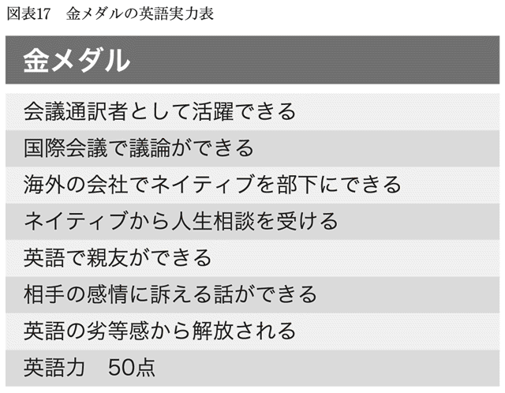
相手に繰り返して話してもらう際に、「すみませんが、もう一度お願いします」と言いますが、銀メダルまでは「こちらの力不足で、本当に申し訳ない」といった気持ちになります。これに対して、金メダルになれば胸を張って繰り返しを求めることができます。
また、英語を話しているときに、日本語で話すときと同じように、感情がこもるようになります。悲しい／嬉しい気持ちを訴えたいとき、相手を鼓舞したいとき、日本語で話す際とまったく同様の感情が浮かんできて、それが自然と言葉の中に現われるのです。話し始めるときに、「さあ、英語を話すぞ」と意気込む必要がなくなります。英語で話しかけられると条件反射のように英語が出てきます。
それでも、英語力はネイティブの半分です。
「金というのにどうしてまだ50点なんだ？」と思うかもしれません。
たとえば、日本語の例を見てみましょう。
美空ひばり
桃太郎
飛び出すな、車は急に止まれない。
この紋所が目に入らぬか。ここにおわす方をどなたと心得る。
日本人でこれらの意味がわからない人はいないでしょう。これ以外に、会社名、商品名を数限りなく覚えています。これらは日本で生活をするために必要な単語です。いわば、日本語の現地語としての側面です。同じようなことが英語でも同様にあります。こうした話が会話の中に入ると話の流れがわからなくなってしまうことがあります。ネイティブでないとわかりにくい文化や教養が１００点中の20～30点を構成していると思われます。
あるときぼくはネイティブからビジネス文書を邦訳する仕事を依頼され、１週間後にさらに推敲された改良版の原稿をいただいたことがありました。すでに翻訳を終えていたので、ぼくは英語の変更箇所だけをチェックしましたが、日本語版にはひとことの修正もする必要がありませんでした。ネイティブは最善の仕事をしようとして、細かなニュアンスにまで手をつけたのですが、訳出した場合は、取るに足らない程の違いになっていたのです。こうした微妙な差異が50点以上の世界です。
そのようなわけで、ビジネスパーソンの最終目標は英語力50点で十分です。私たちが日本語の達者な外国人に向かって水戸黄門の話をしないように、ネイティブも仕事上でつき合う相手にそこまでは要求してこないからです。
金メダルになれば自分の会社ではもちろん、業界内でもトップクラスの英語力になっています。業界を代表して英語のスピーチや国際会議への出席が求められるようになります。英語を職業にしたい人は会議通訳者として活躍できます。通訳の仕事は銀メダルからできますが、金になれば、「この通訳はレベルの高い仕事をする」と顧客から評判になるでしょう。
第７章 コミュニケーション力を磨くと心が通う
７―１ 英語上手に見える簡単なコツ「にこにこ」
コミュニケーション力には速効性がある
最後の章では、言葉によらないコミュニケーションの力について見ていきます。第１章で述べたように、英語上達のコツは「英会話も会話の一種」ととらえることであり、英語力とコミュニケーション力を同時に磨くことです。
ここでは、コミュニケーション力をどうやって伸ばすかについてより詳しく説明します。ここで紹介する力が伸びると、友達ができるようになり、人間関係が豊かになってきます。商談もまとまりやすくなります。英語力を磨くよりもすぐ結果が出ます。
会話では英語より大事な「にこにこ」
英語を話す際に心がけていただきたいのは「にこにこ」することです。これが最も簡単に英語をうまく聞かせるコツです。英米人は日本人以上に、にこにこしながら会話をするからです。これだけでぐっと英語上手に見えます。
英検１級くらいの人でも、笑顔の大切さに気づいていない人が少なくないように思います。というより、笑顔の大切さに気づくのは英語のベテランになってからの場合が多いようです。構文、単語、発音などに精一杯なのでしょう。これはもったいない話です。
ぼくの妻は、仲良くなったホテル従業員から「あなたの英語はうまいけど、日本の外交官は下手だ」と言われたことがありました。ぼくら夫婦がアラビアで長期滞在用のホテルに泊まっていたときのことでした。そこには各国から来た外交官も住んでいました。
にっこり上手の妻は、銅メダル英語でも十分に、従業員と楽しく会話ができたのでしょう。これに対して日本の外交官は、語学力は高かったとしてもにっこりしないので、ホテルのスタッフとしては話が続いた気にならなかったのだと思います。
英米では、誰かと目が合ったら、
"Hi, we haven't met. I'm Nori."（初めてですね。ノリです。）
"I'm Maria."（マリアです。）
と言って話し始めます。
簡略する場合は、
"Nori."（ノリです。）
"Maria."（マリアです。）
と、自分の名前だけ言えばいいです。
あるパーティーでイタリア人の女性と話す機会があったとき、にこにこの底力を示す極端な例に出会いました。話すといっても相手はほとんど英語ができないことがわかりました。かろうじて、本人の名前と、国籍、夫の仕事の関係で一緒に来たことくらいを聞きだしました。ただ、彼女は話につまると、にっこりほほ笑むのです。つられてぼくもほほ笑むので、なんとか場がもちました。
ぼくはそのパーティを１時間くらいで切り上げて帰りました。帰りがけに会場を見渡すと、まだその女性が他の人と「談笑」しているではありませんか。実際には、その方は「談」はできないはずですから、にっこりほほ笑むだけでパーティを楽しんでいるのでした。
たどたどしい英語を話す日本人でも、このイタリア人女性より語学力は上の人が多いでしょう。しかし、話をする相手は、どちらと話すのが楽しいでしょうか。
文化圏ごとに頻度が違う「にこにこ」
ぼくは「にこにこが足りない」と言っていますが、日本に観光やビジネスでやってきた外国人が「日本人はつっけんどんな連中だ」という印象を持っているわけではありません。親切で誠実、裏表がない人たちだ、というのが日本人についての国際的な評価です。
日本人に愛想の問題が生じるのは、小売店やレストランなどで店側のスタッフと話をするときや見知らぬ人に接するときです。たとえば、ファミリーレストランで注文をする際に、にこにこはしないでしょう。ぼくは駅で階段を駆け上がっていく人が財布を落としたのを見つけ、それを拾ってあげたことがあります。その人は「どうも」とは言いましたが、笑顔は見せませんでした。
「日本人は他人には冷たい」のではなくて、英米と違い、にっこりすることに慣れていないのです。慣習の差です。
「慣習の差」という言い方ではなかなかわかりにくいでしょうから、「ありがとう」の例を挙げます。英米では"Thank you."を多用します。日本人以上に、機会をとらえては"Thank you."を言います。
これに対して、中国の文化では「謝謝（ありがとう）」はあまり言いません。日本に帰化した中国人の友人は「向こうに戻って大学の恩師を訪問した際に、つい『謝謝』と言ってしまったら、教授から『水臭くなったな』と言われたよ」と言っていました。彼によれば、日本人は中国人よりも「ありがとう」をよく言うそうです。彼はこの日本の慣習に慣れたようで、中国に帰って親しい間柄の人に「ありがとう」を言い、他人行儀な印象を与えてしまったようです。
「ありがとう」を使う頻度は英米＞日本＞中国という順番になっています。同じように、にっこりする頻度も文化圏ごとに違い、英米はその頻度が高い文化圏だということです。
これに対して、握手は、「日本ではしない。英米ではする」という図式ですから、「英米人が目の前に現われたら握手をする」と覚えれば済みます。にっこりの場合は私たち日本人もそれなりににっこりするので、それがまだ足りないことになかなか気づきません。
その実例を目の当たりにしたことがありました。アメリカ人の同僚とぼくの２人で日本の会社に商談に訪れたときのことです。相手は日本人の担当部長。部長は、アメリカ人の同僚からの質問には英語で答えましたが、日本人のぼくには日本語で返事をしました。
その際、部長は英語で話すときはにっこりして話すのですが、日本語になると笑顔がまったく出てきませんでした。会議が終わったとき、同僚は「あの人、君に敵意を持っていたのか？ なんで君と話すときはつまらなそうな顔をしてたんだ？」とささやきました。
ぼくは「日本語は真顔で話す文化なんだよ」と言いましたが、同僚には理解できないようでした。
これに対して英米人はいつでも笑顔です。エアロビクスのＤＶＤを見ればわかります。あれだけ激しい運動をしているにもかかわらず、インストラクターの顔には笑顔が貼りついています。
英米ではにこにこが身を守る
英米人が日常的ににっこりするのは、自分の身を守り、社会生活を円滑に行うためでもあります。英米は日本に比べて物騒な社会です。そこでは、笑顔が自分の身を守ることにつながります。
ぼくはアメリカで初めて銀行に行ったとき、どこにどう並んだらいいかわかりませんでした。列ができていればその後ろに並んだのですが、そのときは窓口で用事を頼んでいる人以外は１人も客がいませんでした。仕方なく、ぼくはその人の真後ろまで行ったのです。
その人はぼくが近づいてきたのに気づいて振り向き、"Hello!"と言ってにっこりしたのです。ぼくは彼の「嬉しそう」とも言える表情を見て、自分の知り合いが偶然その場に居合わせたのかと勘違いしそうになったほどでした。事情を話すと、「あそこの赤い線まで下がるんだよ」と言われました。そのときは最初の笑顔はもう消えていました。
自分のごく近くまで寄ってくる人からは自分の身を守る必要があります。その人の笑顔は「ぼくはあなたに危害は加えません。私はいい人です」という意思表示だったのだと思います。
にこにこは練習すれば誰でもできる
もちろん、英米人は損得の理由だけでにっこりするのではありません。相手への思いやりをにっこりで表わします。英米では大臣や社長でも自分の女性秘書を先に部屋に通します。この際に、
"After you."（お先にどうぞ。）
と素敵な笑顔を見せます。
初めのうちは、ぼくはこうしたＣＥＯたちの姿を見て、「なんと優雅に紳士的に振る舞うのだろう」とうっとりしていました。英米人と交わるうちに、成功している人ほど目下や弱者に対して優しく接し、相手をリラックスさせる雰囲気を持っていることに気づきました。ぼくが話しかけたときも"I'd never be busy for you."（あなたのためなら、忙しいからなんて言い訳しませんよ）と快く時間を割いてくれました。"for you"のところでぐっときたのを覚えています。
ここで、にっこりを増やす簡単な練習方法を紹介しましょう。エレベーターに乗るとき、一緒に並んでいる人に、にっこりほほ笑みながら、道を譲るのです。最近は日本でもエレベーターの中で、「お先にどうぞ」と譲る人が増えてきました。ただ多くの人は、この際もまだ笑顔不足です。いつもより若干余計ににっこりしてみてください。
男性の場合はレディファーストのレッスンにもなります。にっこりの練習はエレベーターに限らず、訪問先の会社の受付でも、花を買うときでもできます。
ぼくが最近やっているやや高度な練習は、不機嫌そうな人をにっこりさせることです。たとえば、飛行機の客室乗務員の中には食事を配る際に、笑顔を見せることなく、ただプレートを置いていく人がいます。こういう人を見かけたら、いつも以上に思いっきりほほ笑むのです。こちらのほほ笑み方次第では、相手もほほ笑むようになります。達成感を感じます。
自分は人づき合いがあまり得意ではないから笑顔もうまくできない、と思っている人もいるでしょう。でも、このにこにこ作戦に性格は関係ありません。英単語を覚えるように、テクニックとしてにこにこを覚えるわけです。
職場でも買物先でも、あらゆる場所で笑顔を振りまいてみてください。にこにこが習慣化してきたら、周りの人から「元気になったね」とか「何かいいことあったの？」とか言われるようになるかもしれません。英会話がスムーズに流れるようになるだけでなく、明るい人だと思われるという副次効果もついてきます。何より自分が明るい気持ちになります。
７―２ 名前、誕生日、趣味を覚える
成功者は人の顔・名前を覚える
英語が得意な人の中には「西高東低」主義者がいます。「西洋は進んでいる。日本は遅れている」という考え方です。多くのケースにおいてはぼくは意見を異にしますが、大きな例外があります。人の名前を覚える点では、欧米人に確実に軍配を上げざるを得ません。
名前を呼んで話しかけるのが相手に親しみを感じてもらう最も簡単な方法です。名前を覚えてもらう立場になるとその大切さが実感できます。ぼくの会社のトップは入社したての下っ端のぼくの名前をすぐに覚え、廊下ですれ違えば、
"Hi Nori, how are you?"
と声をかけてくれました。
多国籍企業でしたから、従業員は世界各地から来ていて、名前を覚えるのは大変です。プッシュパー（アフリカ男性）、サイズリー（タイ女性）、ハイション（中国男性）、シタール（インド女性）と聞きなれない発音のオンパレードです。しかし、ビジネスで成功する人は人の顔・名前をよく覚えます。
私たちは会社では大きな組織の中の歯車のひとつかもしれません。それでも、名刺の肩書のように、「第１事業本部 第１営業部 第１課 第１係の人」とは呼ばれたくはないのです。なのに、日本の職場では「経理部の子から内線があったよ」といった言い方をする人が少なくないようです。
名前で呼ばれると自分が相手にとって特別な存在だと思えてきます。名前を覚えることは英語をうまく話すことより大事かもしれません。その好例がぼくの香港のマンションの受付係、中国人のジェニファーです。
ぼくが外出から戻ってくると、ジェニファーは、
"Mr. Hayashi, post."
と言いました。１階に設置してある郵便受けに行ってみると、数種類の郵便が届いていました。ぼくは、
"Thank you."
と言ってエレベーターに向かおうとしたのですが、ジェニファーはまた、
"Mr. Hayashi, post."
と言うのです。郵便はもう受け取ったのに何のことだろうといぶかしく思いながら、ジェニファーの所に行くと、郵便受けに入らない大きな荷物を預かってくれていたのがわかりました。
ジェニファーの英語力ではPostと言うのがせいぜいなのですが、彼女は母国語が通じる中国系ばかりでなく、英米系の住民にも人気がありました。住民たちが毎年行う受付、警備、娯楽・体育施設担当などのマンション・スタッフの人気ランキングでは、最優秀賞はいつもジェニファーでした。彼女だけが住民の名前を覚えているからです。
名前を覚えると得をする
考えてみれば、日本人が名前を覚えるのが不得意なのはただ「名前を呼ぶ習慣があまりない」というだけのことです。日本語に名前を頻繁に呼び合う習慣があるのならば、私たちだって名前をもっと覚えているはずです。
「自分がしてほしいことは他人もしてほしい」というのが人間関係の基本でしょうから、ぼくも名前で呼びかけることを心がけるようにしました。
ぼくが最初に相手の名前を呼ぶことにしたのは、名前を相手に尋ねなくても済む場面でした。名札で相手の名前がわかるときです。これなら相手の名前が聞き取れないという問題もありません。
仕事柄、ぼくは１週間くらい同じホテルに缶詰になることがあり、朝食も夕食も同じホテル内のレストランで食べることが少なくありませんでした。数日するとウエイトレスの顔を覚えるようになったので、意を決して声をかけることにしました。
「○○さん、勤務時間が長いですね。朝７時に食事に来たときもいましたよね。今は夜の８時ですよ」といった具合です。すると、今日は休みの人が出たから、残業になったと答えが返ってきました。名札を付けているので名前を呼ぶのは簡単です。
私たちは一般に給仕に来た人のことにまったく注意を払っていないでしょう。これに対して、名前を呼べば「あなたを人として見ていますよ。ただのウエイトレスという役割だけで見ていませんよ」ということになります。
この発言ひとつで、相手はぼくのことを覚えてくれました。その日以降は素敵な笑顔で迎えてくれるようになりました。デザートのサービスをもらったこともありました。
ぼくが次に挑戦したのは電話の相手です。電話ならば、相手の名前が聞こえたときにすぐにメモすることができます。そのメモを見ながら、会話の中で何回か呼びかけるのです。
たとえば、「お電話ありがとうございます。こちらはお客様担当のローズです」と相手が名乗ります。この際に、紙に「ローズ」と名前を書きながら、
"Hi Rose, how is it going?"
と呼び掛けます。
相手は親しみを感じてくれるようです。「あと５ドルだけ余分に買えば、会計金額が１００ドルになりますから、10％割引が適用になります」とか「セールス・キャンペーンは来週始まりますから、今日買わないでそれを待ったほうが安くなりますよ」などとアドバイスをくれるようになりました。
名前を覚えることは「他人」の関係を「知り合い」の関係に早く変える力を持っています。知り合いの関係になれば、無愛想だったセールス・スタッフからも親切が期待できるのです。
誕生日を覚えると急速に親しくなれる
仕事とか買物といった場合には名前を覚えるのが効果的ですが、相手が既知の友人の場合は誕生日がそれに当たるのではないでしょうか。
みなさんもよくご存じの誕生日（ハッピー・バースデー）ソングは日本人が歌うのにもかかわらず、「ハッピーバースデートゥーユー」と英語で歌います。日本でも誕生日は大切ですが、海外ではなお大事だ、ということの表われです。それを痛感したことがありました。
友人たちと数人で食事に行く約束がありました。その日はたまたま、仲間のひとり、スコットの誕生日でした。ぼくは全員に電話を回して、こっそりケーキを用意することにしました。
食事が終わってローソクのついたケーキが運ばれてきました。
全員で、
"Surprise!"
と言って、誕生日ソングを歌いました。
スコットは「どうしてぼくの誕生日を知っていたんだ。誰かに言ったっけ？」と不思議がっていました。
しばらくして、スコットは電話をかけてくると言って席を外しました。そして、戻って来ると「会計をしてきた。今日はぼくにおごらせてくれ」と言うのです。彼以外のメンバーで割り勘にしようと決めていたぼくらはどうしていいかわからず、顔を見合わせていましたが、彼の気迫に負けてしまいました。その日のスコットはそれまででいちばん嬉しそうでした。
ぼくがその後急速にスコットと親しくなったのは言うまでもありません。
趣味の話で「あなたは特別」と言われるまでになる
相手のことで名前と誕生日以外に役立つのは、その人の趣味です。
米国で働くことになって、秘書をどう使ったらいいか戸惑いました。「秘書を持つ」というと偉ぶった感じに聞こえますが、その会社ではＭＢＡ卒業生には皆に秘書がつきました。
秘書スーザン・スミスは長年その会社で働いているので、彼女を味方につけて社内のことをいろいろ教えてもらおうと思いました。英語だって添削してもらいたいと思っていました。そのためには、彼女の趣味の話を聞いてみたら、親しくなれるかもしれないと思いました。
スーザンの趣味は、夫と一緒にロック・クライミング（岩登り）に出かけることでした。ぼくは山登りならぬ岩登りというものをそれまで知らなかったので、興味津々でした。ビルでいえば10階とか20階の高さの岩を登るのです。暗い時間帯は登れないので、夜明けとともに登り始め、日没までに戻ってこられるようにしなければいけません。
元来、運動神経の鈍いぼくはスポーツ全般が苦手ですが、話はおもしろかったのです。ぼくは事あるごとにその話題を振りました。スーザンは、ぼくが岩登りそのものに興味があるのだと受け取り、「そんなに興味があるんだったら、一緒に行こうよ」と何度も誘ってきました。
「そもそも、プロ級の人と一緒に行けるわけがないじゃないか」とぼくが言うと、「平気、平気」と言うのです。同じ場所に行っても上級者は真ん中の険しい所を登り、初心者は脇の簡単なところを登るから一緒にできる、というのです。
信頼関係が深まれば仕事がはかどります。ぼくらのチームワークのよさは上司の目にも留まるほどになりました。
アメリカでは秘書でも社長をファースト・ネームで呼びます。だから平等な社会なのかというと、まったく違います。
上司と秘書が食事に行くことは、クリスマスとか誕生日以外では考えられません。日本では昼食に出遅れた上司がアシスタントに「一緒に行こうか」と誘うことがあります。米国ではそんなとき、秘書が「昼食を買ってきましょうか」と言うことはあっても、一緒に行くことはどちらも想定していません。上司と秘書の間には身分差があるようにすら感じられます。事実、ぼくらのチーム以外は上司と秘書がうまくかみ合っていないようでした。
スーザンはぼくが米国を離れるときにマサチューセッツの四季を撮った写真集をくれました。この話をアメリカ人にすると皆が驚きます。秘書が上司に贈り物をするとは考えられないからです。彼女は"You are special."（あなたは特別）と言いました。
彼女は会社の他の誰にも趣味の話はしていませんでした。「そんなこと、誰も興味を持ってくれない」と言っていました。ぼくが初めてスーザンの話に興味を持ったわけです。つまり、彼女はタイプを打ったり、電話を取ったりする秘書のひとりとして扱われるのではなく、「自分はスーザン・スミスという人」と見られたことが嬉しかったのです。
誰だって仕事上の機能としてだけ接されるより、個性のある人間として扱ってほしいものです。つまり、自分はこの世にひとりしかいない「特別な存在」でいたいのです。英語が少しくらいおかしくても問題になりません。親しい関係になるために、そのきっかけになるのが相手の名前であり、誕生日であり、趣味の話です。
７―３ 真心を伝える
相手を認めたときに友達ができる
昔、親しくつきあってきた友達の顔を思い出してください。その人の笑顔が心の中に浮かぶだけで、温かい気持ちになりませんか。相手もきっとこちらのことを時々思い出して温かい気持ちに浸っているはずです。相互に温かい気持ちになるのはお互いの心が通じていたからです。
コミュニケーションの核心は真心です。人が友人づき合いをするのは「気が合うから」が理由でしょう。「気が合う」とはどういうことかというと、お互いが相手のいいところを何かしら認め、相手のことを好きになっているということです。それを表わすことが「真心を伝える」ことです。
真心を伝えることの重要性に気づいたのは、生まれて初めて外国人の友達を持つことができたときでした。トムはぼくの英会話スクールの先生。その日はたまたまレッスン生がぼく１人でした。トムは日本で事業を始めようと思い、とりあえず、英語の教師からスタートしていました。
いつものように、
"How are you? Any news?"
とぼくは言いました。何かニュースがある？ という意味です。
トムは「最近引っ越したんだ」と言いました。彼は来日してまだ半年。「あの汚い狭いアパートから出られてほっとしてる」と言ったのです。
ぼくがそこで言ったのは、
"You are great."
でした。ぼくは自分が思いついたことをとっさに口にしたのでした。彼は「なぜ？」という顔をしていました。引っ越ししたことがどうして「すごい」ことなんだろうか。トムはぼくの次の言葉を待っています。
「だってさ、この半年間、君はその狭い汚いアパートの事を一度も愚痴ったことはなかったよ。それってすごいよ」
トムはなるほどという顔に変わりました。
「成功するってそういうことだよね。つらいときにつらいって思っていたら、へこんじゃうよ。そこがトムのいいところだよ」と言ったのです。
この発言がもとでぼくらは友人になれました。トムはこの数年後にパートナーを見つけて事業を始めました。ぼくらの交友は今も続いています。
心が通じる鉄則：「好きになったらこっちのもの」
米国に住んでいた頃、近所のスーパーにレジ打ちの速いおばさんがいました。
「速いなあ。そんなに速いの見たことないよ」
とぼくは感心して言いました。
「何でも速いのよ。せっかちで早口すぎるって言われるから」
と照れている様子でしたが、「でもこの速さは本当にすごいよ」と言うと嬉しそうでした。そのスーパーに行ったのはその日が初めてだったのですが、おばさんはその後ぼくを忘れませんでした。
こちらが好意を持てば、その気持ちは相手に伝わります。社会的に地位の高い人でも市井の人でも、日本人でも外国人でも事情はまったく同じです。温かい人間関係を短時間に築くことができます。ぼくはこのことを「好きになったら、こっちのものだ」と表現しています。ただし、心にもないことを言ってはいけません。本当に心からそう思ったときに相手も心を開きます。
「それって簡単じゃないと思うわ」とＭＢＡのクラスメートは言いました。ぼくの言っていることが正しいのはわかる。でも、簡単には真似ができない、というのです。彼女は隣の女子寮に住んでいましたから、同じスーパーに通っていました。おばさんのレジを見ていました。確かに速いような気はしたけれど、まったく気にかけなかったと言っていました。
仮に目に留まっていたとしても、「速いなあ」という言葉にまではならなかっただろうというのです。事実、ぼくが初日から「お得意様」だったのに対して、彼女は半年経ってもまだお得意様扱いにはなっていませんでした。
ぼくだってどんな相手にも真心をもって接するということを昔からできたわけではありません。大学生の頃、まったく英語ができなかったぼくが最高の会話力だと判定されたことがひとつのきっかけだったのを思い出しました。
一言しかしゃべらなくても「最高の会話力」
デパートの中をふらふら歩いていたら、「あなたの英語力を確かめませんか？」と声をかけられました。よくある英語教材販売のセリフです。当時のぼくは学校の先生以外の外国人と話したことはなかったので、「ネイティブ・スピーカーが直接あなたの語学力を判断します」と言われて、「じゃあ、やってみよう」という気になったのです。
まずは、教材テープを聞くテスト。３割もできませんでした。そのあとネイティブ講師との会話レッスンです。この出来も冴えませんでした。
外国人講師はぼくの英語力を批評して、「聞き取りもスピーキングも普通の大学生程度だから悪くないよ」と言っていました。それは社交辞令で、つまり、「下手だ」という意味でした。その通りだから仕方ありません。
最後にネイティブ講師は「質問はある？」とぼくに聞きました。英語についての質問は特にありませんでしたが、ちょうどその頃、米国の大統領選挙が近かったので、「大統領選挙は日本にいても投票できるのですか？」と聞きました。
すると、「できるとも」と言い、米国外での選挙の仕組みや自分が投票しようとしている候補者の話を始めました。すべてを理解できたわけではありませんが、「この人、頑張ってる。偉い」という気持ちが湧いてきました。
年齢はぼくよりやや上という程度なのに、国をよくしようという気持ちに溢れていました。大学を出て安定した会社に入社するという生き方もあったかもしれませんが、異国に住むという決断といい、仕事内容といい、彼は安住とは程遠い選択をしていたのです。
ぼくは英語ができないので、相槌として、"Yes."と言うか、ただ頷くことしかしませんでした。ただし、真剣に聞こうとしたことは事実です。ぼくの眼差しに変化があったかもしれません。彼は「アメリカは今変わらなくてはいけない」といった持論を展開し始めました。
彼は語り終えると、ぼくのスピーキングの力を最高点につけ直しました。「君の会話力を見直した。君はここ数週間に会ったレッスン生の中で最高に会話力がある」と言いました。
誰でもできる方法は「聞き手に回る」
ぼくは『人を動かす』（デール・カーネギー著、山口博訳、創元社）に感銘を受けていました。この本は友人を作ったり人に影響力を行使したりするのに有益なルールを示した不朽のベストセラーです。同書の骨子を一言で要約すると、「人間関係で最も大事なことは人の話に耳を傾けること」となります。
ぼくが会話レッスン中に口にしたことと言えば、「大統領選挙は日本にいても投票できるのですか？」だけです。あとは彼が自分で話し続けたにすぎません。そのぼくが最高の会話力だというのです。誰だって自分が好きな話題を話せば楽しいはずですが、少なくとも彼はプロの英語講師として評価をしたはずです。なぜぼくは彼から高評価を得たのでしょうか。
彼は日々、日本人を相手に英語力判定をしていたはずですが、「質問は？」と聞いても誰も何も聞かなかったのでしょう。そうした日本人の気持ちはよくわかります。ネイティブから返ってくる答えがどうせわからないだろうから黙っているのです。そんなわけで、彼はレッスン生と会話らしい会話をまったくしていなかったのです。
すなわち、ぼくが「最高の会話力」だったのではなくて、ぼくは彼にとっての「唯一の会話らしい会話」の相手だったのだと気づきました。彼は最初はいつも通りにネイティブ・スピーカーの役割に徹していただけでしたが、ぼくの相槌に促されて途中から個人として話し始めたのです。
彼は最後に、
"I am John."（ぼくはジョンというんだ。）
と言い、握手を求めてきました。嬉しそうでした。
ぼくはその後米国に住み、友人をたくさん作ることができました。銅メダル英語だった自分は、あれこれ言おうにも英語力がないので、聞き手に回らざるを得ませんでした。それが幸いしたわけです。
「外国人とつき合うと日本のことを聞かれるから、話せるようにしておいたほうがいい」という人がいます。でも、ぼくは茶道とか歌舞伎、相撲について聞かれた経験はありません。インターネットで検索すれば出てくるような話題でつき合いが深まることはないでしょう。
日本人の謙虚さは思いやりの表われ
真心を伝えるとか聞き手に回るとは相手に思いやりの気持ちを持つことです。こうしたことは日本人は得意なのではないでしょうか。それは日本人の気持ちの底辺に流れる謙譲の心と深い関係があります。謙譲とは相手への思いやりが言葉として形になって表われたものです。
たとえば、日本人はよく、I can not speak English.と言います。これは「自分には英語を話そうにも話すだけの能力がない」という意味に聞こえます。日本人ノーベル賞受賞者が授賞式のスピーチでこう切り出したとき、会場から笑い声が起きました。この背景にはそうした事情があります。
また、日本語の「おかげさまで」には自分の幸運が他人によってもたらされているという語感があります。このニュアンスは英訳ではなかなか伝わりません。
これに対して欧米では、自分を実物大より大きく見せようとする文化があります。ぼくは「日本の株式についての本を書きたいから手伝ってほしい」とあるアメリカ人から言われたことがありました。何回かやりとりをしていくうちにわかったのは、その人は日本市場についての知識がほぼゼロだということでした。それでも本を書こうとしているのです。実はこれは珍しいことではありません。
人とのつき合いが深まれば、当初は卑下しようが、風呂敷を広げようが、だんだんと等身大の自分を出さざるを得なくなってきます。「俺が、俺が」と主張することのない日本人の姿勢に、英米人は「謙虚だ。決して自分を飾り立てることがない」と美徳を見いだしているようです。誰だって虚飾のない人のほうが信頼を寄せやすいはずです。その意味で、日本人はネイティブの友達が作りやすいのではないか、とぼくは思っています。
ぼくはアラビアに赴任した際に、住まいの物件探しに奔走しました。朝から何軒も不動産屋を回り、夕暮れになりました。「もう閉店時間が近いからいい顔はしないだろう」と思いましたが、最後の１軒に入りました。案の定、向こうは「今日はもう堪弁してくれ」という感じでした。こちらが遅かったのですから、仕方がありません。
ぼくは店を出る際に振りかえって、「シュクラン（ありがとう）」と言いました。最後まで英語で通すこともできましたが、それではぼくの申し訳ない気持ちが伝わらない気がしたからです。その際、ぼくの頭は自然と下がりました。
外国に行ったら、頭を下げずにその国式で挨拶すべきだ、と言う人もいますが、世界の人々はこのあたりに日本的な謙譲の心を感じとるようです。こちらが心を込めれば必ず伝わります。相手は「あなたはアラビア語ができるのか」と言い、物件の紹介が始まったのです。
その後彼とは親しくつき合うようになりました。実は、ぼくの知っているアラビア語は「ありがとう」と「こんにちは」しかありませんでした。
ぼくはこうして外国人の友人を得てきました。
大多数の人は、真心を伝えることの大切さにすでに気づいているはずです。あとはそれを実践するか否かで差がつきます。自分にできることからまず始めてみてください。
外国の友人は私たちの英語力を気にかけていない
本書を終えるにあたって、みなさんに大事なアドバイスをしておきたいと思います。「人前で間違いだらけの英語を話したら恥ずかしい」という気持ちの人がいるのではないでしょうか。下手な英語を披露することは自分の恥部をさらけ出すようなものだと考えるわけです。これが、コミュニケーション力の上達を阻害する、やっかいな壁になっています。
ぼくがこれまで出席したパーティの中でいちばん白けたのは、「ひそひそ英語」のときでした。ある日本人の出席者はネイティブと日本人が大勢いる席で、隣に座ったネイティブだけに聞こえるように耳元にささやくのです。自意識過剰でしょう。他の日本人には自分の英語を聞かせないという態度でした。皆で会話をしているのに、途中でその人のひそひそ話が始まるおかげで、ちっとも座が盛り上がりませんでした。
ぼくは英語が下手な人をたくさん知っていますが、誰ひとりとして、ネイティブや日本人から英語力の欠如を蔑まれたのを見たことはありません。ぼくの経験の範囲では、「もうあの人は呼ばないほうがいいよ」と周りの暗黙の了解になってしまったのは、このひそひそ英語の人だけです。
英語力にこだわるのは自分自身なのです。
東日本大震災の直後、外国から何人もの友人が心配してぼくにメールや電話をくれました。数年会わなかったとしても、ぼくのことをすぐに思い出してくれたのです。その際、友人たちはぼくの英語力を思い出していたでしょうか。
外国の友人が私たちのことを思い出すときに、「いいやつだ」「おもしろい人だ」「仕事のできる人だ」「心の優しい人だ」「でもちょっとおっちょこちょいだ」など、さまざまな印象で思い出すでしょう。ぼくが非ネイティブの友人の英語力をまったく気にかけていないように、向こうも私たちの英語のレベルについては気にかけていないにちがいありません。
私たちは英語を話してお互いの関係を深めますが、英語そのものの力が「友人になれるかどうか」に関わる比重は案外高くないのです。
これは銅メダルだけでなく、銀メダルや金メダルの人でも同じです。ぼくは英語が通じるようになればなるほど、このことを痛感しました。もっと早く気づいていれば、早くからネイティブを怖がらずに英語が話せたのにと思いました。このことが、これから英語を本格的に学ぼうとするみなさんに最も伝えたかったことです。
第２章で紹介したコミュニケーション語を覚えるためのおすすめの教材を紹介します。ぼくのおすすめは「やさしいものを選ぶ」ことです。教材を開いてみて、わからない単語がたくさんあるようだったら、それは不合格です。「自分の力を上げるためにやや難しい教材をすすめられることはよくある。だが、やさしいものをすすめられたのは初めてだ」と思うかもしれません。しかし、語彙量を増やしたり、構文を覚えたりするのが目的ではありませんので、ここではやさしい単語のたくさんあるものを選ぶのが正解です。
やさしい単語でできているコミュニケーション語は、どちらかというと初級・中級の教材によく出てきます。だからといって、中学や高校までの教科書に出てくる馴染みの深い表現ばかりではありませんので、多様な表現が載っているいい教材を選んで、効率よく繰り返し読むことをおすすめします。
具体的には以下のような教材があります。
１．『英会話フレーズブック――リアルな日常表現２９００』ＣＤ付き、多岐川恵理、明日香出版社
２．『日常英会話表現４０００――The simplest is the best』ＣＤ付き、小島加奈子、語研
３．『ＣＤ ＢＯＯＫ 日常英会話パーフェクトブック』ＣＤ付き、石津奈々、ベレ出版
４．『暮らしと仕事の英語表現８０００』ＣＤ別売り、デイビッド・セイン、語研
５．『英会話日常表現大辞典１００００＋――言いたい表現はすべてここにある！』ＣＤ別売り、ソリクラブ、アルク
これらは銅メダルをめざす人、現在銅メダルの人向けの教材です。ここでは各教材中に掲載されている表現数の順番に表示しています。たとえば、１の書籍では２９００の英語表現があり、２は４０００ある、といった順番です。店頭で見て自分の気に入るものを選んでください。価格、ＣＤが別売りか付属かも選定の理由になるでしょう。銅メダルの初心者には英文が短い２の教材がおすすめです。
また、ＮＨＫのラジオ・テレビ英語講座も素晴らしい教材です。ラジオの講座は、インターネットで好きな時間に無料で聞くことができます。日々のスキットの中にコミュニケーション語が出てきますから、それらを覚えていけばいいでしょう。
表現集に付属しているＣＤを聞いたり、ＮＨＫラジオやテレビの英語番組を視聴したりして、ネイティブの英語を真似るのはとてもいい方法です。
一般的な聞き取り練習はわからないことだらけで英語が嫌いになってしまいますが、コミュニケーション語だけならそれほど苦労することなく聞き取れるでしょう。コミュニケーション語を英語らしく話す練習をすることで、同時に耳を鍛えることができます。一石二鳥です。
あとがき
本書を書きながら、ぼくは金メダル、銀メダル英語の人たちに、機会あるごとに「学生の頃は英語が好きでしたか？」「海外に住んでみたいと思いましたか？」と質問しました。すると、ほぼ例外なく、上級者たちは習い始めた頃から英語が好きで、海外住まいへの拒否反応はありませんでした。
つまり、英語好きの人は昔から英語に楽しく接しているうちに力をつけていくのに対し、英語嫌いの人は苦手意識が強く、英語を敬遠し続けることになります。数学嫌いが一生続くように、英語嫌いが途中から好きになることはあまりありません。
しかし、時代は変わり、英語が嫌いでも仕事で英語が必要とされるようになってきました。今までは留学や海外駐在を経験しないとできないとされていたような、やや高度な外国人との交渉や交流についても、英語嫌いだといって避けて通れなくなってきたのです。しかも、時間をかけて英語を学んでいては間に合わなくなってきました。
ぼくの根本的な主張は、「英語が苦手な人でも銅メダル英語の力をつければかなりのことができるし、そのために要する努力は最小限で済む」というものです。ぼくは自分を含めてそういう人たちをたくさん見てきましたし、ウェブ連載時からこれまでにぼくに寄せられた英語上級者の声にも「まさに自分がやってきたことだ」という内容が多くありました。
みなさんの声にぼくは意を強くしましたが、銅メダルをめざして現在奮闘中の方のご意見もできるだけ伺いたいと考えています。本書に関してお気づきの点、気になる点がありましたら、ぼくまでメールをいただければ嬉しいです。
いただいたご感想やご意見は可能な限り改訂の際に反映させていただきます。本書に関するご質問についても可能な限りお答えします。みなさんのお力をいただくことで、本書をよりわかりやすいものにし、読者のみなさんにフィードバックできればと思います。
メールアドレスは以下の通りです。
questionhayashi@yahoo.co.jp
本書を書くに当たっては多くの方々のお力をいただきました。
松本道弘先生には本文中の英語を校正していただきました。学生時代からあこがれていた先生の弟子にしていただいたとき、「ぼくはなんて幸せなのだろう」と思いました。今回、自著のお手伝いをしていただき、同じ思いが込み上げてきました。
『日経ビジネスオンライン』連載中（２０１０年10月～２０１１年６月）は日経ＢＰ社副編集長の森永輔氏にご助言をいただきました。『日経ビジネスオンライン』掲載記事の中でアクセスランキング上位を毎週維持することができたのは、ひとえに森氏のおかげです。
ぼくの畏友で立正大学経済学部教授の林康史氏は、原稿を校正してくださいました。連載時に比べて読み物として楽しさが増しているのはそのためです。林氏の卓越した文章力、国語力に改めて敬服しました。また、林ゼミ生の皆さんにも通読していただき、山本あかね氏、竹林拓也氏、千種雅史氏、島袋春陽氏、北條浩樹氏、正木康奨氏、須藤洋氏には至らぬ点をご指摘いただきました。
さらに、前田隆敏氏、古関惠一氏、林信広氏、城戸千奈津氏、天野広人氏、田倉達彦氏、九内麻希氏、歌代哲也氏からも、本書の根幹にかかわるような貴重なアイデアやアドバイスを得ることできました。
光文社の担当編集者、山川江美氏とは新書化に当たって「お互いに妥協することなしに全力でやり抜こう」と約束しました。その結果、本書は編集者の知恵や創意工夫でいっぱいです。ぼくにとって忘れがたい仕事になりました。
そして最大の協力者は妻真紀子です。現在銅メダルの妻は「自分が役に立つと思う内容ならこれから銅メダルをめざす人にも役立つはず」と、草稿を何度も読み、例文やエピソードの取捨選択などにも積極的にかかわってくれました。その結果、本書はどこまでも実践的であることを追求できました。
連載中は４５０件近いコメントを読者のみなさんから頂戴しました。そのすべてを注意深く拝読し、本書にまとめる際の参考にさせていただきました。その際答えきれなかったご質問にも本書でお答えしています。お寄せいただいたコメントのほとんどが好意的なご意見であり、それがぼくの支えになりました。
林則行（はやしのりゆき）
世界最大の政府系ファンド・アブダビ投資庁の元日本株式運用部長。欧米の金融機関でもアナリスト、ファンドマネージャーを歴任した投資のプロ。米国公認会計士。英語は現在金メダルレベル。英語名人松本道弘の弟子。高校時代に株式投資にはまり、本場ウォール街で投資を極めようと決意したが、まるで英語が話せなかった。カタコトでもどんどん通じさせるワザを生み出したことが転機となり、コロンビア大学MBAにギリギリ合格、米国で就職した投資会社では、社内最低の英語力ながら、ネイティブの英文やプレゼンテーションの指導をするまでになった。著書に『伝説のファンドマネージャーが教える 株の公式』（ダイヤモンド社）などがある。
「銅メダル英語」をめざせ！ 発想を変えれば今すぐ話せる
2011年９月20日初版１刷発行
2011年10月28日電子書籍版発行
著 者―林則行
発行者―古谷俊勝
装 幀―アラン・チャン
発行所―株式会社光文社
メール―sinsyo@kobunsha.com
(R)本書の全部または一部を無断で複写複製（コピー）することは、著作権法上での例外を除き、禁じられています。
(C)Noriyuki Hayashi 2011